Machine Learning
Contents
- Prerequisites
- Linear Regression & Cost Functions
- Perceptron Classification Algorithm
- Probabilistic Binary Classification with Logistic Regression
- K-Nearest Neighbors Classification
- Generalized Linear Models (GLMs)
- Generative Learning Algorithms: Gaussian Discriminant Analysis
- Naive Bayes & Laplace Smoothing
- Kernel Methods
- Support Vector Machines (SVMs)
- Deep Learning: Neural Networks & Backpropagation
- Decision Trees
- K-Means Clustering
- Gausian Mixture Model & EM Algorithm
- Factor & Principal Component Analysis
- Deep Learning: Convolutional & Graph Neural Networks
- Reinforcement Learning
Prerequisites
[Hide]
In general, a learning problem considers a set of $n$ samples of data (possibly multivariate) and then tries to predict properties of unknown data. More specifically, it is about learning some properties of a data set and testing those properties against another data set. A common practice in machine learning is to evaluate an algorithm by splitting a data set into two. We call one of those sets the training set, on which we learn some properties; we call the other set the testing set, on which we test the learned properties.
Notation
We begin by establishing some notation.
- The input variables are usually denoted with the letter $x$ (which lies in the input space $\mathcal{X}$. They are known as the independent variables or explanatory variables.
- The outputs are denoted with the letter $y$ (lying in the output space $\mathcal{Y}$). They ar knwn as the dependent variables or response variables.
Types of Machine Learning Algorithms
Learning problems fall into a few categories:
- In supervised learning, each example in the training set is a pair consisting of an input object and a desired output value (aka supervisory signal). A supervised learning algorithm analyzes the training data and produces an inferred function, which can be used to mapping new examples. This requires the learning algorithm to generalize from the training data to unseen situations in a "reasonable" way, ideally producing correct results. More mathematically, our goal is, given a training set, to learn the hypothesis function
\[h: \mathcal{X} \longrightarrow \mathcal{Y}\]
that is a good predictor for the corresponding value of $y$.
- Classification: Samples belong to two or more classes and we want to learn from already labeled data how to predict the class of unlabeled data. Examples include handwritten digit recognition, in which the aim is to assign each input vector to one of a finite number of discrete categories. Another way to think of classification is as a discrete (as opposed to continuous) form of supervised learning where one has a limited number of categories.
- Regression: If the desired output consists of one or more continuous variables, then the task is called regression. An example of a regression problem would be the prediction of the length of a salmon as a function of its age and weight.
- In unsupervised learning, the algorithm is not provided with pre-assigned labels or scores for the training data. As a result, unsupervised learning algorithms must first self-discover any naturally occuring patterns in that training set. Common examples include clustering, where the algorithm automatically groups its training examples into categories with similar features, and principal component analysis, where the algorithm finds ways to compress the training data set by identifying which features are most useful for discriminating between different training examples, and discarding the rest.
- In semi-supervised learning, the algorithm is provided with a set that combines a small amount of labeled data with a large amount of unlabeled data during training. More specifically, a set of $l$ samples $x^{(1)}, \ldots, x^{(l)} \in \mathcal{X}$ with following labels $y^{(1)}, \ldots, y^{(l)} \in \mathcal{Y}$ and $u$ unlabaled samples $x^{(l+1)}, \ldots, x^{(l+u)} \in \mathcal{X}$ are processed. The algorithm can work with this by either:
- discarding the unlabeled data and doing supervised learning, or by
- discarding the labels and doing unsupervised learning.
Linear Regression & Cost Functions
[Hide]
Let us assume that both $\mathcal{X}$ and $\mathcal{Y}$ are complete metric spaces (i.e. it is topologically complete). In most cases, this will be such that $\mathcal{X} = \mathbb{R}^d$ and $\mathcal{Y} = \mathbb{R}$. Our goal is to find an (affine) linear hypothesis function $h$ of the form
\[h_\theta (x) \equiv \theta_0 + \sum_{i=1}^d \theta_i x_i\]
where $\theta_0$ is the translation factor. For simplicity of notation, we rewrite the coefficients of linear $\theta$ and the input parameters $x$ as
\[\theta = \begin{pmatrix} \theta_0 \\ \theta_1 \\ \theta_2 \\ \vdots \\ \theta_d \end{pmatrix} \;\;\text{ and }\;\;\; x = \begin{pmatrix}1 \\ x_1 \\ x_2 \\ \vdots \\ x_d \end{pmatrix} \]
which gives us
\[h_\theta (x) \equiv \theta^T x\]
Before we go any further, we must actually answer a very fundamental question: How do we define what the best line is? It turns out that how we answer this question has a great effect on what the line is. We could answer this in multiple ways, with answer 2 being most familiar.
Assume that the tangent variables and the inputs are related via the equation (in this case $h_\theta (x) \equiv \theta^T x$): \[y^{(i)} = \theta^T x^{(i)} + \varepsilon^{(i)}, \;\;\; \text{ with } \varepsilon^{(i)} \sim \mathcal{N}(0, \sigma^2)\] where $\theta^T: \mathbb{R}^{d+1} \longrightarrow \mathbb{R}$ represents a linear map, and the $\varepsilon^{(i)}$ are error terms that capture either unmodeled effects or random noise. Let us further assume that the $\varepsilon^{(i)}$ are distributed iid and Gaussian. The density $p$ of $\varepsilon^{(i)}$ is given by \[p(\varepsilon^{(i)}) \equiv \frac{1}{\sigma \sqrt{2 \pi}} \exp\bigg( -\frac{ (\varepsilon^{(i)})^2}{2 \sigma^2}\bigg)\] These are reasonably justifiable assumptions since we are basically saying that the effects of the errors should be the same for each training sample (the choice of Gaussian is supported by CLT). Now, given that we have all the input samples given $x^{(i)} \in \mathbb{R}^{d+1}$ (remember that $x_0^{(i)} = 1$ trivially to account for the translation term $\theta_0$), this implies that $\theta^T x^{(i)} \in \mathbb{R}$ is already evaluated and given, and so the following distribution of $y^{(i)}$ given $x^{(i)}$ is just a shifted Gaussian. \[y^{(i)}\,|\,x^{(i)} \sim \mathcal{N}\big(\theta^T x^{(i)}, \sigma^2\big) \implies p \big(y^{(i)}\,|\,x^{(i)} \big) \equiv \frac{1}{\sigma \sqrt{2 \pi}} \exp \bigg( - \frac{\big(y^{(i)} - \theta^T x^{(i)}\big)^2}{2 \sigma^2}\bigg) \] for all $i = 1, 2, \ldots, n$. That is, $y^{(i)} \,|\, x^{(i)}$ are all Gaussian distributions centered at $\theta^T x^{(i)}$ and variance of $\sigma^2$. Since these are all iid, we can create a joint distribution of all $y^{(i)}$s, encoded into a single $y$, defined with the multivariate density $P$: \[P(y\,|\,X) \equiv P\Bigg( \begin{pmatrix} y^{(1)} \\ y^{(2)} \\ \vdots \\ y^{(n)} \end{pmatrix} \, \Bigg| \, \begin{pmatrix} - & (x^{(2)})^T & -\\- & (x^{(1)})^T & -\\\vdots & \vdots & \vdots \\- & (x^{(n)})^T & - \end{pmatrix} \Bigg) \equiv \prod_{i=1}^n \frac{1}{\sigma \sqrt{2\pi}} \exp \bigg( - \frac{\big(y^{(i)} - \theta^T x^{(i)}\big)^2}{2 \sigma^2}\bigg)\] That is, given a set of input vectors $x^{(1)}, x^{(2)}, \ldots, x^{(n)}$ all encoded in $n \times (d+1)$ matrix $X$, $P: \mathbb{R}^n \longrightarrow \mathbb{R}$ is a probability density function that outputs the probability of the sample outputs being $y^{(1)}, y^{(2)}, \ldots, y^{(n)}$, i.e. the probability of the output vector being $y$. The distribution is centered at vector \[\begin{pmatrix} \theta^T x^{(1)} \\ \theta^T x^{(2)} \\ \vdots \\ \theta^T x^{(n)} \end{pmatrix} = X \theta \in \mathbb{R}^n\] Let's get a bit more abstract. So far, we have treated $\theta$ and $X$ as the givens and treated the density as a function of $y$. If we treat $X$ and $y$ as givens and $\theta$ as the input, then we get a likelihood function $L$, defined (really, the same): \[L(\theta) \equiv \prod_{i=1}^n \frac{1}{\sigma \sqrt{2\pi}} \exp \bigg( - \frac{\big(y^{(i)} - \theta^T x^{(i)}\big)^2}{2 \sigma^2}\bigg)\] That is, $L$ takes in a value of $\theta$ that represents a certain linear best fit model $h$, and it tells us the probability of output $y$ happening given inputs $X$ in the form of a density value.
Now, given this probabilistic model relating the $y^{(i)}$s to the $x^{(i)}$s, it is logically obvious to choose $\theta$ such that $L(\theta)$ is as high as possible so that we would get the $\theta$ value that has the greatest probability of outputting $y$ given data $X$. But this is the same thing as maximizing the log likelihood $l(\theta)$ \begin{align*} l(\theta) & = \log L(\theta) \\ & = \log \prod_{i=1}^n \frac{1}{\sigma \sqrt{2\pi}} \exp \bigg( -\frac{(y^{(i)} - \theta^T x^{(i)})^2}{2\sigma^2} \bigg) \\ & = \sum_{i=1}^n \log \frac{1}{\sigma \sqrt{2 \pi}} \exp \bigg( - \frac{(y^{(i)} - \theta^T x^{(i)})^2}{2\sigma^2} \bigg) \\ & = - \frac{n}{\sigma^2} \, \log \bigg(\frac{1}{\sigma \sqrt{2\pi}}\bigg) \cdot \frac{1}{2} \sum_{i=1}^n \big( y^{(i)} - \theta^T x^{(i)} \big)^2 \end{align*} Hence, maximizing $l(\theta)$ gives the same answer as minimizing (due to the negative sign). Note that our final choice of $\theta$ does not depend on $\sigma$. \[J(\theta) \equiv \frac{1}{2} \sum_{i=1}^n \big( y^{(i)} - \theta^T x^{(i)}\big)^2 \] Therefore, under the previous probabilistic assumptions of the data, least-squares regression corresponds to finding the maximum likelihood estimate of $\theta$. A different set of assumptions will lead to a different likelihood function and therefore a different cost function.
- The line of best fit is the line where the sum of the residuals between the predicted values and the data points is minimized. This is known as least absolute deviations/value/errors/residual (LAD, LAV, LAE, LAR) or the $L_1$-norm condition.
- The line of best fit is the line where the sum of the squares of the residuals is minimized. This is known as (ordinary) least squares.
- The line of best fit is the line where the sum of the squares of the redsiduals, with each residual scaled by a weight, is minimized. This can place a higher "priority" on certain data points when fitting a line.
Derivation of the Least Squares Cost Function
The cost function
\[J(h_\theta) \equiv \frac{1}{2} \sum_{i=1}^n \big( h_\theta(x^{(i)}) - y^{(i)} \big)^2\]
introduced in the next section may seem quite arbitrary. Why must this specific function be minimized? What is so special about this least squares, and why does minimizing this function necessarily give the line of best fit? How do we even define what exactly the line of best fit is? We will answer all these questions here.
Assume that the tangent variables and the inputs are related via the equation (in this case $h_\theta (x) \equiv \theta^T x$): \[y^{(i)} = \theta^T x^{(i)} + \varepsilon^{(i)}, \;\;\; \text{ with } \varepsilon^{(i)} \sim \mathcal{N}(0, \sigma^2)\] where $\theta^T: \mathbb{R}^{d+1} \longrightarrow \mathbb{R}$ represents a linear map, and the $\varepsilon^{(i)}$ are error terms that capture either unmodeled effects or random noise. Let us further assume that the $\varepsilon^{(i)}$ are distributed iid and Gaussian. The density $p$ of $\varepsilon^{(i)}$ is given by \[p(\varepsilon^{(i)}) \equiv \frac{1}{\sigma \sqrt{2 \pi}} \exp\bigg( -\frac{ (\varepsilon^{(i)})^2}{2 \sigma^2}\bigg)\] These are reasonably justifiable assumptions since we are basically saying that the effects of the errors should be the same for each training sample (the choice of Gaussian is supported by CLT). Now, given that we have all the input samples given $x^{(i)} \in \mathbb{R}^{d+1}$ (remember that $x_0^{(i)} = 1$ trivially to account for the translation term $\theta_0$), this implies that $\theta^T x^{(i)} \in \mathbb{R}$ is already evaluated and given, and so the following distribution of $y^{(i)}$ given $x^{(i)}$ is just a shifted Gaussian. \[y^{(i)}\,|\,x^{(i)} \sim \mathcal{N}\big(\theta^T x^{(i)}, \sigma^2\big) \implies p \big(y^{(i)}\,|\,x^{(i)} \big) \equiv \frac{1}{\sigma \sqrt{2 \pi}} \exp \bigg( - \frac{\big(y^{(i)} - \theta^T x^{(i)}\big)^2}{2 \sigma^2}\bigg) \] for all $i = 1, 2, \ldots, n$. That is, $y^{(i)} \,|\, x^{(i)}$ are all Gaussian distributions centered at $\theta^T x^{(i)}$ and variance of $\sigma^2$. Since these are all iid, we can create a joint distribution of all $y^{(i)}$s, encoded into a single $y$, defined with the multivariate density $P$: \[P(y\,|\,X) \equiv P\Bigg( \begin{pmatrix} y^{(1)} \\ y^{(2)} \\ \vdots \\ y^{(n)} \end{pmatrix} \, \Bigg| \, \begin{pmatrix} - & (x^{(2)})^T & -\\- & (x^{(1)})^T & -\\\vdots & \vdots & \vdots \\- & (x^{(n)})^T & - \end{pmatrix} \Bigg) \equiv \prod_{i=1}^n \frac{1}{\sigma \sqrt{2\pi}} \exp \bigg( - \frac{\big(y^{(i)} - \theta^T x^{(i)}\big)^2}{2 \sigma^2}\bigg)\] That is, given a set of input vectors $x^{(1)}, x^{(2)}, \ldots, x^{(n)}$ all encoded in $n \times (d+1)$ matrix $X$, $P: \mathbb{R}^n \longrightarrow \mathbb{R}$ is a probability density function that outputs the probability of the sample outputs being $y^{(1)}, y^{(2)}, \ldots, y^{(n)}$, i.e. the probability of the output vector being $y$. The distribution is centered at vector \[\begin{pmatrix} \theta^T x^{(1)} \\ \theta^T x^{(2)} \\ \vdots \\ \theta^T x^{(n)} \end{pmatrix} = X \theta \in \mathbb{R}^n\] Let's get a bit more abstract. So far, we have treated $\theta$ and $X$ as the givens and treated the density as a function of $y$. If we treat $X$ and $y$ as givens and $\theta$ as the input, then we get a likelihood function $L$, defined (really, the same): \[L(\theta) \equiv \prod_{i=1}^n \frac{1}{\sigma \sqrt{2\pi}} \exp \bigg( - \frac{\big(y^{(i)} - \theta^T x^{(i)}\big)^2}{2 \sigma^2}\bigg)\] That is, $L$ takes in a value of $\theta$ that represents a certain linear best fit model $h$, and it tells us the probability of output $y$ happening given inputs $X$ in the form of a density value.
Now, given this probabilistic model relating the $y^{(i)}$s to the $x^{(i)}$s, it is logically obvious to choose $\theta$ such that $L(\theta)$ is as high as possible so that we would get the $\theta$ value that has the greatest probability of outputting $y$ given data $X$. But this is the same thing as maximizing the log likelihood $l(\theta)$ \begin{align*} l(\theta) & = \log L(\theta) \\ & = \log \prod_{i=1}^n \frac{1}{\sigma \sqrt{2\pi}} \exp \bigg( -\frac{(y^{(i)} - \theta^T x^{(i)})^2}{2\sigma^2} \bigg) \\ & = \sum_{i=1}^n \log \frac{1}{\sigma \sqrt{2 \pi}} \exp \bigg( - \frac{(y^{(i)} - \theta^T x^{(i)})^2}{2\sigma^2} \bigg) \\ & = - \frac{n}{\sigma^2} \, \log \bigg(\frac{1}{\sigma \sqrt{2\pi}}\bigg) \cdot \frac{1}{2} \sum_{i=1}^n \big( y^{(i)} - \theta^T x^{(i)} \big)^2 \end{align*} Hence, maximizing $l(\theta)$ gives the same answer as minimizing (due to the negative sign). Note that our final choice of $\theta$ does not depend on $\sigma$. \[J(\theta) \equiv \frac{1}{2} \sum_{i=1}^n \big( y^{(i)} - \theta^T x^{(i)}\big)^2 \] Therefore, under the previous probabilistic assumptions of the data, least-squares regression corresponds to finding the maximum likelihood estimate of $\theta$. A different set of assumptions will lead to a different likelihood function and therefore a different cost function.
Least-Squares Linear Regression with Normal Equations
We can encode each of the $n$ data points in a $n \times (d+1)$ matrix and the $y$ output point in a $n$-vector of forms:
\[X = \begin{pmatrix} x^{(1)} \\ x^{(2)} \\ x^{(3)} \\ \vdots \\ x^{(n)} \end{pmatrix} =
\begin{pmatrix}
1 & x^{(1)}_1 & x^{(1)}_2 & \ldots & x^{(1)}_d \\
1 & x^{(2)}_1 & x^{(2)}_2 & \ldots & x^{(2)}_d \\
1 & x^{(3)}_1 & x^{(3)}_2 & \ldots & x^{(3)}_d \\
\vdots & \vdots & \vdots & \ddots & \vdots\\
1 & x^{(n)}_1 & x^{(n)}_2 & \ldots & x^{(n)}_d
\end{pmatrix}, \;\;\;\; y = \begin{pmatrix} y^{(1)} \\ y^{(2)} \\ y^{(3)} \\ \vdots \\ y^{(n)} \end{pmatrix}\]
and the problem now simplifies into finding the least-squares solution to
\[X \theta = y\]
which can be solved by solving the normal equation for $\theta$:
\[X^T X \theta = X^T y \implies \theta = (X^T X^{-1}) X^T y\]
Remember that this formula only works under the least-squares assumption. The proof for this formula can be found in many linear algebra textbooks, so it will not be shown here. Let us take a look at this from a computational perspective.
>>> import numpy as np
>>> X0 = np.ones((1000, 1))
>>> X1 = 2 * np.random.rand(1000, 1) #1000 random input points from 0~2
>>> X2 = 3 * np.random.rand(1000, 1) + 4 #1000 random input points from 4~7
>>> X = np.hstack((X0, np.hstack((X1, X2)))) #Make input data matrix X
>>> X.shape
(1000, 3)
>>> Y = 7 - 3*X1 + 12*X2 + np.random.rand(1000, 1) #1000 output points that are linearly coorelated with the inputs with a little bit of noise added
>>> Y.shape
(1000, 1)
>>> print(np.linalg.lstsq(X, Y, rcond=None))
(array([[ 7.57196006],
[-3.00718055],
[11.98805313]]), array([84.86198347]), 3, array([184.74453474, 18.76367431, 4.44033133]))
We can see that the solution is computed to be
\[\theta = \begin{pmatrix}
7.57196006 \\ -3.00718055 \\ 11.98805313 \end{pmatrix} \implies h_\theta = 7.57196006 -3.00718055 x_1 + 11.98805313 x_2\]
Least-Squares Linear Regression with Batch & Stochastic Gradient Descent
Still under the method of least squares, we still use the least-squares cost function $J$. Letting $d_\mathcal{Y}$ be the metric of $\mathcal{Y}$, the first equation represents the function in full generality, while the second and third lines assume that $\mathcal{Y} = \mathbb{R}^d$ and $\mathcal{Y} = \mathbb{R}$, respectively.
\begin{align*}
J(h_\theta) & \equiv \frac{1}{2} \sum_{i=1}^n \Big(d_\mathcal{Y}\big( h_\theta(x^{(i)}), y^{(i)}\big)\Big)^2 \\
& \equiv \frac{1}{2} \sum_{i=1}^n \big|\big|h_\theta(x^{(i)}) - y^{(i)} \big|\big|^2 \\
& \equiv \frac{1}{2} \sum_{i=1}^n \big( h_\theta(x^{(i)}) - y^{(i)} \big)^2
\end{align*}
Therefore, $J: \mathcal{Y} \longrightarrow \mathbb{R}^+$ ($J: \mathbb{R}^{d+1} \longrightarrow \mathbb{R}^+$) is a (hopefully) smooth function. This smoothness criterion allows us to do calculus on it, and to minimize $J$ (i.e. get it at close to $0$ as possible since $J \geq 0$), we start off an initial $\theta \in \mathbb{R}^{d+1}$ (since we have to account for the value of $\theta_0$) and go in the direction opposite of that of the gradient. By abuse of notation (in computer science notation), the algorithm basically reassigns $\theta$ using the iterative algorithm:
\[\theta = \theta - \alpha \nabla J(\theta)\]
where $\alpha$ is a scalar constant called the learning rate (i.e. how large each step is going to be). This actually requires us to compute the gradient, which we can easily do using chain rule (we derive it with respect to index $j$ to prevent confusion between the summation index and partial derivative index):
\begin{align*}
\frac{\partial}{\partial \theta_j} J(\theta) & = \frac{\partial}{\partial \theta_j} \bigg(\frac{1}{2} \sum_{i=1}^n \Big( h_\theta (x^{(i)}) - y^{(i)} \Big)^2 \bigg) \\
& = \frac{1}{2} \sum_{i=1}^n \frac{\partial}{\partial \theta_j} \bigg( \Big( h_\theta (x^{(i)}) - y^{(i)}\Big)^2 \bigg) \\
& = \frac{1}{2} \sum_{i=1}^n 2 \Big( h_\theta (x^{(i)}) - y^{(i)}\Big) \cdot \frac{\partial}{\partial \theta_j} \big( h_\theta (x^{(i)}) - y^{(i)} \big) \\
& = \sum_{i=1}^n \big( h_\theta (x^{(i)}) - y^{(i)}\big) \cdot x_j^{(i)} \;\;\;\;\;(\text{for } j = 0, 1, \ldots, d)
\end{align*}
which can be simplified as the dot product
\[\frac{\partial}{\partial \theta_j} J(h_\theta) = \begin{pmatrix}
h_\theta(x^{(1)}) - y^{(1)} \\
h_\theta(x^{(2)}) - y^{(2)} \\
\vdots \\
h_\theta(x^{(n)}) - y^{(n)}
\end{pmatrix} \cdot \begin{pmatrix}
x_j^{(1)} \\ x_j^{(2)} \\ \vdots \\ x_j^{(n)}
\end{pmatrix} \;\;\;\;\; \text{ for } j = 0, 1, 2, \ldots, d\]
and even better, the entire gradient can be simplified as
\[\nabla J(\theta) = \begin{pmatrix}
1 & x^{(1)}_1 & x^{(1)}_2 & \ldots & x^{(1)}_d \\
1 & x^{(2)}_1 & x^{(2)}_2 & \ldots & x^{(2)}_d \\
1 & x^{(3)}_1 & x^{(3)}_2 & \ldots & x^{(3)}_d \\
\vdots & \vdots & \vdots & \ddots & \vdots\\
1 & x^{(n)}_1 & x^{(n)}_2 & \ldots & x^{(n)}_d
\end{pmatrix} \begin{pmatrix}
h_\theta(x^{(1)}) - y^{(1)} \\
h_\theta(x^{(2)}) - y^{(2)} \\
h_\theta(x^{(3)}) - y^{(3)} \\
\vdots \\
h_\theta(x^{(n-1)}) - y^{(n-1)} \\
h_\theta(x^{(n)}) - y^{(n)}
\end{pmatrix} = X \Bigg(\begin{pmatrix}
h_\theta(x^{(1)}) \\
\vdots \\
h_\theta(x^{(n)})
\end{pmatrix} - y \Bigg)\]
Therefore, we can simplify $\theta = \theta - \alpha \nabla J(\theta)$ into
\[\theta = \theta - \alpha \; X \Bigg(\begin{pmatrix}
h_\theta(x^{(1)}) \\
\vdots \\
h_\theta(x^{(n)})
\end{pmatrix} - y \Bigg)\]
which can easily be done on a computer using a package like numpy. Remember that GD is really just an algorithm that updates $\theta$ repeatedly until convergence, but there are a few problems.
- The algorithm can be susceptible to local minima. A few countermeasures include shuffling the training set or randomly choosing initial points $\theta$.
- The algorithm may not converge if $\alpha$ (the step size) is too high, since it may overshoot. This can be solved by reducing the $\alpha$ with each step.
- The entire training set may be too big, and it may therefore be computationally expensive to update $\theta$ as a whole, especially if $d >> 1$. This can be solved using stochastic gradient descent.
Derivation of Least Absolute Deviation Cost Function
Even though most linear fitting is done under the least squares assumption, we will take a look at the least absolute derivations (LAD) method. Our set of assumptions are slightly different here. Like before, the response variables and the inputs are related via the equation (in this case $h_\theta (x) \equiv \theta^T x$):
\[y^{(i)} = \theta^T x^{(i)} + \varepsilon^{(i)}\]
but now, the error terms $\varepsilon^{(i)} \sim \text{Laplace}(0, b)$ are Laplace distributions, also called double exponential distributions (since it can be thought of as two exponential distributions spliced together back-to-back). The density $p$ of $\varepsilon^{(i)}$ is given by
\[p(\varepsilon^{(i)}) \equiv \frac{1}{2b} \exp \bigg(-\frac{|x - \mu|}{b}\bigg)\]
After some derivation for maximizing the likelihood function, we get the cost function to be
\[J(\theta) \equiv \frac{1}{2} \sum_{i=1}^n \big| y^{(i)} - \theta^T x^{(i)}\big|\]
Unfortunately, the LAD line is not as simple to compute efficiently. In fact, LAD regression does not have an analytical solving method (like the normal equations), and so an iterative approach like GD is required. The GD process is exactly the same as that for GD in the least-squares context.
Polynomial Regression of One Scalar Input Attribute
Polynomial regression is a form of regression in which the relationship between the independent variable $x$ and the dependent variable $y$ is modelled as an $n$th degree polynomial in $x$. Beginning with both $\mathcal{X} = \mathbb{R}$ (and of course, $\mathcal{Y} = \mathbb{R}$), the linear model
\[y^{(i)} = \theta^T x^{(i)} + \varepsilon^{(i)} = \begin{pmatrix} \theta_0 & \theta_1 \end{pmatrix} \begin{pmatrix} 1 \\ x^{(i)} \end{pmatrix} + \varepsilon^{(i)} = \theta_0 + \theta_1 x^{(i)} + \varepsilon^{(i)}\]
is used. However, we may have to model quadratically using the following
\[y^{(i)} = \theta^T x^{(i)} + \varepsilon^{(i)} = \begin{pmatrix} \theta_0 & \theta_1 & \theta_2 \end{pmatrix} \begin{pmatrix} 1 \\ x^{(i)} \\ x^{(i) 2} \end{pmatrix} + \varepsilon^{(i)} = \theta_0 + \theta_1 x^{(i)} + \theta_2 x^{(i) 2} + \varepsilon^{(i)}\]
and for modeling as an $p$th degree polynomial, we have the general polynomial regression model
\begin{align*}
y^{(i)} = \theta^T x^{(i)} + \varepsilon^{(i)} & = \begin{pmatrix} \theta_0 & \theta_1 & \ldots & \theta_p \end{pmatrix} \begin{pmatrix} 1 \\ x^{(i)} \\ \vdots \\ (x^{(i)})^p \end{pmatrix} + \varepsilon^{(i)} \\
& = \theta_0 + \theta_1 x^{(i)} + \theta_2 (x^{(i)})^2 + \ldots + \theta_p (x^{(i)})^p + \varepsilon^{(i)}
\end{align*}
Conveniently this model is linear with respect to, not just the one variable $x$, but the vector $\big( 1 \;\; x \;\; x^2 \;\; x^3 \;\; \ldots \;\; x^p\big)^T$, which can be calculated with what we call the feature map $\phi: \mathbb{R} \longrightarrow \mathbb{R}^{p+1}$, which is defined
\[\phi: x \mapsto \begin{pmatrix} 1 \\ x \\ \ldots \\ x^p \end{pmatrix} \]
So treating $x, x^2, \ldots$ as being distinct independent variables in a multiple regression model, we can carry on normally. For clarification of terminology,
- the original input value $x$ will be called the input attributes of the problem.
- The mapped variables $\phi(x) \in \mathbb{R}^{p+1}$ will be called the feature variables.
Polynomial Regression with Multiple Scalar Input Attributes
Let us have $\mathcal{X} = \mathbb{R}^d$, with the input attributes being not $x$, but represented by the vector
\[\begin{pmatrix} x_1 \\ \vdots \\ x_d \end{pmatrix}\]
If we want to model it using a $p$th degree multivariate polynomial, we can use the feature map $\phi: \mathbb{R}^d \longrightarrow \mathbb{R}^{\tilde{p}}$ to map it to a vector containing all monomials of $x$ with degree $\leq p$. For example, with $d=2$ and $p$ still a variable, $\phi$ would be defined
\[\phi: \begin{pmatrix} x_1 \\ x_2 \end{pmatrix} \mapsto
\begin{pmatrix} 1 \\ x_1 \\ x_2 \\ x_1^2 \\ \vdots \\ x_1^2 x_2^{p-2} \\ x_1 x_2^{p-1} \\ x_2^{p} \end{pmatrix}\]
and we can see that the dimensionality of the codomain is $\tilde{p} = p(p+1)/2$. When we set $d$ as a variable, the dimensionality of the codomain is on the order of $d^p$, which becomes very large even for small values of $d$ and $p$. However, the input attributes (notice that unlike the previous case, $x \in \text{Mat}(n \times d, \mathbb{R}$ since the samples are $d$-vectors. )
\[x = \begin{pmatrix} — & x^{(1)} & — \\ — & x^{(2)} & — \\ — & x^{(3)} & — \\ \vdots & \vdots & \vdots \\ — & x^{(n)} & — \end{pmatrix} = \begin{pmatrix}
x_1^{(1)} & x_2^{(1)} & \ldots & x_d^{(1)} \\
x_1^{(2)} & x_2^{(2)} & \ldots & x_d^{(2)} \\
\vdots & \vdots & \ddots & \vdots \\
x_1^{(n)} & x_2^{(n)} & \ldots & x_d^{(n)}
\end{pmatrix}\]
become mapped to the input features encoded in a $n \times \tilde{p}$ matrix.
\begin{align*}
X & = \begin{pmatrix}
— & \phi(x^{(1)}) & — \\
— & \phi(x^{(2)}) & — \\
\vdots & \vdots & \vdots \\
— & \phi(x^{(n)}) & —
\end{pmatrix} \\
& = \begin{pmatrix}
1 & x_1^{(1)} & x_2^{(1)} & \ldots & (x_1^{(1)})^2 (x_2^{(1)})^3 (x_d^{(1)}) & \ldots & (x_d^{(1)})^p \\
1 & x_1^{(2)} & x_2^{(2)} & \ldots & (x_1^{(2)})^2 (x_2^{(2)})^3 (x_d^{(2)}) & \ldots & (x_d^{(2)})^p \\
\vdots & \vdots & \vdots & \ddots & \vdots & \ddots & \vdots \\
1 & x_1^{(n)} & x_2^{(n)} & \ldots & (x_1^{(n)})^2 (x_2^{(n)})^3 (x_d^{(n)}) & \ldots & (x_d^{(n)})^p
\end{pmatrix}
\end{align*}
and we solve the linear system $X\theta = y$ for $\theta$ to find the multivariable polynomial of best fit.
Perceptron Classification Algorithm
[Hide]
The perceptron algorithm is a classification algorithm for learning a binary classifier with a threshold function. It basically takes the input space $\mathcal{X} = \mathbb{R}^d$ and divides it into two with a hyperplane. If an input point lands in one side of the hyperplane, it gets classified into $0$, and the other $1$. More mathematically, given the input space $\mathcal{X} = \mathbb{R}^d$ and the output space $\mathcal{Y} = \{0, 1\}$, the function $f: \mathbb{R}^d \longrightarrow \{0, 1\}$ is defined
\[f (x) \equiv \begin{cases}
1 & \text{ if } w \cdot x > b \\
0 & \text{ if } w \cdot x \leq b
\end{cases}\]
where $w$ is a vector of real-valued weights (which is really the normal vector of the hyperplane), $w \cdot x$ is the dot product (representing the hyperplane), and $b$ is the bias (the translation factor of the hyperplane). Note that this is similar to a heaviside step function. We can clearly see that the set
\[\{x \in \mathbb{R}^d \;|\; w \cdot x = b\}\]
is a hyperplane in $\mathbb{R}^d$. Now the question remaining is how do we know which hyperplane to choose? That is, how do we find the optimal (whatever that may mean) vectors $w$ and $b$?
Linear Regression Perceptron
Given that we have $n$ input data points with $d$ parameters, say that the output space $\mathcal{Y}$ is discrete, consisting of two classifications: Orange and Blue. These classes can be coded as a binary variable Orange=1 and Blue=0, and then fit the data as if it were a regular linear regression to get predictor function $h_\theta$. Now, given any arbitrary point in $x \in \mathcal{X}$, we can determine whether the value of $h_\theta (x)$ is closer to $0$ or $1$ and classify accordingly. That is,
\begin{align*}
d\big( h_\theta (x), 0 \big) \geq d\big( h_\theta (x), 1 \big) & \implies x \text{ is Orange} \\
d\big( h_\theta (x), 0 \big) < d\big( h_\theta (x), 1 \big) & \implies x \text{ is Blue}
\end{align*}
Visually, we can think of $h_\theta$ as a hyperplane of $\mathcal{X} = \mathbb{R}^d$ that divides $\mathcal{X}$ into two "half-spaces." If a point lands in one half-space, then it gets classified into one bin, and if it lands on the other half-space, then it gets classified into the other bin. This process may be unstable for processes with a higher number of bins.
Probabilistic Binary Classification with Logistic Regression
[Hide]
The perceptron algorithm is a function that takes an input value and outputs either $0$ or $1$, but there is no sense of uncertainty. What if we wanted a probability of an input vector being in class $0$ or $1$? Rather than outputting either $0$ or $1$, an algorithm that outputs a 2-tuple $(p, 1-p)$ that represents the probability that it is in $0$ and $1$ (e.g. $(0.45, 0.55)$). This is where logistic regression comes in. Recall that the formula for the logistic function $f: \mathbb{R} \longrightarrow (0, 1)$ is:
\[f(x) \equiv \frac{L}{1 + e^{-k(x - x_0)}}\]
where $L$ is the curve's maximum value, $k$ is the logistic growth rate or steepness of the curve, and $x_0$ is the value of the sigmoid midpoint. What makes the logistic function right for this type of problem is that it's range is $(0, 1)$, with the asymptotic behavior towards $y = 0$ and $y = 1$. We can adjust our hypothesis $h$ to the logistic equation
\[h_\theta (x) \equiv g\big( \theta^T x\big) \equiv \frac{1}{1 + e^{-\theta^T x}}\]
Note that this is just a composition of the functions
\[x \mapsto \theta^T x \;\;\;\text{ and }\;\;\; x \mapsto \frac{1}{1 + e^{-x}}\]
 We extend this into a $d$-dimensional space. Given the $d$-dimensional point $x$ (note that we did not set $x_0 = 0$), the function (which does add that $x_0$ term), which we will briefly call $\mathcal{L}$, is defined
\[\mathcal{L}: x = \begin{pmatrix} x_1 \\ \vdots \\ x_d \end{pmatrix} \mapsto \theta^T \tilde{x} = \begin{pmatrix} \theta_0 & \ldots & \theta_d \end{pmatrix} \begin{pmatrix} 1 \\ x_1 \\ \vdots \\ x_d \end{pmatrix}\]
It basically means that we first attach the $x_0 = 1$ term to create a $(d+1)$-dimensional vector, and then we dot product it with $\theta$. This definition naturally constructs the affine hyperplane of $\mathbb{R}^d$, defined
\[H \equiv \{ x \in \mathbb{R}^d \;|\; \mathcal{L}(x) = 0\}\]
If $d$-dimensional $x$ is in $H \subset \mathbb{R}^d$, then $\mathcal{L}(x) = 0$. But this output $0$ is inputted into the logistic function
\[g(0) = \frac{1}{1 + e^{-0}} = \frac{1}{2}\]
This means that set of points in $H$ represents the input values where the regression algorithm will output exactly $(0.5, 0.5)$. We can construct the quotient space
\[\mathbb{R}^d / H\]
and easily visualize the gradient, which lightens and darkens as we move from hyperplane to hyperplane.
We extend this into a $d$-dimensional space. Given the $d$-dimensional point $x$ (note that we did not set $x_0 = 0$), the function (which does add that $x_0$ term), which we will briefly call $\mathcal{L}$, is defined
\[\mathcal{L}: x = \begin{pmatrix} x_1 \\ \vdots \\ x_d \end{pmatrix} \mapsto \theta^T \tilde{x} = \begin{pmatrix} \theta_0 & \ldots & \theta_d \end{pmatrix} \begin{pmatrix} 1 \\ x_1 \\ \vdots \\ x_d \end{pmatrix}\]
It basically means that we first attach the $x_0 = 1$ term to create a $(d+1)$-dimensional vector, and then we dot product it with $\theta$. This definition naturally constructs the affine hyperplane of $\mathbb{R}^d$, defined
\[H \equiv \{ x \in \mathbb{R}^d \;|\; \mathcal{L}(x) = 0\}\]
If $d$-dimensional $x$ is in $H \subset \mathbb{R}^d$, then $\mathcal{L}(x) = 0$. But this output $0$ is inputted into the logistic function
\[g(0) = \frac{1}{1 + e^{-0}} = \frac{1}{2}\]
This means that set of points in $H$ represents the input values where the regression algorithm will output exactly $(0.5, 0.5)$. We can construct the quotient space
\[\mathbb{R}^d / H\]
and easily visualize the gradient, which lightens and darkens as we move from hyperplane to hyperplane.
Visualization Through Quotient Vector Spaces
There is a very nice way to visualize this. Consider the one-dimensional logistic function
\[g(z) \equiv \frac{1}{1 + e^{-z}}\]
which has range $(0, 1)$ and $g(z) \rightarrow 1$ and $z \rightarrow \infty$ and $g(z) \rightarrow 0$ as $z \rightarrow -\infty$. Rather than imagining it as the regular sigmoid in $\mathbb{R}^2$, we can just imagine the domain $\mathbb{R}$ itself and "color" it in greyscale, representing $0$ as white and $1$ as black. Then, we should visualize the real line as a gradient that gets more and more white (but not completely white) as $z \rightarrow -\infty$ and more and more black (but not completely black) as $z \rightarrow \infty$.
Gradient Descent
Now, given that
\[h_\theta (x) \equiv \frac{1}{1 + e^{-\theta^T x}}\]
(or really for any function $h_\theta: \mathbb{R}^{d+1} \longrightarrow [0,1]$) such that
\begin{align*}
\mathbb{P}(y = 1\;|\; x; \theta) & = h_\theta (x) \\
\mathbb{P}(y = 0\;|\; x; \theta) & = 1 - h_\theta (x)
\end{align*}
which can be written more compactly as below. Remember, the notation means the probability of $y$ given $x$ and where $\theta$ is a given.
\[p(y\,|\,x; \theta) = \big( h_\theta (x)\big)^y \; \big( 1 - h_\theta (x)\big)^{1-y}\]
Assuming that the $n$ training samples were generated independently, we can then write down the likelihood of the parameters as
\begin{align*}
L(\theta) & = p(y\;|\; X;\theta) \\
& = \prod_{i=1}^n p(y^{(i)} \;|\; x^{(i)} ; \theta) \\
& = \prod_{i=1}^n \big( h_\theta (x^{(i)})\big)^{y^{(i)}} \big( 1 - h_\theta (x^{(i)})\big)^{1-y^{(i)}}
\end{align*}
As before, it is simpler to maximize the log likelihood
\begin{align*}
l(\theta) & = \log L(\theta) \\
& = \sum_{i=1}^n y^{(i)} \log h_\theta (x^{(i)}) + (1 - y^{(i)}) \log (1 - h_\theta (x^{(i)}))
\end{align*}
But since there is no negative sign in front of the whole summation, we can simply just use gradient ascent to maximize $l$ (The subscript $\theta$ on $\nabla$ is there to clarify that the gradient is computed with respect to the $\theta$, not $X$).
\[\theta = \theta + \nabla_\theta l(\theta)\]
But since $g^\prime (z) = g(z)\, (1 - g(z))$, we can derive the gradient of $l: \mathbb{R}^{d+1} \longrightarrow \mathbb{R}$ with its partials
\begin{align*}
\frac{\partial}{\partial \theta_j} l(\theta) & = \bigg( y \frac{1}{g(\theta^T x )} - (1-y) \frac{1}{1 - g(\theta^T x)} \bigg) \, \frac{\partial}{\partial \theta_j} g(\theta^T x) \\
& = \bigg( y \frac{1}{g(\theta^T x)} - (1 - y) \frac{1}{1 - g(\theta^T x)} \bigg) g(\theta^T x) (1 - g(\theta^T x)) \frac{\partial}{\partial \theta_j} \theta^T x \\
& = \big( y (1 - g(\theta^T x)\big) - (1 - y) g(\theta^T x)\big) x_j \\
& = \big( y - h_\theta (x)\big) x_j
\end{align*}
Therefore, the stochastic gradient ascent rule is reduced to (vector and coordinate form)
\[\theta = \theta + \alpha \big( y^{(i)} - h_\theta (x^{(i)}\big) \, x^{(i)} \iff \theta_j = \theta_j + \alpha \big( y^{(i)} - h_\theta (x^{(i)}) \big) \, x_j^{(i)}\]
K-Nearest Neighbors Classification
[Hide]
The k-nearest neighbors (KNN) algorithm is a classification method that uses observations closest to $x$ in the input space to form its prediction $h(x)$ (note that $h$ in this case represents a general predictor function, not necessarily linear). Given $n$ training samples $\big( x^{(i)}, y^{(i)} \big) \in \mathbb{R}^d \times \mathcal{Y}$, we would like to classify a point $x_0 \in \mathbb{R}^d$ into one of two bins, numerically labeled $0$ or $1$. Given this point $x_0 \in \mathcal{X}$, let the $k$-closest neighborhood of $x_0$
\[N_k (x_0)\]
be defined as the set of $k$ points in $\mathcal{X}$ that are closest to $x_0$. More mathematically, $N_k (x_0)$ are 15 points $x \in \mathcal{X}$ with the smallest values of $d(x_0, x)$, where $d$ is a well-defined metric of $\mathcal{X}$. With this, our predictor function can be defined as
\[h(x_0) \equiv \begin{cases}
1 & \text{ if } \frac{1}{k} \sum_{x \in N_k (x_0)} x \geq \frac{1}{2}\\
0 & \text{ if } \frac{1}{k} \sum_{x \in N_k (x_0)} x < \frac{1}{2}
\end{cases}\]
This basically means that we take the "average" of the $k$ nearest neighbors of point $x_0$ and depending on which value ($0$ or $1$) it is closer to (i.e. on which side of the $0.5$ value it is on), the function $h$ assigns $x_0$ to the proper bin. We can see that far fewer training observations are misclassified compared to the linear model above.
Parameter Selection
The best choice of $k$ depends on the data:
- Larger values of $k$ reduces the effect of noise on the classification, but make boundaries between classes less distinct. The number of misclassified data points (error) increases.
- Smaller values are more sensitive to noise, but boundaries are more distinct and the number of misclassified data points (error) decreases.
1-Nearest Neighbor Classifier
The 1-nearest neighbor classification algorithm basically takes an input $x_0$ and assigns it the same class as that of the closest point, in $N_1 (x_0)$. It is the most intuitive, with an error of $0$.
Weighted Nearest Neighbour Classifier
The $k$-nearest neighbour classifier can be viewed as assigning the $k$ nearest neighbours a weight $1/k$ and all others $0$ weight. This can be generalised to weighted nearest neighbour classifiers. That is, given point $x_0$, let
\[N_k (x_0) = \{x_{01}, x_{02}, \ldots, x_{0k}\}\]
be the $k$ nearest neighbors, with $x_{0i}$ being the $i$th nearest neighbor, of $x_0$. Additionally, let us assign each $x_{0i}$ a weight $\omega_{0i}$ such that
\[\sum_{i=1}^k \omega_{0i} = 1\]
Then, we can redefine the predictor function as
\[h(x_0) \equiv \begin{cases}
1 & \text{ if } \sum_{i=1}^k \omega_{0i} x_{0i} \geq \frac{1}{2}\\
0 & \text{ if } \sum_{i=1}^k \omega_{0i} x_{0i} < \frac{1}{2}
\end{cases}\]
Generalized Linear Models
[Hide]
A generalized linear model (GLM) is a generalization of ordinary linear regression. The GLM generalizes linear regression by allowing the linear model to be related to the response variable via a link function and by allowing the magnitude of the variance of each measurement to be a function of its predicted value. Many first-timers would see a non-linear function being used for the regression model of a dataset and would wonder why this is called a linear model. It is called a generalized linear model because the outcome always depends on a linear combination of the inputs $x_i$ with the parameters $\theta_i$ as its coefficients! That is, a GLM will always be of form
\[h_\theta (x) \equiv g (\eta) \equiv g\big( \theta^T x \big)\]
Furthermore, we have made the following key assumptions for each case.
Parameter fitting to get the optimal value of $\theta$ is easy. If we have a training set of $n$ examples $\{(x^{(i)}, y^{(i)}); i = 1, \ldots, n\}$ and would like to learn the parameters $\theta_i$ of this model, we would begin by writing down the log-likelihood \begin{align*} l(\theta) & = \sum_{i=1}^n \log p(y^{(i)}\,|\, x^{(i)}; \theta) \\ & = \sum_{i=1}^n \log \prod_{l=1}^k \Bigg( \frac{\exp (\theta_l^T x^{(i)})}{\sum_{j=1}^k \exp(\theta_j^T x^{(i)})}\Bigg)^{1\{y^{(i)} = 1\}} \end{align*} Assuming smoothness when necessary, we can use gradient ascent or some other numerical method to maximize $l$ in terms of $\theta$.
Motivation & Intuition
GLMs may be quite confusing to a first-timer, so let us clarify what we must know. Note that given some explanatory variable $x$, our job is to predict $y$ in the best way possible. However, because of random noise, we can never actually predict $y$ to 100% accuracy. A more accurate interpretation is that given an input $x$, we can, from basic assumptions about the specific problem, determine what distribution the response variable $y$ must follow. That is, the most comprehensive model really takes in a $x$ value and outputs a distribution that itself models the probabilities of $y$ having certain values. So, each outcome $y$ is assumed to be generated from this particular distribution. The best we can do with this distribution is just calculate the expectation, saying that "$y$ has the best chance to land at the mean of this distribution, even though it probably won't."
- In the regression example, we assumed that given input $x$, the output value $y$ will follow the Gaussian distribution: $y\,|\,x; \theta \sim \mathcal{N}(\mu, \sigma^2)$ (for the appropriate definition $\mu = \theta^T x$).
- In the classification example, we assumed that given input $x$, the output value $y$ will follow the Bernoulli distribution: $y\,|\,x; \theta \sim \text{Bernoulli}(\phi)$ (for the appropriate definition $\phi = \frac{1}{1 + e^{-\theta^T x}}$).
Furthermore, we have made the following key assumptions for each case.
- For linear regression, we have assumed that the expected value of the response variable (a random variable) is linear with respect to the set of observed values. This implies that a constant change in a predictor leads to a constant change in the response variable (i.e. a linear-response model) and is appropriate when the response variable can vary, to a good approximation, indefinitely in either direction, or more generally for any quantity that only varies by a relatively small amount compared to the variation in the predictive variables.
- A model that predicts a probability of making a yes/no choice (a Bernoulli variable) is not at all suitable as a linear-response model, since the output (probability) should be bounded on both ends. This is why the logistic model was chosen, which has the range $(0, 1)$ and is appropriate when a constant change leads to the probability being a certain number of times more likely (in contrast to merely increasing linearly).
The Exponential Family
We will delve into the exponential family (not to be confused with the exponential distribution) in full generality. Let $Y$ be a random variable that outputs a vector in a subset of $\mathbb{R}^m$. We can visualize $Y$ by imagining the output space $\mathbb{R}^m$ and a scalar field (representing the distribution of $Y$) defined by a density function:
\[p: \mathbb{R}^m \longrightarrow \mathbb{R}\]
that represents the probability $p(y)$ of $Y$ outputting a certain vector $y$. Furthermore, let the distribution of $y$ have $k$ parameters. For example,
- The univariate Gaussian $y \sim \mathcal{N}(\mu, \sigma^2)$ has $m=1$ and $k=2$ (the mean $\mu$ and variance $\sigma^2$).
- A regular $y \sim \text{Bernoulli}(\phi)$ has $m=1$ (since $\{0, 1\}$ is a subset of $\mathbb{R}$) and $k=1$ (just the $\phi$).
- A multinomial distribution $y \sim \text{Multinomial}(\phi_1, \phi_2, \ldots, \phi_{l-1})$ where $\phi_i$ represents the probability of the random variable landing in bin $i$ has $l-1$ scalar parameters, since the final value of $\phi_l = 1 - \sum_{i=1}^{l-1} \phi_i$. So, we have $m = 1$ (since $\{1, \ldots, l\} \subset \mathbb{R}$) and $k = l-1$ (since $\phi_1, \phi_2, \ldots, \phi_{l-1}$).
- $\eta \in \mathbb{R}^k$ is called the canonical parameter, with the same dimensionality as there are distribution parameters.
- $T(y)$ is the sufficient statistic vector (of function $T: \mathbb{R} \longrightarrow \mathbb{R}^k$), which also has the same dimensionality as $\eta$.
- $h(y)$ is non-negative scalar function.
- $A(\eta)$, known as the cumulant function, (more specifically, $e^{-A(\eta)}$) plays the role of a normalizing factor.
- For $y \sim \text{Bernoulli}(\phi)$, we define the density $p: \{0, 1\} \subset \mathbb{R} \longrightarrow \mathbb{R}$ as an extension of the codomain $\{0, 1\}$ into $\mathbb{R}$, with a scalar parameter value. \[p(y) = \phi^y\,(1 - \phi)^{1-y} = \exp\Bigg(\log\bigg(\frac{\phi}{1 - \phi}\bigg) \,y + \log\big(1 - \phi\big)\Bigg)\] which gives scalar values of both $\eta$ and $T(y)$, since there is only $k=1$ parameter. \[\begin{cases} \eta & = \log\bigg(\frac{\phi}{1 - \phi}\bigg) \\ T(y) & = y \\ A(\eta) & = - \log \big(1 - \phi \big) = \log \big(1 + e^\eta \big) \\ h(y) & = 1 \end{cases}\]
- For the univariate Gaussian distribution $y \sim \mathcal{N}(\mu, \sigma^2)$, we have \[p(y) = \frac{1}{\sigma \sqrt{2\pi}} \exp \bigg( -\frac{1}{2 \sigma^2} (y - \mu)^2 \bigg) = \frac{1}{\sqrt{2\pi}} \exp \bigg( \frac{\mu}{\sigma^2} y - \frac{1}{2 \sigma^2} y^2 - \frac{1}{2 \sigma^2} \mu^2 - \log (\sigma) \bigg)\] which gives both $\eta$ and $T(y)$ as 2-dimensional vectors, since there are $k=2$ parameters. \[\begin{cases} \eta & = \begin{pmatrix} \mu/\sigma^2 \\ -1/2\sigma^2 \end{pmatrix} \\ T(y) & = \begin{pmatrix} y \\ y^2 \end{pmatrix} \\ A(\eta) & = \frac{\mu^2}{2 \sigma^2} + \log(\sigma) = - \frac{\eta_1^2}{4 \eta_2} - \frac{1}{2} \log (-2\eta_2) \\ h(y) & = \frac{1}{\sqrt{2\pi}} \end{cases}\]
- For $y \sim \text{Poisson}(\lambda)$, we have the following form, with again $\eta$ and $T(y)$ scalars. \[p(y) = \frac{\lambda^y e^{-\lambda}}{y!} = \frac{1}{y!} \exp \big( y\,\log(\lambda) - \lambda \big) \implies \begin{cases} \eta & = \log(\lambda) \\ T(y) & = y \\ A(\eta) & = \lambda = e^\eta \\ h(y) & = \frac{1}{y!} \end{cases}\]
- For the multinomial distribution $y \sim \text{Multinomial}(\phi_1, \phi_2, \ldots, \phi_{k-1})$ with $k-1$ parameters (since the final parameter $\phi_k$ is determined as being equal to $1 - \sum_{i=1}^{k-1} \phi_i$), we can write the density (with a little bit of calculation) as: \begin{align*} p(y) & = \phi_1^{1\{y=1\}}\, \phi_2^{1\{y=2\}}\ldots \phi_{k-1}^{1\{y=k-1\}} \, \phi_{k}^{1 - \sum_{i=1}^{k-1} 1\{y=i\}} \\ & = \exp\bigg( \sum_{i=1}^{k-1} 1\{y=1\} \log \Big(\frac{\phi_i}{\phi_k}\Big) + \log(\phi_k) \bigg) \end{align*} where $1\{P\}$ is an indicator function that outputs $1$ if condition $P$ is met and $0$ if not. Since there are $k-1$ distribution parameters, this would mean that both $\eta$ and $T(y)$ would be $k-1$ dimensional. With more calculations, it turns out that we have \[\eta = \begin{pmatrix} \log \frac{\phi_1}{\phi_k} \\ \log \frac{\phi_2}{\phi_k} \\ \vdots \\ \log \frac{\phi_{k-1}}{\phi_k} \end{pmatrix}, \;\; T(y) = \begin{pmatrix} 1\{y=1\} \\ 1\{y=2\} \\ \vdots \\ 1\{y=k-1\} \end{pmatrix}, \;\; A(\eta) = -\log(\phi_k), \;\; h(y) = 1\] Remember that the number of parameters $k-1$ and the dimensionality ($1$) of the outcome space $\mathbb{R}$ of the random variable $Y$ are completely independent.
Constructing GLMs
Consider a classification or regression problem where we would like to predict the value of some random variable $y$ as a function of $x$. To derive a GLM for this problem, we will make the following three
assumptions about the conditional distribution of $y$ given $x$ and about our model:
- $y\,|\,x; \theta \sim \text{ExponentialFamily}(\eta)$, i.e. $y\,|\,x, \theta$ is some exponential family distribution
- Given $x$, our goal is to predict the expected value of $y$ given $x$, and so this means we would like the prediction $h(x)$ output by our learned hypothesis function $h$ to satisfy (this assumption is quite intuitively obvious) \[h(x) = \mathbb{E}\big(y\,|\,x\big)\]
- The natural parameter $\eta \in \mathbb{R}^k$ and the inputs $x \in \mathbb{R}^d$ are related linearly. That is, $\theta^T: \mathbb{R}^d \longrightarrow \mathbb{R}^k$. Let us label the columns of $\theta$ as $\theta_1, \theta_2, \ldots, \theta_{k}$. \[\eta = \theta^T x = \begin{pmatrix} | & | & \ldots & | \\ \theta_1 & \theta_2 & \ldots & \theta_{k} \\ | & | & \ldots & | \end{pmatrix}^T \begin{pmatrix} x_1 \\ x_2 \\ \vdots \\ x_d \end{pmatrix} \] This third assumption may seem the least well justified, so it can be considered as a "design choice" for GLMs.
- $Y \sim \mathcal{N}(\mu, \sigma^2) \implies \mathbb{E}(Y) = \mu$. In this case, $\mathfrak{g}_1 (\xi) = \mathfrak{g}_1 (\mu, \sigma) = \mu$.
- $Y \sim \text{Bernoulli}(\phi) \implies \mathbb{E}(Y) = \phi$. In this case, $\mathfrak{g}_1 (\xi) = \mathfrak{g}_1 (\phi) = \phi$.
- $Y \sim \text{Poisson}(\lambda) \implies \mathbb{E}(Y) = \lambda$. In this case, $\mathfrak{g}_1 (\xi) = \mathfrak{g}_1 (\lambda) = \lambda$
- etc.
Ordinary Least Squares with GLMs
Let us construct the ordinary least squares through GLMs. We consider the target variable $y$ to be continuous, and we model the conditional distribution of $y$ given $x$ as Gaussian $\mathcal{N}(\mu, \sigma^2)$, which is indeed an Exponential Family distribution. Remember that since the expectation of a Gaussian is simply $\mu$, and our earlier derivation showed that $\mu = \eta$, we have
\begin{align*}
h_\theta (x) & = \mathbb{E}\big(y \,|\, x; \theta\big) \\
& = \mu \\
& = \eta \;\;\;\;\; ( = g^{-1} (\eta))\\
& = \theta^T x
\end{align*}
and therefore our best-fit function form is
\[h_\theta (x) = \theta^T x\]
with $\theta$ optimized through other means. This form means that we can simply expect the $x$ and $y$s to be linearly correlated. Note that the response function $g^{-1}$ is the identity map. This is quite intuitive: Assumption 3 says that $x$ is related (affine, with dimension of $x$ being $d+1$) linearly to the natural parameter $\eta$, but $\eta = \mu$ in this case, so $x$ is related linearly to $\mu$! This means that a linear change in $x$ within $\mathbb{R}^d$ will result in a linear change in the mean of the conditional $y\,|\,x$. This results in a line.
Logistic Regression with GLMs
In logistic regression, we are interested in binary classification, so $y \in \{0, 1 \}$. Given that $y$ is binary-valued, it therefore seems natural to choose the Bernoulli family of distributions to model the conditional distribution of $y$ given $x$. In our formulation of the Bernoulli distribution as an exponential family distribution, we computed $\phi = 1/(1 + e^{-\eta})$. It is also obvious that if $y\,|\,x; \theta \sim \text{Bernoulli}(\phi)$, then $\mathbb{E}\big(y\,|\,x; \theta\big) = \phi$. So, we get
\begin{align*}
h_\theta (x) & = \mathbb{E}\big(y\,|\,x; \theta \big) \\
& = \phi \\
& = \frac{1}{1 + e^{-\eta}} = \frac{1}{1 + e^{-\theta^T x}}
\end{align*}
Therefore, a consequence of assuming that $y$ conditioned on $x$ is Bernoulli is that the hypothesis function is of form
\[h_\theta (x) = \frac{1}{1 + e^{-\theta^T x}}\]
Note that the canonical response ($g^{-1}$) and link functions ($g$) are:
\[g^{-1}(\eta) = \frac{1}{1 + e^{-\eta}}, \;\;\;\;\;\; g (\eta) = \log \bigg( \frac{\eta}{1 - \eta} \bigg)\]
Again, let us explain the intuition. Assumption 3 says that $x$ is related (affine, with dimension of $x$ being $d+1$) linearly to the natural parameter $\eta$, but because $\eta$ is related to $\phi$ through the sigmoid function, increasing $\eta$ by a certain value does not increase the expectation of the conditional $y\,|\,x$ linearly. If it did, then the expectation would be unbounded, which would be a problem for a classification problem. More importantly, we would like this classification model to predict that a change in, say 5 units, of a sample increases the probability of it being classified into bin $1$ by a factor of two. But what does "twice as likely" mean in terms of probability? It cannot literally mean to double the probability value (e.g. $50\%$ becomes $100\%$, $75\%$ becomes $150\%$, etc.). Rather, it is the odds that are doubling: from 2:1 odds to 4:1 odds, to 8:1 odds, etc. The model that best represents this change of odds described just now is precisely the logistic model with the sigmoid function.
SoftMax Regression
In softmax regression, we are interested in a non-binary classification of input values with $d$ parameters, so let $y \in \{1, 2, 3, \ldots, k\}$ and let us try to find a hypothesis function $h: \mathcal{X} = \mathbb{R}^d \longrightarrow \mathcal{Y} = \{1, 2, \ldots, k\}$. It is natural to choose the multinomial family of distributions to model the conditional distribution of $y$ given $x$. Therefore, we can find that
\begin{align*}
h_\theta (x) & = \mathbb{E} \big( T(y) \,|\,x; \theta \big) \\
& = \mathbb{E} \Bigg( \begin{pmatrix} 1\{y=1\} \\ 1\{y=2\} \\ \vdots \\ 1\{y=k-1\} \end{pmatrix} \Bigg| x; \theta \Bigg) = \begin{pmatrix} \phi_1 \\ \phi_2 \\ \vdots \\ \phi_{k-1} \end{pmatrix}
\end{align*}
We must take this vector of $\phi_i$s and convert it into a form with $\eta_i$s. This is precisely what the link function is for (again, as a reminder, the link function gives the expectation of the conditional, written in parameters (e.g. $\phi$) of the distribution, as a function of the natural parameter $\eta$). We have found out that the multinomial distribution has
\[\eta = \begin{pmatrix} \eta_1 \\ \eta_2 \\ \vdots \\ \eta_{k-1} \end{pmatrix} = \begin{pmatrix} \log(\phi_1/\phi_k) \\ \log(\phi_2/\phi_k) \\ \vdots \\ \log(\phi_{k-1}/\log(\phi_k) \end{pmatrix} \implies \eta_i = \log \frac{\phi_i}{\phi_k} \text{ for } i = 1, 2, \ldots, k\]
Solving for $\phi_i$ and summing over all $i$, we get
\begin{align*}
\phi_i = \phi_k e^{\eta_i} & \implies 1 = \sum_{i=1}^k \phi_i = \phi_k \sum_{i=1}^k e^{\eta_i} \\
& \implies \phi_k = \frac{1}{\sum_{i=1}^k e^{\eta_i}} \\
& \implies \phi_i = \frac{e^{\eta_i}}{\sum_{i=1}^k e^{\eta_i}}
\end{align*}
So, we can see that our equation of best fit is
\[h_\theta (x) = \mathbb{E}\big( T(y) \,|\,x; \theta\big) = \begin{pmatrix} \phi_1 \\ \phi_2 \\ \vdots \\ \phi_{k-1} \end{pmatrix}
= \begin{pmatrix} \frac{\exp(\eta_1)}{\sum_{i=1}^k \exp(\eta_i)} \\ \frac{\exp(\eta_2)}{\sum_{i=1}^k \exp(\eta_i)} \\ \vdots \\ \frac{\exp(\eta_{k-1})}{\sum_{i=1}^k \exp(\eta_i)} \\ \end{pmatrix}
= \begin{pmatrix} \frac{\exp(\theta_1^T x)}{\sum_{i=1}^k \exp(\theta_i^T x)} \\ \frac{\exp(\theta_2^T x)}{\sum_{i=1}^k \exp(\theta_i^T x)} \\ \vdots \\ \frac{\exp(\theta_{k-1}^T x)}{\sum_{i=1}^k \exp(\theta_i^T x)} \\ \end{pmatrix} \]
Therefore, our hypothesis function above will output the estimated probability that $p(y = i\,|\,x; \theta)$, for every value of $i = 1, 2, \ldots, k$. Even though $h_\theta (x)$ as defined above is only $k-1$ dimensional, clearly $p(y = k\,|\,x; \theta)$ can be obtained as $1 - \sum_{i=1}^{k-1} \phi_i$).
Parameter fitting to get the optimal value of $\theta$ is easy. If we have a training set of $n$ examples $\{(x^{(i)}, y^{(i)}); i = 1, \ldots, n\}$ and would like to learn the parameters $\theta_i$ of this model, we would begin by writing down the log-likelihood \begin{align*} l(\theta) & = \sum_{i=1}^n \log p(y^{(i)}\,|\, x^{(i)}; \theta) \\ & = \sum_{i=1}^n \log \prod_{l=1}^k \Bigg( \frac{\exp (\theta_l^T x^{(i)})}{\sum_{j=1}^k \exp(\theta_j^T x^{(i)})}\Bigg)^{1\{y^{(i)} = 1\}} \end{align*} Assuming smoothness when necessary, we can use gradient ascent or some other numerical method to maximize $l$ in terms of $\theta$.
Poisson Regression
Poisson regression models are best used when modeling events where the dependent variable is a count, for example the instance of events such as the arrival of a telephone call or the number of times an event occurs during a given timeframe. We model the conditional distribution $y\,|\,x \sim \text{Poisson}(\lambda)$, and so we get
\begin{align*}
h_\theta(x) & = \mathbb{E} \big(y\,|\,x; \, \theta) \\
& = \lambda \\
& = e^{\eta} \\
& = e^{\theta^T x}
\end{align*}
Let's look at the intuition. Suppose a linear prediction model learns from some data that a 10 degree temperatre decrease would lead to 1,000 fewer people visiting the beach. This would not be a good model, since if a beach regularly has an attendance of 50 people, you would predict an impossible attendance value of -950 after a 10 degree temperature decrease. Logically, a more realistic model would instead predict a constant rate of increased beach attendance (e.g. an increase in 10 degrees leads to a doubling in beach attendance, and a drop in 10 degrees leads to a halving in attendance). (Question: Still not sure on why this conditional distribution assumption exactly leads to an exponential expectation function)
Generative Learning Algorithms: Gaussian Discriminant Analysis
[Hide]
There are two types of supervised learning algorithms used for classification in machine learning:
- Discriminative Learning Algorithms, which try to find a decision boundary between different classes during the learning process. algorithms that try to learn $\mathbb{P}(y\,|\,x)$ directly (e.g. logistic regression) or algorithms that try to learn mappings directly from the space of inputs $\mathcal{X}$ to the labels $\{0, 1\}$ (e.g. perceptron).
- Generative Learning Algorithms, which attempt to capture the distribution of each class separately instead of finding a decision boundary. Say, for a binary classification model, $\mathbb{P}(x\,|\,y=0)$ models the distribution of features of samples in bin $0$ in $\mathcal{X}$, and $\mathbb{P}(x\,|\,y=1)$ models the distribution of features of samples in bin $1$ in $\mathcal{X}$. In general, rather than trying to learn $\mathbb{P}(y\,|\,x)$, it learns $\mathbb{P}(x\,|\,y)$. After modeling $\mathbb{P}(x\,|\,y)$ and $\mathbb{P}(y)$, our algorithm can then use Bayes rule to derive the posterior distribution on $y$ given $x$: \[\mathbb{P}(y\,|\,x) = \frac{\mathbb{P}(x\,|\,y) \; \mathbb{P}(y)}{\mathbb{P}(x)}\]
Multivariate Gaussian Distributions
The multivariate Gaussian distribution in $d$-dimensions is parameterized by a mean vector $\mu \in \mathbb{R}^d$ and a covariance matrix $\Sigma \in \text{Mat}(d \times d, \mathbb{R})$ that is symmetric and positive semi-definite (note that by the spectral theorem, this implies that $\Sigma$ has $d$ orthogonal eigenvectors with all positive eigenvalues). We can write a random variable that has a $d$-dimensional Gaussian distribution as
\[X \sim \mathcal{N}_d (\mu, \Sigma)\]
with density
\[p(x;\;\mu, \Sigma) = \frac{1}{(2\pi)^{d/2} |\Sigma|^{1/2}} \exp\bigg( -\frac{1}{2} (x - \mu)^T \Sigma^{-1} (x - \mu)\bigg)\]
where $|\Sigma|$ denotes the determinant of the matrix $\Sigma$ (note that $\Sigma$ is guaranteed to be nonsingular). It is clear that $\mathbb{E}(X) = \mu$, and the covariance of this vector-valued random variable, defined
\[\text{Cov}(X) \equiv \mathbb{E} \big( (X - \mathbb{E}(X))(X - \mathbb{E}(x))^T\big) = \mathbb{E}\big( XX^T\big) - \big(\mathbb{E}(X)\big)\big(E(X)\big)^T\]
gives the square matrix $\Sigma$. Geometrically, we can interpret the covariance matrix as determining the elliptical shape of the Gaussian, where the (orthonormal) eigenvectors, scaled by their respective eigenvalues, determine the axes of the ellipse (not quite sure: check math on this). For example, in a 2-dimensional Gaussian, let us have $\mu = 0$ for all three examples, but let $\Sigma$ be different with the following eigendecompositions (with normalized eigenvectors).
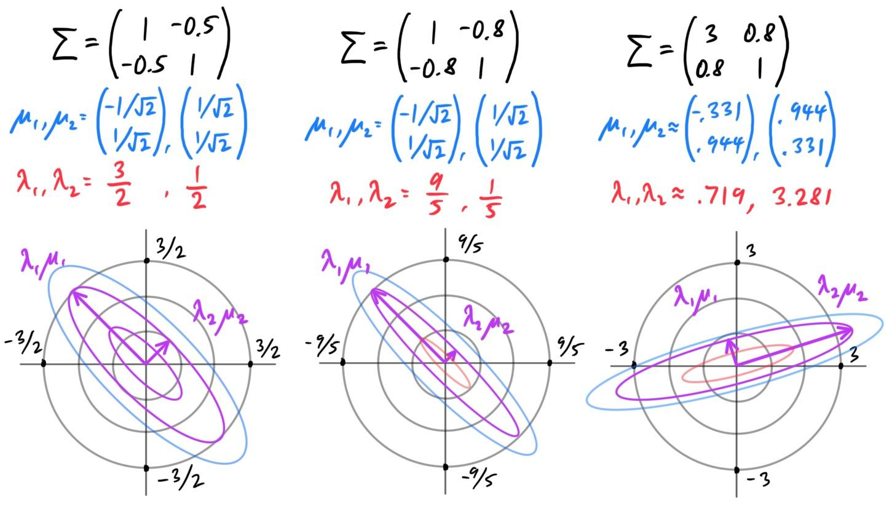
Gaussian Discriminant Analysis
GDA assumes that $\mathbb{P}(x\,|y)$ is distributed according to a multivariate Gaussian distribution. Let us assume that the input space is $d$-dimensional and this is a binary classification problem. We set
\begin{align*}
y & \sim \text{Bernoulli}(\phi) \\
x\,|\,y = 0 & \sim \mathcal{N}_d (\mu_0, \Sigma) \\
x\,|\,y = 1 & \sim \mathcal{N}_d (\mu_1, \Sigma)
\end{align*}
This method is usually applied using only one covariance matrix $\Sigma$. The distributions are
\begin{align*}
p(y) & = \phi^y (1 - \phi)^{1-y} \\
p(x\,|\,y = 0) & = \frac{1}{(2\pi)^{d/2} |\Sigma|^{1/2}} \exp \bigg(-\frac{1}{2} (x - \mu_0)^T \Sigma^{-1} (x - \mu_0)\bigg) \\
p(x\,|\,y= 1) & = \frac{1}{(2\pi)^{d/2} |\Sigma|^{1/2}} \exp \bigg(-\frac{1}{2} (x - \mu_1)^T \Sigma^{-1} (x - \mu_1)\bigg)
\end{align*}
Now, what we have to do is optimize the distribution parameters $\phi \in (0, 1) \mathbb{R}, \mu_0 \in \mathbb{R}^d, \mu_1 \in \mathbb{R}^d, \Sigma \in \text{Mat}(d \times d, \mathbb{R}) \simeq \mathbb{R}^{d \times d}$ so that we get the best-fit model. Assuming that each sample has been picked independently, this is equal to maximizing
\[L(\phi, \mu_0, \mu_1, \Sigma) = \prod_{i=1}^n \mathbb{P}\big( x^{(i)}, y^{(i)}\,;\, \phi, \mu_0, \mu_1, \Sigma\big)\]
which is really just the probability that we get precisely all these training samples $(x^{(i)}, y^{(i)})$ given the 4 parameters. This can be done by optimizing its log-likelihood, which is given by
\begin{align*}
l(\phi, \mu_0, \mu_1, \Sigma) & = \log \prod_{i=1}^n \mathbb{P}(x^{(i)}, y^{(i)}; \phi, \mu_0, \mu_1, \Sigma) \\
& = \log \prod_{i=1}^n \mathbb{P}( x^{(i)} \,|\, y^{(i)}; \mu_0, \mu_1, \Sigma) \, \mathbb{P}(y^{(i)}; \phi) \\
& = \sum_{i=1}^n \log \bigg( \mathbb{P}( x^{(i)} \,|\, y^{(i)}; \mu_0, \mu_1, \Sigma) \, \mathbb{P}(y^{(i)}; \phi) \bigg)
\end{align*}
and therefore gives the maximum likelihood estimate to be
\begin{align*}
\phi & = \frac{1}{n} \sum_{i=1}^n 1\{y^{(i)} = 1\} \\
\mu_0 & = \frac{\sum_{i=1}^n 1\{y^{(i)} = 0\} x^{(i)}}{\sum_{i=1}^n 1\{y^{(i)} = 0 \}} \\
\mu_1 & = \frac{\sum_{i=1}^n 1\{y^{(i)} = 1\} x^{(i)}}{\sum_{i=1}^n 1\{y^{(i)} = 1 \}} \\
\Sigma & = \frac{1}{n} \sum_{i=1}^n (x^{(i)} - \mu_{y^{(i)}}) (x^{(i)} - \mu_{Y^{(i)}})^T
\end{align*}
A visual of the algorithm is below, with contours of the two Gaussian distributions, along with the straight line giving the decision boundary at which $\mathbb{P}(y=1\,|\,x) = 0.5$.
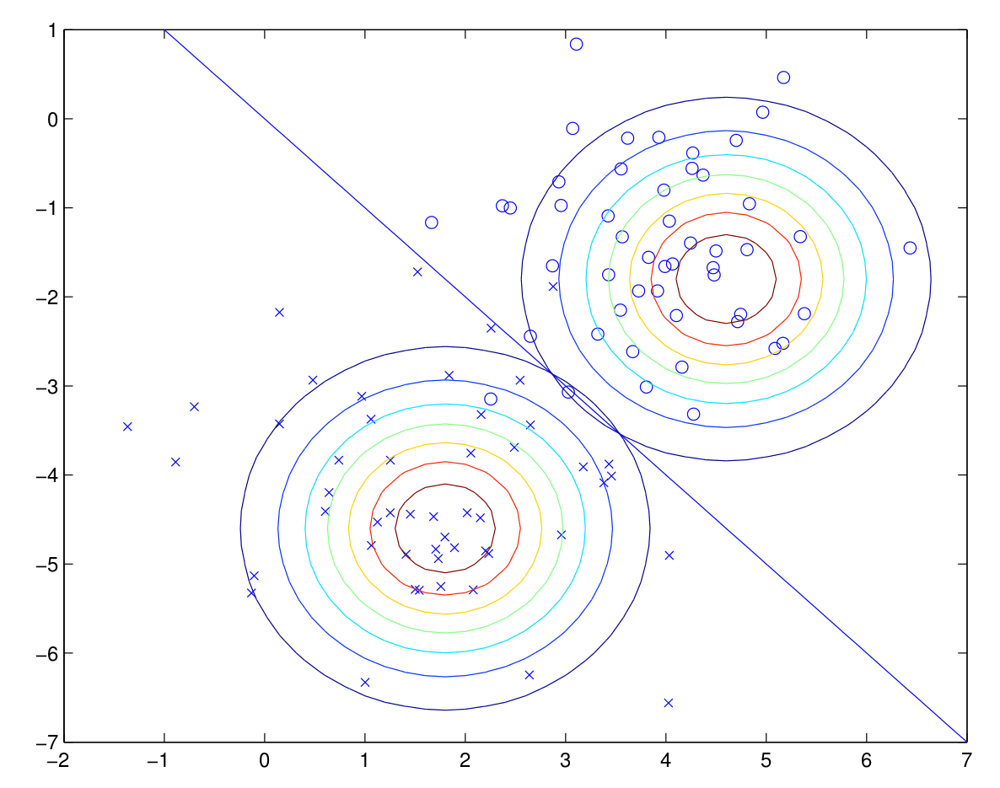
Comparing the applicability of GDA with logistic regression...
- GDA makes the stronger assumption about the data being distributed normally. If these assumptions are (at least approximately) correct, GDA performs much better and is more data efficient (i.e. requires less training data to learn well).
- Logistic regression makes significantly weaker assumptions, but it is more robust and less sensitive to incorrect modeling asssumptions.
Naive Bayes & Laplace Smoothing
[Hide]
In GDA, we worked in a sample space $\mathcal{X} = \mathbb{R}^d$, where the feature vectors $x$ were continuous and real-valued. In the case where the sample space is discrete-valued (e.g. $\mathcal{X} = \{0, 1\}^n$),
Kernel Methods
[Hide]Polynomial LMS Regression with Feature Mappings
Let us recall that given $n$ training samples $(x^{(i)}, y^{(i)})$, with the inputs having $d$ scalar parameters, encoded in the form of vector
\[x^{(i)} = \begin{pmatrix} x^{(i)}_1 \\ x^{(i)}_2 \\ \vdots \\ x^{(i)}_d \end{pmatrix}\]
say that we want to make a degree-$p$ polynomial of best fit for the data. The following feature map $\phi: \mathbb{R}^d \longrightarrow \mathbb{R}^{\tilde{p}}$ maps these $d$ attributes to a vector containing all possible monomials with degree $\leq p$.
\[\phi: \begin{pmatrix} x_1^{(i)} \\ x_2^{(i)} \\ \vdots \\ x_d^{(i)} \end{pmatrix} \mapsto \begin{pmatrix}
1 \\ x_1^{(i)} \\ x_2^{(i)} \\ \ldots \\ (x_{d-1}^{(i)})^{p-1} x_d \\ (x_d^{(i)})^p
\end{pmatrix}\]
where the dimension of the vector $\phi(x)$ is some $\tilde{p}$ that is on the order of $d^p$. We can optimize $\theta$ to solve the least-squares equation
\[X \theta = y \iff \begin{pmatrix}
— & \phi(x^{(1)}) & — \\
— & \phi(x^{(2)}) & — \\
\vdots & \vdots & \vdots \\
— & \phi(x^{(n)}) & —
\end{pmatrix} \begin{pmatrix} \theta_1 \\ \theta_2 \\ \vdots \\ \theta_{\tilde{p}} \end{pmatrix} = \begin{pmatrix} y^{(1)} \\ y^{(2)} \\ y^{(3)} \\ \vdots \\ y^{(n)} \end{pmatrix}\]
Recall that the (batch) gradient descent update of the LMS linear fit, where we must fit the model $h_\theta = \theta^T x$ in terms of the $d$ input attributes $x$, is
\begin{align*}
\theta & = \theta + \alpha \sum_{i=1}^n \big( y^{(i)} - h_\theta(x^{(i)})\big) \, x^{(i)} \\
& = \theta + \alpha \sum_{i=1}^n \big(y^{(i)} - \theta^T x^{(i)} \big)\, x^{(i)}
\end{align*}
Since polynomial regression is really just a linear fit in terms of the $\tilde{p}$ features variables $\phi(x)$ (not the $d$ input attributes $x$), we just need to simply fit the function $\theta^T \phi(x)$ (where $\theta \in \mathbb{R}^{\tilde{p}}$). This gives us the update rule
\begin{align*}
\theta & = \theta + \alpha \sum_{i=1}^n \big( y^{(i)} - h_\theta(x^{(i)})\big) \, x^{(i)} \\
& = \theta + \alpha \sum_{i=1}^n \big(y^{(i)} - \theta^T \phi(x^{(i)}) \big)\, x^{(i)}
\end{align*}
However, the explosion in dimensionality of $\phi(x)$ and of $\theta$ (as $p$ and $d$ gets large) renders this algorithm computationally inefficient. Updating every entry of $\theta$ after each update of batch GD (or even stochastic GD) can be inefficient.
Feature Maps
Let us clarify some properties of feature maps here. Note that the entire reason we construct a feature map is to account for a higher-order relationship between the input attributes $x_1, x_2, \ldots, x_d \in \mathbb{R}$ and the outcome $y \in \mathbb{R}$. For example, for the 2 input attributes encoded in vector $x = \big(x_1 \;\; x_2\big)$, to construct the full feature map that accounts for all monomials of $x_1$ and $x_2$ of degree $\leq p = 2$, we can see that
- There are $2^0 = 1$ terms that have degree $0$: $1$
- There are $2^1 = 2$ terms that have degree $1$: $x_1, x_2$
- There are $2^2 = 4$ terms that have degree $2$: $x_1^2, x_1 x_2, x_2 x_1, x_2^2$
It turns out we have some flexibility on choosing the feature map $\phi$. Rather than accounting for all combinations of the $x_i$'s, we can decide that the "relevant" variables are just $x_1, x_2, x_1^2, x_1 x_2$ and define $\phi: \mathbb{R}^2 \longrightarrow \mathbb{R}^4$ \[\phi\begin{pmatrix} x_1 \\ x_2 \end{pmatrix} = \begin{pmatrix} x_1 \\ x_2 \\ x_1^2 \\ x_1 x_2 \end{pmatrix} \] or we can even decide that $x_1 x_2, x_2 x_1$ are completely irrelevant, and it is really just $x_1, x_2$, and $x_1^2 + x_2^2$ that are the relevant feature inputs. \[\phi\begin{pmatrix} x_1 \\ x_2 \end{pmatrix} = \begin{pmatrix} x_1 \\ x_2 \\ x_1^2 + x_2^2 \end{pmatrix}\] which can be visualized as such below. 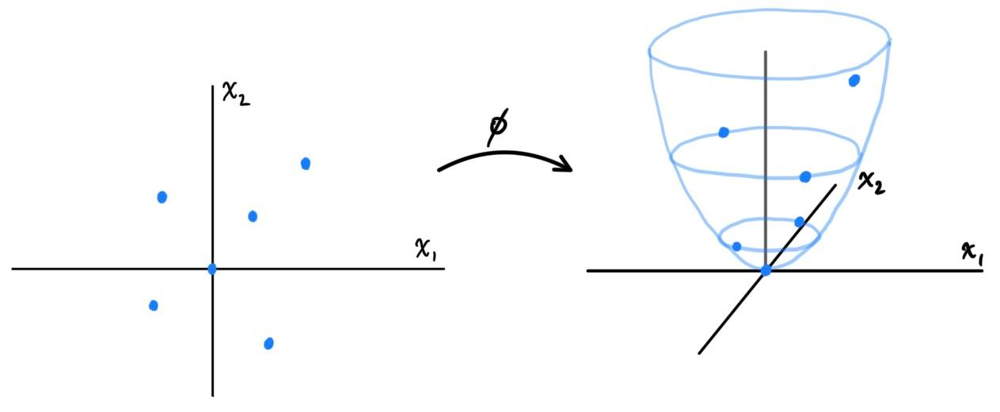 Generalizing this to $d$ input attributes in $x = \big( x_1 \ldots x_d \big)$, to construct the full feature map that accounts for all monomials of $x_1, \ldots, x_d$, we can see that
- There are $d^0 = 1$ terms that have degree $0$: 1
- There are $d^1 = d$ terms that have degree $1$: $x_1, x_2, \ldots, x_d$
- There are $d^2$ terms that have degree $2$: $x_1 x_1, x_1 x_2, \ldots, x_d x_{d-1}, x_d x_d$
- ...
- There are $d^p$ terms that have degree $p$: $x_1^p x_1^{p-1} x_2, \ldots, x_{d}^{p-1} x_{d-1}, x_d^{p}$
LMS with Kernel Trick
For simplicity, we first initialize $\theta = 0$ (the $\tilde{p}$-vector of all entries $0$), and we look at the update rule:
\[\theta = \theta + \alpha \sum_{i=1}^n \big(y^{(i)} - \theta^T \phi(x^{(i)}) \big)\, x^{(i)}\]
We claim that $\theta$ is always, after every update, is a linear combination of $\phi(x^{(1)}), \ldots, \phi(x^{(n)})$, since by induction we have $\theta = 0 = \sum_{i=1}^0 0 \cdot \phi(x^{(i)})$ at initialization and assuming $\theta$ can be represented as
\[\theta = \sum_{i=1}^n \beta_i \phi(x^{(i)})\]
for some $\beta_1, \beta_2, \ldots, \beta_n \in \mathbb{R}$, we can see that the updated term
\begin{align*}
\theta & = \theta + \alpha \sum_{i=1}^n \big(y^{(i)} - \theta^T \phi(x^{(i)})\big) \,\phi(x^{(i)}) \\
& = \sum_{i=1}^n \beta_i \phi(x^{(i)}) + \alpha \sum_{i=1}^n \big(y^{(i)} - \theta^T \phi(x^{(i)})\big)\,\phi(x^{(i)}) \\
& = \sum_{i=1}^n \Big( \beta_i + \alpha \big(y^{(i)} - \theta^T \phi(x^{(i)})\big) \Big) \, \phi(x^{(i)})
\end{align*}
is also a linear combination of the $\phi(x^{(i)})$. This immediately implies that this update function maps the subspace $V = \text{span}\big(\phi(x^{(1)}), \ldots, \phi(x^{(n)}) \big)$ onto itself (but it is not linear). That is, $\theta \in V \implies$ the updated $\theta$ will also be in $V$. Furthermore, we see that the new $\beta_i$s are updated accordingly, and substituting $\theta = \sum_{j=1}^n \beta_j \phi(x^{(j)})$ gives
\begin{align*}
\beta_i & = \beta_i + \alpha \bigg( y^{(i)} - \sum_{j=1}^n \beta_j \big(\phi(x^{(j)})\big)^T\; \phi(x^{(i)}) \bigg) \\
& = \beta_i + \alpha \bigg( y^{(i)} - \sum_{j=1}^n \beta_j \big\langle\phi(x^{(j)}), \;\phi(x^{(i)})\big\rangle \bigg)
\end{align*}
where $\langle\cdot, \; \cdot \rangle$ represents the Euclidean inner product of $\mathbb{R}^d$. This inner product turns out to be very important, so we will define the Kernel function to be a map $F: \mathcal{X} \times \mathcal{X} \longrightarrow \mathbb{R}$ satisfying
\[K(x, z) \equiv \big\langle \phi(x), \phi(z) \big\rangle\]
for some feature map $\phi$. In this context, we would like to calculate the Kernels of all pairs of the $n$ input features $K\big( \phi(x^{(i)}), \phi(x^{(j)}) \big)$ for all $i, j = 1, \ldots, n$, so for convenience, we can store their values in the $n \times n$ Kernel matrix $\mathbf{K}$, defined
\[\mathbf{K_{ij}} \equiv K\big( x^{(i)}, x^{(j)}\big) \equiv \big\langle \phi(x^{(i)}), \phi(x^{(j)}) \big\rangle\]
(Note that this is analogous to the definition of a metric tensor in differential geometry.) Therefore, we can rewrite the update rule for GD to be
\[\beta_i = \beta_i + \alpha \Bigg( y^{(i)} - \sum_{j=1}^n \beta_j \, K(x^{(i)}, x^{(j)}) \Bigg)\]
or in vector notation,
\[\beta = \beta + \alpha (y - \mathbf{K} \beta)\]
We may have rewritten this in the form of a Kernel, but there is still the computational problem in calculating $K$, which requires us to deal with caluclating the high-dimensional $\phi$. Normally, to calculate each $K \big( x^{(i)}, x^{(j)} \big)$, we would have to find the coordinate representation of $\phi(x^{(i)}), \phi(x^{(j)})$ in the extremely high-dimensional vector space, and then sum the products of all of its elements. However, it is possible to directly calculate this inner product with this mathematical trick: For any $x, z \in \mathbb{R}^d$ and feature map $\phi$ mapping $x, z$ to vectors containing all the monomials of $x, z$ of degree $\leq p$, we have
\begin{align*}
\big\langle \phi(x), \phi(z) \big\rangle & = 1 + \sum_{i=1}^d x_i z_i + \sum_{i, j \in \{1, \ldots, d\}} x_i x_j z_i z_j + \ldots + \sum_{i_1, \ldots, i_p \in \{1, \ldots, d\}} \bigg(\prod_{\alpha=1}^p x_{i_\alpha} \bigg)\bigg(\prod_{\gamma = 1}^p z_{i_\gamma} \bigg) \\
& = 1 + \sum_{i=1}^d x_i z_i + \Bigg( \sum_{i=1}^d x_i z_i \Bigg)^2 + \ldots + \Bigg( \sum_{i=1}^d x_i z_i \Bigg)^p \\
& = 1 + \big\langle x, z \big\rangle + \big\langle x, z\big\rangle^2 + \ldots + \big\langle x, z \big\rangle^p
\end{align*}
Therefore, this is an extremely simple computation compared to what we did before. By simply calculating
\[K\big(x^{(i)}, x^{(j)}\big) = \sum_{k=0}^p \big\langle x^{(i)}, x^{(j))} \big\rangle^p \iff \mathbf{K} = \begin{pmatrix}
\sum_{k=0}^p \big\langle x^{(1)}, x^{(1))} \big\rangle^p & \ldots & \sum_{k=0}^p \big\langle x^{(1)}, x^{(n))} \big\rangle^p \\
\vdots & \ddots & \vdots \\
\sum_{k=0}^p \big\langle x^{(n)}, x^{(1))} \big\rangle^p & \ldots & \sum_{k=0}^p \big\langle x^{(n)}, x^{(n))} \big\rangle^p
\end{pmatrix}\]
and running the recursive algorithm
\[\beta = \beta + \alpha \big(y - \mathbf{K} \beta \big)\]
we can update $\beta$ efficiently with $O(n)$ time per update. Since $\beta$ are just the coordinates of the $\tilde{p}$-dimensional $\theta$ with respect to basis $\phi(x^{(i)})$, we can do a change of basis to find $\theta$.
\[\theta = \beta_1 \phi(x^{(1)}) + \beta_2 \phi(x^{(n)}) + \ldots + \beta_n \phi(x^{(n)}) \in \mathbb{R}^{\tilde{p}}\]
Therefore, the polynomial best-fit function $\theta^T \phi(x)$ can be written as
\[\theta^T \phi(x) = \bigg(\sum_{i=1}^n \beta_i \big(\phi(x^{(i)})\big)^T \bigg) \; \phi(x) = \sum_{i=1}^n \beta_i \, K(x^{(i)}, x)\]
Therefore, all we need to know about feature map $\phi(\cdot)$ is encapsulated in the corresponding kernel function $K$.
Constructing Kernels: Necessary & Sufficient Conditions for Valid Kernels
We can see that the best fit function
\[\theta^T \phi(x) = \sum_{i=1}^n \beta_i K\big( x^{(i)}, x \big)\]
is completely dependent on how the kernel function $K$ is defined. Everything we need to know about the feature map $\phi(\cdot)$ is encapsulated in the corresponding Kernel function $K(\cdot, \cdot)$. It is obvious that the existence of a feature map $\phi$ implies that $K$ is well-defined (because, well, $K$ is defined using the feature map).
\[\exists \phi \implies \exists K(\cdot, \cdot) \equiv \big\langle \phi(\cdot), \phi(\cdot) \big\rangle\]
But what about the other way around? What kinds of kernel functions $K(\cdot, \cdot)$ correspond to some feature map $\phi$? Given any kernel function $K$, can we determine the existence (not necessarily need to explicitly write it down) of some feature mapping $\phi$ such that $K(x, z) = \langle \phi(x), \phi(z) \rangle$ for all $x, z$?
For example, for $d=3$, the following definition of $K$ gives $\tilde{p} = 3^2 = 9$ and \[K(x, z) \equiv \langle x, z \rangle^2 = \sum_{i, j = 1}^d (x_i x_j) (z_i z_j) \implies \phi(x) = \begin{pmatrix} x_1^2 \\ x_1 x_2 \\ x_1 x_3 \\ x_2 x_1 \\ x_2^2 \\ x_2 x_3 \\ x_3 x_1 \\ x_3 x_2 \\ x_3^2 \end{pmatrix}\] For another example, with $d=3$ an, the following definition of $K$ gives $\tilde{p} = 3^2 + 3 + 1 = 13$ and gives \[K(x, z) \equiv \big( \langle x, z\rangle + c \big)^2 = \sum_{i, j = 1}^d (x_i x_j)(z_i z_j) + \sum_{i = 1}^d (\sqrt{2c} x_i) (\sqrt{2c} z_i) + c^2\] which gives the 13-vector (written as a row to save space) \[\phi(x) \equiv \begin{pmatrix} x_1^2 & x_1 x_2 & x_1 x_3 & x_2 x_1 & x_2^2 & x_2 x_3 & x_3 x_1 & x_3 x_2 & x_3^2 & \sqrt{2c} x_1 & \sqrt{2c} x_2 & \sqrt{2c} x_3 & c \end{pmatrix}^T\] with the parameter $c$ controlling the relative weighting between the first order and second order terms.
Well the most obvious necessary condition for a valid kernel $K: \mathbb{R}^d \times \mathbb{R}^d \longrightarrow \mathbb{R}$ is that it must be symmetric. \[K(x, z) = K(z, x)\] Mercer's Theorem answers this question precisely actually, which states the following: Let us have any function $K: \mathbb{R}^d \times \mathbb{R}^d \longrightarrow \mathbb{R}$. For $K$ to be a valid (Mercer) kernel (i.e. there exists a feature map $\phi$ s.t. $K(x, z) \equiv \langle \phi(x), \phi(z)\rangle$), it is both necessary and sufficient that for any collection of $n$ $d$-vectors $\{x^{(1)}, x^{(2)}, \ldots, x^{(n)}\}$, the corresponding $n \times n$ (kernel) matrix $\mathbf{K}$ defined \[\mathbf{K_{ij}} \equiv K(x^{(i)}, x^{(j)})\] is symmetric and positive semi-definite.
Support Vector Machines (SVMs)
[Hide]
The SVM learning algorithms are among the best "off-the-shelf" supervised learning algorithms, and we will use new notations in this section. Let us have a binary classification problem where $\mathcal{Y} = \{-1, 1\}$ (instead of $\{0, 1\}$). Now, rather than parameterizing our linear classifier with the vector $\theta$, we use parameters $\omega, b$ to define our decision boundary as the affine hyperplane
\[\{x \in \mathcal{X} = \mathbb{R}^d\;|\; \omega^T x + b = 0\}\]
and construct the perceptron classifier
\[h_{\omega, b} (x) \equiv g\big(\omega^T x + b \big) \equiv \begin{cases}
1 & \text{ if } \omega^T x + b \geq 0 \\
-1 & \text{ if } \omega^T x + b < 0
\end{cases}\]
Finally, the geometric margin $\gamma^{(i)}$ (without the hat) of sample $x^{(i)}$ simply gives us the signed (orthogonal) distance from $x^{(i)}$ to the boundary, with positive implying that the actual and the predicted values are consistent, and negative implying that they are contradicting. We can calculate this signed distance to be \[\gamma^{(i)} \equiv y^{(i)} \Bigg( \bigg(\frac{\omega}{||\omega||} \bigg)^T \, x^{(i)} + \frac{b}{||\omega||} \Bigg) = \frac{y^{(i)} \big( \omega^T x^{(i)} + b \big)}{||\omega||}\] which gives us the relationship that the geometric margin is just a normalized version of the functional margin: \[\gamma^{(i)} = \frac{1}{||\omega||} \hat{\gamma}^{(i)}\] If $||w|| = 1$, then the functional margin and geometric margin are equal. The reason we have two types of margins is that the functional margin is limited in the way that it has no "absolute" measure of confidence for each $x^{(i)}$. More specifically, the relative ratios of the functional margins of each sample are conserved, but changing $\omega, b$ allows us to scale it in any way. For example, the set of 5 datapoints with functional margins \[\big(\hat{\gamma}^{(1)}, \hat{\gamma}^{(2)}, \hat{\gamma}^{(3)}, \hat{\gamma}^{(4)}, \hat{\gamma}^{(5)} \big) = \big(2, 4, 5, -1, -3\big)\] can also have functional margins \[\big(\hat{\gamma}^{(1)}, \hat{\gamma}^{(2)}, \hat{\gamma}^{(3)}, \hat{\gamma}^{(4)}, \hat{\gamma}^{(5)} \big) = \big(4, 8, 10, -2, -6\big)\] just by scaling the $\omega, b$ accordingly. This disadvantage when it comes to comparing data from different sets motivates the need for a normalizing factor, that is $||\omega||$. We can do just this by defining the geometric margin as such, which not only normalizes it, but also provides a nice visual in terms of the orthogonal distance. 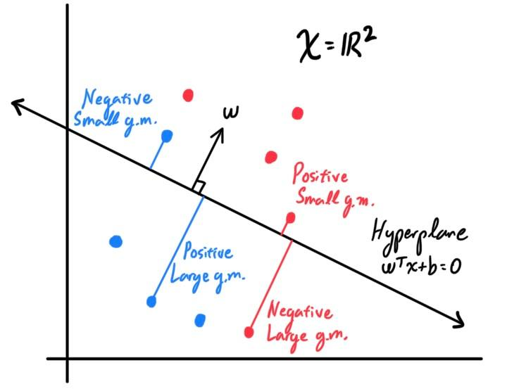 The geometric margin of $(\omega, b)$ with respect to training set $S = \big\{ (x^{(i)}, y^{(i)}); \; i = 1, \ldots, n \big\}$ to be the smallest of the geometric margins on the individual training samples: \[\gamma \equiv \min_{i = 1, \ldots, n} \gamma^{(i)}\]
Now, consider the following primal optimization problem \[\min_\omega f(\omega) \;\;\;\text{ s.t. } \begin{cases} g_i (\omega) \leq 0, \;\;\; i = 1, 2, \ldots, k \\ h_i (\omega) = 0, \;\;\; i = 1, 2, \ldots, l \end{cases}\] We can visualize this problem for a function $f: \mathbb{R}^2 \longrightarrow \mathbb{R}$, with exactly one of each constraint $g$ and $h$. Say that $h$ restricts the domain to that of the closed blue curve in $\mathbb{R}^2$, and $g$ restricts the domain to be in the red region. Then, we are trying to maximize $f$ on the purple region $h \cap g$ (by abuse of notation, since we are treating $h, g$ as sets when they are technically functions). 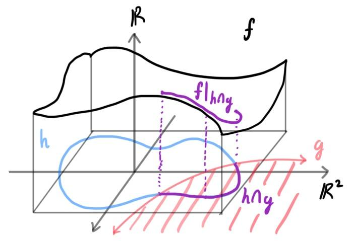 To solve it, we define the generalized Lagrangian $\mathcal{L}: \mathbb{R}^d \times \mathbb{R}^k \times \mathbb{R}^l \longrightarrow \mathbb{R}$ (with multipliers $\alpha, \beta$ instead of our conventional $\lambda$) \[\mathcal{L}(\omega, \alpha, \beta) \equiv f(\omega) + \sum_{i=1}^k \alpha_i g_i (\omega) + \sum_{i=1}^l \beta_i h_i (\omega)\] which is a function of $\omega$ and the $k+l$ Lagrange multipliers. Note a few things here. Since $g_i (\omega) \leq 0$ for all $i$ (and $\omega$, of course), as $\alpha_i$ becomes more positive, $\mathcal{L}(\omega, \alpha, \beta)$ will end up monotonically decreasing since it is subtracting from the function $f(\omega)$. Furthermore, since $h_i (\omega) = 0$ for all $i$, the values of $\beta_i$ will not affect $\mathcal{L}$. Keeping these two facts (which are only true when the constraints are met!) in mind, consider the quantity \[\theta_\mathcal{P} (\omega) \equiv \max_{\alpha, \beta; \alpha_i \geq 0} \mathcal{L}(\omega, \alpha, \beta)\] where the $\mathcal{P}$ stands for "primal." Let some $\omega$ be given. If $\omega$ violates any of the primal constraints (i.e. if either $g_i (\omega) > 0$ or $h_i (\omega) \neq 0$ for some $i$), then it is clear that we can just arbitrarily increase the $\alpha_i$s and have \[\theta_\mathcal{P} (\omega) \equiv \max_{\alpha, \beta; \alpha_i \geq 0} f(\omega) + \sum_{i=1}^k \alpha_i g_i (\omega) + \sum_{i=1}^l \beta_i h_i (\omega) = \infty\] Additionally, if the constraints are indeed satisfied for a particular value of $\omega$, then $\theta_\mathcal{P} (\omega) = f(\omega)$ since we can just set $\alpha = 0$. Therefore, we have \[\theta_\mathcal{P} (\omega) \equiv \begin{cases} f(\omega) & \text{ if } \omega \text{ satisfies primal constraints} \\ \infty & \text{ otherwise} \end{cases}\] and hence the original problem of minimizing $f(\omega)$ with constraints is the same as minimizing $\theta_\mathcal{P}$. Therefore, we can now focus on \[\min_\omega \theta_\mathcal{P}(\omega) = \min_\omega \max_{\alpha, \beta; \alpha_i \geq 0} \mathcal{L}(\omega, \alpha, \beta)\] which will have some solution, called the value of the primal problem, labeled \[p^* = \min_\omega \theta_\mathcal{P} (\omega)\] We now transition to a different problem. Consider the quantity \begin{align*} \theta_\mathcal{D} (\alpha, \beta) & \equiv \min_\omega \mathcal{L}(\omega, \alpha, \beta) \\ & \equiv \min_\omega f(\omega) + \sum_{i=1}^k \alpha_i g_i (\omega) + \sum_{i=1}^l \beta_i h_i (\omega) \end{align*} where the $\mathcal{D}$ stands for "dual." Note that this is minimizing $\mathcal{L}$ with respect to $\omega$, not $\alpha, \beta$! We can now introduce the dual optimization problem \[\max_{\alpha, \beta; \alpha_i \geq 0} \theta_\mathcal{D} (\alpha, \beta) = \max_{\alpha, \beta; \alpha_i \geq 0} \min_\omega \mathcal{L}(\omega, \alpha, \beta)\] which will have some solution, called the value of the dual problem, labeled \[d^* = \max_{\alpha, \beta; \alpha_i \geq 0} \theta_\mathcal{D} (\alpha, \beta)\] Now, using the fact that the max-min of a function is always less than or equal to the min-max of the same function, we can see that \[d^* = \max_{\alpha, \beta; \alpha_i \geq 0} \theta_\mathcal{D} (\alpha, \beta) \leq \min_\omega \theta_\mathcal{P} (\omega) = p^*\] If we can find some set of conditions that implies that $d^* = p^*$, then we can see that solving the dual problem (which may be computationally easier to do) is equivalent to solving the primal problem. This can be done using the Karush-Kuhn-Tucker (KKT) conditions: First suppose that $f$ and the $g_i$'s are convex, the $h_i$s are affine, and that there exists some $\omega \in \mathbb{R}^d$ satisfying the conditions defined by the $f_i$'s and $g_i$'s. That is, treating $f$ and $g$ as sets, this is equivalent to $f \cap g \neq \emptyset$. Then, the two conditions are equivalent:
We first construct the Lagrangian for our optimization problem, which now contains the additional variable $b$ (from our $k = n$ constraints), but no $\beta_i$s since the problem has no equality constraints. \[\mathcal{L}(\omega, b, \alpha) \equiv \frac{1}{2} ||\omega||^2 - \sum_{i=1}^n \alpha_i \big( y^{(i)} (\omega^T x^{(i)} + b) - 1\big)\] We would like to find the value of \begin{align*} p^* & = \min_{\omega, b} \theta_\mathcal{P}(\omega) \\ & = \min_{\omega, b} \max_{\alpha; \alpha_i \geq 0} \mathcal{L}(\omega, b, \alpha) \end{align*} which on its own may be hard, but by using the KKT conditions, we can calculate the easier \begin{align*} p^* = d^* & = \max_{\alpha; \alpha_i \geq 0} \theta_\mathcal{D}(\alpha) \\ & = \max_{\alpha; \alpha_i \geq 0} \min_{\omega, b} \mathcal{L}(\omega, b, \alpha) \end{align*} We first calculate $\min_{\omega, b} \mathcal{L}(\omega, b, \alpha)$ by taking the gradient and setting it equal to $0$, giving us the value of $\omega$ in terms of the $\alpha_i$s. \[\nabla_\omega \mathcal{L}(\omega, b, \alpha) = \omega - \sum_{i=1}^n \alpha_i y^{(i)} x^{(i)} = 0 \implies \omega = \sum_{i=1}^n \alpha_i y^{(i)} x^{(i)}\] To find the optimal $b$, we derive it to get \[\frac{\partial}{\partial b} \mathcal{L}(\omega, b, \alpha) = \sum_{i=1}^n \alpha_i y^{(i)} = 0\] We take the $\omega$ term and plug it into the definition of $\mathcal{L}$ above, and simplifying using what we got for $b$ gives the following. The expression gives the minimum value (an extrema of a convex function) of $\mathcal{L}$ with respect to $\omega$ and $b$. Note that this is now an expression in terms of $\alpha$ since we haven't taken into account optimizing $\alpha$. \begin{align*} \mathcal{L}(\omega, b, \alpha) & = \sum_{i=1}^n \alpha_i - \frac{1}{2} \sum_{i, j = 1}^n y^{(i)} y^{(j)} \alpha_i \alpha_j \big(x^{(i)})^T x^{(j)} - b \sum_{i=1}^n \alpha_i y^{(i)} \\ & = \sum_{i=1}^n \alpha_i - \frac{1}{2} \sum_{i, j = 1}^n y^{(i)} y^{(j)} \alpha_i \alpha_j \big\langle x^{(i)} x^{(j)} \big\rangle \end{align*} Notice that this satisfies KKT condition 1 and trivially, condition 2. Now, letting \[W(\alpha) \equiv \min_{\omega, b} \mathcal{L}(\omega, b, \alpha) = \sum_{i=1}^n \alpha_i - \frac{1}{2} \sum_{i, j = 1}^n y^{(i)} y^{(j)} \alpha_i \alpha_j \big\langle x^{(i)} x^{(j)} \big\rangle\] and taking into consideration KKT condition 5, along with our previous condition that $\sum_{i=1}^n \alpha_i y^{(i)} = 0$, we must find \[\max_\alpha W(\alpha) \;\;\; \text{ s.t. } \;\; \begin{cases} \alpha_i \geq 0 \;\; \text{ for }\; i = 1, \ldots, n \\ \sum_{i=1}^n \alpha_i y^{(i)} = 0 \end{cases}\] Note that due to KKT conditions 3 and 4, all $\alpha_i$s that do not correspond to the support vectors will vanish, allowing most of the terms of $\sum_{i=1}^n \alpha_i$ to be $0$. With this simplified version of the problem, we can use some algorithm to solve for all the $\alpha_i$'s that maximizes $W(\alpha)$ whilst annihilating all $\alpha_i$'s that does not correspond to supporting vectors. One such algorithm is gradient ascent, where we take the restriction of $W$ in \mathbb{R}_+^n and go in the direction of steepest ascent, or we can use coordinate ascent algorithm, where we iterate through the $\alpha_i$'s, maximizing $W$ with respect to that whilst fixing the rest. With this solution \[\alpha^* = \big(\alpha_1^*\;\; \alpha_2^* \;\; \ldots \;\; \alpha_n^* \big)\] we can use our derivations above to find \[\omega^* = \sum_{i=1}^n \alpha_i^* y^{(i)} x^{(i)}\] and in turn use $\omega^*$ to find \[b^* = -\frac{1}{2} \Big( \max_{i \text{ s.t. } y^{(i)} = -1} \omega^{*T} x^{(i)} + \min_{i \text{ s.t. } y^{(i)} = 1} \omega^{*T} x^{(i)} \Big)\] With this solution $(\omega^*, b^*, \alpha^*)$, we construct our best-fit separating hyperplane \[\{x \in \mathbb{R}^d \;|\; \omega^T x + b = 0\}\] In order to make a prediction at a new training point $x$, we plug it into the function \[h_{\omega, b} \equiv \begin{cases} 1 & \text{ if } \omega^T x + b \geq 0 \\ -1 & \text{ if } \omega^T x + b < 0 \end{cases}\] In words, $h$ predicts $y = 1$ if and only if this quantity $\omega^T x + b$ is bigger than $0$. But we can also predict this quantity as \begin{align*} \omega^T x + b & = \bigg( \sum_{i=1}^n \alpha_i y^{(i)} x^{(i)} \bigg)^T \,x + b \\ & = \sum_{i=1}^n \alpha_i y^{(i)} \, \langle x^{(i)}, x \rangle + b \end{align*} which just requires the values of $\alpha, b$. Therefore, in order to make a prediction, we have to calculate a quantity that depends only on the inner product between $x$ and the points on the training set. But since most of the $\alpha_i$'s will all vanish except for the support vectors, this summation is simplified even more.
Functional, Function, & Geometric Margins
Keeping in mind the decision boundary, we define the functional margin of $(\omega, b)$ with respect to the training sample as
\[\hat{\gamma}^{(i)} \equiv y^{(i)} \big( \omega^T x^{(i)} + b \big)\]
This functional margin defines how "confident" we are in the classification of training sample $(x^{(i)}, y^{(i)})$ into bin $h_{\omega, b} (x^{(i)})$.
- If it is a positive number, then this means that the actual classification and model classification are consistent. This is because if the actual value of $y^{(i)} = 1$ and $\omega^T x + b \geq 0$, then $h_{\omega, b} (x^{(i)}) = 1$ and therefore $\hat{\gamma}^{(i)}$ would be positive. If the actual value of $y^{(i)} = 0$ and $\omega^T x + b \geq 0$, then $h_{\omega, b} (x^{(i)}) = 1$ and therefore $\hat{\gamma}^{(i)} lt; 0$.
- The value $|\hat{\gamma}^{(i)}|$ tells us how confident we are in this prediction. If it is small, then the sample data is close to the decision boundary, and we are not very confident about our prediction, since a small change in the boundary would change its value. If it is big, then it is far from the boundary (i.e. well within it) and we are confident that our prediction is correct (or incorrect).
Finally, the geometric margin $\gamma^{(i)}$ (without the hat) of sample $x^{(i)}$ simply gives us the signed (orthogonal) distance from $x^{(i)}$ to the boundary, with positive implying that the actual and the predicted values are consistent, and negative implying that they are contradicting. We can calculate this signed distance to be \[\gamma^{(i)} \equiv y^{(i)} \Bigg( \bigg(\frac{\omega}{||\omega||} \bigg)^T \, x^{(i)} + \frac{b}{||\omega||} \Bigg) = \frac{y^{(i)} \big( \omega^T x^{(i)} + b \big)}{||\omega||}\] which gives us the relationship that the geometric margin is just a normalized version of the functional margin: \[\gamma^{(i)} = \frac{1}{||\omega||} \hat{\gamma}^{(i)}\] If $||w|| = 1$, then the functional margin and geometric margin are equal. The reason we have two types of margins is that the functional margin is limited in the way that it has no "absolute" measure of confidence for each $x^{(i)}$. More specifically, the relative ratios of the functional margins of each sample are conserved, but changing $\omega, b$ allows us to scale it in any way. For example, the set of 5 datapoints with functional margins \[\big(\hat{\gamma}^{(1)}, \hat{\gamma}^{(2)}, \hat{\gamma}^{(3)}, \hat{\gamma}^{(4)}, \hat{\gamma}^{(5)} \big) = \big(2, 4, 5, -1, -3\big)\] can also have functional margins \[\big(\hat{\gamma}^{(1)}, \hat{\gamma}^{(2)}, \hat{\gamma}^{(3)}, \hat{\gamma}^{(4)}, \hat{\gamma}^{(5)} \big) = \big(4, 8, 10, -2, -6\big)\] just by scaling the $\omega, b$ accordingly. This disadvantage when it comes to comparing data from different sets motivates the need for a normalizing factor, that is $||\omega||$. We can do just this by defining the geometric margin as such, which not only normalizes it, but also provides a nice visual in terms of the orthogonal distance. 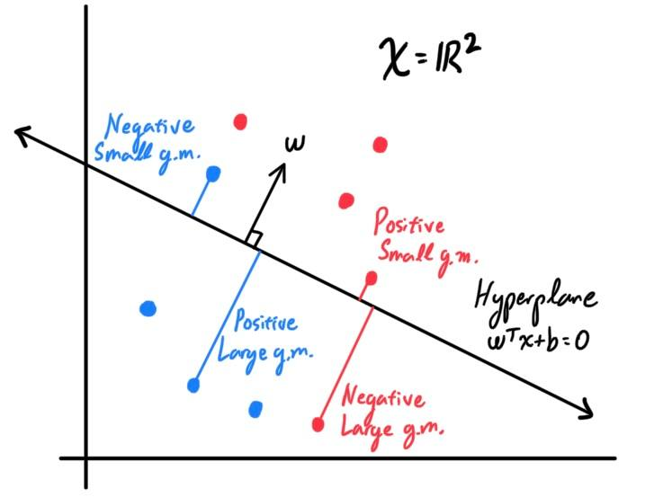 The geometric margin of $(\omega, b)$ with respect to training set $S = \big\{ (x^{(i)}, y^{(i)}); \; i = 1, \ldots, n \big\}$ to be the smallest of the geometric margins on the individual training samples: \[\gamma \equiv \min_{i = 1, \ldots, n} \gamma^{(i)}\]
The Optimal Margin Classifier
Given a training set, we would like to optimize the pair $(\omega, b)$ such that the decision boundary defined by $\omega^T x + b = 0$ has a maximum geometric margin. This would result in a classifer that separates the positive and negative training examples with as large of a "gap" as possible. For simplicity, we assume that the training set is linearly separable, i.e. it is possible to separate the positive and negative examples using some separating hyperplane. This assumption can be mathematically formulated as
\[\hat{\gamma}^{(i)} = y^{(i)} (\omega^T x^{(i)} + b) \geq 0\]
since if there did not exist a hyperplane, then at least one of the $\hat{\gamma}^{(i)}$s would be negative. If the data is not linearly separable, we can just use the kernel trick to map the $x^{(i)}$'s onto a higher dimensional space using some feature map $\phi$. Therefore, this assumption is safe to make. We would like to find
\begin{align*}
\max_{\omega, b} \gamma & = \max_{\omega, b} \min_{i \in \{1, \ldots, n\}} \gamma^{(i)} \\
& = \max_{\omega, b} \min_{i \in \{1, \ldots, n\}} \frac{y^{(i)} \big( \omega^T x^{(i)} + b\big)}{||\omega||} \\
& = \max_{\omega, b} \min_{i \in \{1, \ldots, n\}} \frac{\hat{\gamma}^{(i)}}{||\omega||} = \max_{\omega, b} \frac{\hat{\gamma}}{||\omega||}
\end{align*}
which is an extremely difficult optimization problem at first glance, but we use our previous fact that the relative ratios of the set of functional margins for each $x^{(i)}$ are conserved. That is, letting the $n$ input points $x^{(1)}, x^{(2)}, \ldots, x^{(n)}$ have the functional margins
\[\hat{\gamma}^{(1)}, \hat{\gamma}^{(2)}, \ldots, \hat{\gamma}^{(n)}\]
such that, without loss of generality, $0 \leq \hat{\gamma}^{(1)} \leq \hat{\gamma}^{(2)} \leq \ldots \leq \hat{\gamma}^{(n)}$ (remember that all the $\hat{\gamma}$s are positive since we assumed that the data was linearly separable), we can scale them all down to
\[\frac{\hat{\gamma}^{(1)}}{\hat{\gamma}^{(1)}} = 1, \frac{\hat{\gamma}^{(2)}}{\hat{\gamma}^{(1)}}, \frac{\hat{\gamma}^{(3)}}{\hat{\gamma}^{(1)}}, \ldots, \frac{\hat{\gamma}^{(n-1)}}{\hat{\gamma}^{(1)}}, \frac{\hat{\gamma}^{(n)}}{\hat{\gamma}^{(1)}}\]
without really changing anything significant. With this, we can reformulate the condition of the training set being linearly separable (i.e. every data point must lie on the correct side of the hyperplane) as
\[\hat{\gamma}^{(i)} = y^{(i)} ( \omega^T x^{(i)} + b) \geq 1 \text{ for } i = 1, \ldots, n\]
since all $\hat{\gamma}^{(i)}$s should be positive, and we've just renormalized the smallest to be $1$. This implies that the function margin $\hat{\gamma} = \min_i \hat{\gamma}^{(i)} = 1$, and substituting this into the equation above gives
\[\max_{\omega, b} \gamma = \max_{\omega, b} \frac{\hat{\gamma}}{||\omega||} = \max_{\omega, b} \frac{1}{||\omega||}\]
But maximizing $1/||\omega||$ is the same thing as minimizing $||\omega||^2$, so we now have the following optimization problem
\[\min_{\omega, b} \frac{1}{2} ||\omega||^2 \;\;\; \text{ s.t. } \;\;y^{(i)} (\omega^T x^{(i)} + b) \geq 1 \; \forall i\]
which can be efficiently solved to get the solution using something similar to Lagrange multipliers (since this is an optimization problem with constraints), called the optimal margin classifier. This $\omega$ will specify the orthogonal vector of the optimal separating hyperplane classifying the two sets of data in $\mathcal{X} = \mathbb{R}^d$.
Lagrange Duality
Recall that in solving the constrained optimization problem of function $f: \mathbb{R}^d \longrightarrow \mathbb{R}$ in form
\[\min_\omega f(\omega)\;\;\; \text{ with constraints }\;\; h_i (\omega) = 0 \;\; \forall i = 1, \ldots, l\]
we can use the method of Lagrange multipliers by defining the Lagrangian $\mathcal{L}: \mathbb{R}^d \times \mathbb{R}^l \longrightarrow \mathbb{R}$ as
\[\mathcal{L}(\omega, \lambda) \equiv f(\omega) + \sum_{i=1}^l \lambda_i h_i (\omega)\]
which is now a function of $\omega$ and the $l$ Lagrange multipliers. By setting the partial derivatives of $\mathcal{L}$ to $0$
\[\frac{\partial \mathcal{L}}{\partial \omega_i} = 0 \;\;\;\; \text{ and } \;\;\;\; \frac{\partial \mathcal{L}}{\partial \lambda_i} = 0\]
we solve for the $d+l$ values in $\omega$ and $\lambda$.
Now, consider the following primal optimization problem \[\min_\omega f(\omega) \;\;\;\text{ s.t. } \begin{cases} g_i (\omega) \leq 0, \;\;\; i = 1, 2, \ldots, k \\ h_i (\omega) = 0, \;\;\; i = 1, 2, \ldots, l \end{cases}\] We can visualize this problem for a function $f: \mathbb{R}^2 \longrightarrow \mathbb{R}$, with exactly one of each constraint $g$ and $h$. Say that $h$ restricts the domain to that of the closed blue curve in $\mathbb{R}^2$, and $g$ restricts the domain to be in the red region. Then, we are trying to maximize $f$ on the purple region $h \cap g$ (by abuse of notation, since we are treating $h, g$ as sets when they are technically functions). 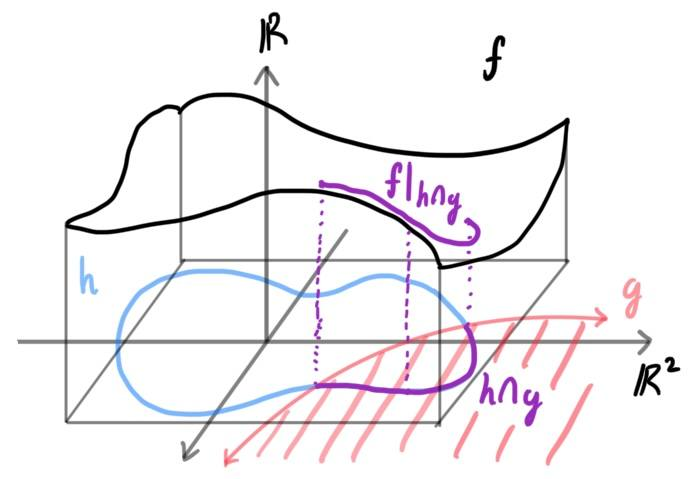 To solve it, we define the generalized Lagrangian $\mathcal{L}: \mathbb{R}^d \times \mathbb{R}^k \times \mathbb{R}^l \longrightarrow \mathbb{R}$ (with multipliers $\alpha, \beta$ instead of our conventional $\lambda$) \[\mathcal{L}(\omega, \alpha, \beta) \equiv f(\omega) + \sum_{i=1}^k \alpha_i g_i (\omega) + \sum_{i=1}^l \beta_i h_i (\omega)\] which is a function of $\omega$ and the $k+l$ Lagrange multipliers. Note a few things here. Since $g_i (\omega) \leq 0$ for all $i$ (and $\omega$, of course), as $\alpha_i$ becomes more positive, $\mathcal{L}(\omega, \alpha, \beta)$ will end up monotonically decreasing since it is subtracting from the function $f(\omega)$. Furthermore, since $h_i (\omega) = 0$ for all $i$, the values of $\beta_i$ will not affect $\mathcal{L}$. Keeping these two facts (which are only true when the constraints are met!) in mind, consider the quantity \[\theta_\mathcal{P} (\omega) \equiv \max_{\alpha, \beta; \alpha_i \geq 0} \mathcal{L}(\omega, \alpha, \beta)\] where the $\mathcal{P}$ stands for "primal." Let some $\omega$ be given. If $\omega$ violates any of the primal constraints (i.e. if either $g_i (\omega) > 0$ or $h_i (\omega) \neq 0$ for some $i$), then it is clear that we can just arbitrarily increase the $\alpha_i$s and have \[\theta_\mathcal{P} (\omega) \equiv \max_{\alpha, \beta; \alpha_i \geq 0} f(\omega) + \sum_{i=1}^k \alpha_i g_i (\omega) + \sum_{i=1}^l \beta_i h_i (\omega) = \infty\] Additionally, if the constraints are indeed satisfied for a particular value of $\omega$, then $\theta_\mathcal{P} (\omega) = f(\omega)$ since we can just set $\alpha = 0$. Therefore, we have \[\theta_\mathcal{P} (\omega) \equiv \begin{cases} f(\omega) & \text{ if } \omega \text{ satisfies primal constraints} \\ \infty & \text{ otherwise} \end{cases}\] and hence the original problem of minimizing $f(\omega)$ with constraints is the same as minimizing $\theta_\mathcal{P}$. Therefore, we can now focus on \[\min_\omega \theta_\mathcal{P}(\omega) = \min_\omega \max_{\alpha, \beta; \alpha_i \geq 0} \mathcal{L}(\omega, \alpha, \beta)\] which will have some solution, called the value of the primal problem, labeled \[p^* = \min_\omega \theta_\mathcal{P} (\omega)\] We now transition to a different problem. Consider the quantity \begin{align*} \theta_\mathcal{D} (\alpha, \beta) & \equiv \min_\omega \mathcal{L}(\omega, \alpha, \beta) \\ & \equiv \min_\omega f(\omega) + \sum_{i=1}^k \alpha_i g_i (\omega) + \sum_{i=1}^l \beta_i h_i (\omega) \end{align*} where the $\mathcal{D}$ stands for "dual." Note that this is minimizing $\mathcal{L}$ with respect to $\omega$, not $\alpha, \beta$! We can now introduce the dual optimization problem \[\max_{\alpha, \beta; \alpha_i \geq 0} \theta_\mathcal{D} (\alpha, \beta) = \max_{\alpha, \beta; \alpha_i \geq 0} \min_\omega \mathcal{L}(\omega, \alpha, \beta)\] which will have some solution, called the value of the dual problem, labeled \[d^* = \max_{\alpha, \beta; \alpha_i \geq 0} \theta_\mathcal{D} (\alpha, \beta)\] Now, using the fact that the max-min of a function is always less than or equal to the min-max of the same function, we can see that \[d^* = \max_{\alpha, \beta; \alpha_i \geq 0} \theta_\mathcal{D} (\alpha, \beta) \leq \min_\omega \theta_\mathcal{P} (\omega) = p^*\] If we can find some set of conditions that implies that $d^* = p^*$, then we can see that solving the dual problem (which may be computationally easier to do) is equivalent to solving the primal problem. This can be done using the Karush-Kuhn-Tucker (KKT) conditions: First suppose that $f$ and the $g_i$'s are convex, the $h_i$s are affine, and that there exists some $\omega \in \mathbb{R}^d$ satisfying the conditions defined by the $f_i$'s and $g_i$'s. That is, treating $f$ and $g$ as sets, this is equivalent to $f \cap g \neq \emptyset$. Then, the two conditions are equivalent:
- There exists a triplet $\omega^*, \alpha^*, \beta^*$ such that $\omega^*$ is the solution to the primal problem, $\alpha^*, \beta^*$ are the solutions to the dual problem, and \[p^* = d^* = \mathcal{L}(\omega^*, \alpha^*, \beta^*)\]
- There exists a triplet $\omega^*, \alpha^*, \beta^*$ satisfying the KKT conditions \begin{align*} \frac{\partial}{\partial \omega_i} \mathcal{L}(\omega^*, \alpha^*, \beta^*) & = 0 \;\;\; \text{ for } i = 1, \ldots, d \\ \frac{\partial}{\partial \beta_i} \mathcal{L}(\omega^*, \alpha^*, \beta^*) & = 0 \;\;\; \text{ for } i = 1, \ldots, l \\ \alpha_i^* g_i (\omega^*) & = 0 \;\;\; \text{ for } i = 1, \ldots, k \\ g_i (\omega^*) & \leq 0 \;\;\; \text{ for } i = 1, \ldots, k \\ \alpha^* & \geq 0 \;\;\; \text{ for } i = 1, \ldots, k \end{align*} Notice that the condition $\alpha_i^* g_i (\omega^*) = 0$, called the dual complementarity condition, really implies that $g_i (\omega^*) = 0$ due to the condition that the $\alpha_i^* > 0$.
Optimal Margin Classifiers (Continued)
Let's go back to the original problem of finding the following values and its simpler, reduced form:
\[\max_{\omega, b} \gamma = \max_{\omega, b} \frac{1}{||\omega||} \implies \min_{\omega, b} \frac{1}{2}||\omega||^2 \;\;\; \text{ s.t. } \;\; y^{(i)} (\omega^T x^{(i)} + b) \geq 1 \; \forall i\]
We can rewrite the constraints to get
\[\min_{\omega, b} \frac{1}{2}||\omega||^2 \;\;\; \text{ s.t. } \;\; -y^{(i)} (\omega^T x^{(i)} + b) + 1 \leq 0 \; \forall i\]
We would like to take this primal optimization problem and convert it into the easier dual form. By the KKT conditions, in order for $(\omega^*, \alpha^*, \beta^*)$ to exist such that $p^* = d^* = \mathcal{L}(\omega^*, \alpha^*, \beta^*)$, it must first satisfy the last three KKT conditions:
\begin{align*}
\alpha_i^* g_i (\omega^*) & = 0, \;\;\; i = 1, \ldots, k \\
g_i (\omega^*) & \leq 0, \;\;\; i = 1, \ldots, k \\
\alpha^* & \geq 0, \;\;\; i = 1, \ldots, k
\end{align*}
$\alpha_i^* g_i (\omega^*) = 0$ implies that at least one of $\alpha_i^*$ or $g_i (\omega^*)$ must be $0$. But the only way $g_i (\omega^*) =-y^{(i)} (\omega^T x^{(i)} + b) + 1 = 0$ is if $y^{(i)} (\omega^T x^{(i)} + b) = 1$, i.e. if $\hat{\gamma}^{(i)} = 1$ is the function margin (minimum of the functional margins). In summary, the data points $x^{(i)}$ that are closest to the boundary (i.e. has a functional margin $\hat{\gamma}^{(i)}$ value of $1$) will have a nonzero value of $\alpha_i^*$, and they will be called the support vectors. In contrast, every other point will have $\alpha$ values of $0$.
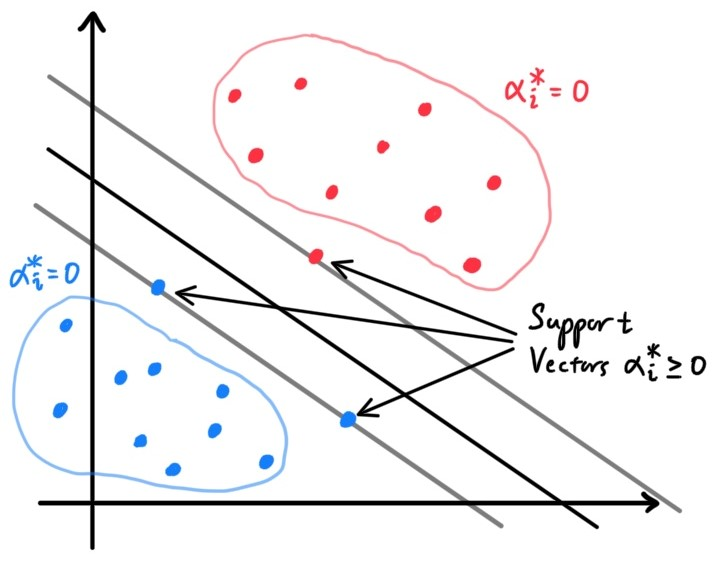
Usually, the number of support vectors is much smaller than the size of the training set.
We first construct the Lagrangian for our optimization problem, which now contains the additional variable $b$ (from our $k = n$ constraints), but no $\beta_i$s since the problem has no equality constraints. \[\mathcal{L}(\omega, b, \alpha) \equiv \frac{1}{2} ||\omega||^2 - \sum_{i=1}^n \alpha_i \big( y^{(i)} (\omega^T x^{(i)} + b) - 1\big)\] We would like to find the value of \begin{align*} p^* & = \min_{\omega, b} \theta_\mathcal{P}(\omega) \\ & = \min_{\omega, b} \max_{\alpha; \alpha_i \geq 0} \mathcal{L}(\omega, b, \alpha) \end{align*} which on its own may be hard, but by using the KKT conditions, we can calculate the easier \begin{align*} p^* = d^* & = \max_{\alpha; \alpha_i \geq 0} \theta_\mathcal{D}(\alpha) \\ & = \max_{\alpha; \alpha_i \geq 0} \min_{\omega, b} \mathcal{L}(\omega, b, \alpha) \end{align*} We first calculate $\min_{\omega, b} \mathcal{L}(\omega, b, \alpha)$ by taking the gradient and setting it equal to $0$, giving us the value of $\omega$ in terms of the $\alpha_i$s. \[\nabla_\omega \mathcal{L}(\omega, b, \alpha) = \omega - \sum_{i=1}^n \alpha_i y^{(i)} x^{(i)} = 0 \implies \omega = \sum_{i=1}^n \alpha_i y^{(i)} x^{(i)}\] To find the optimal $b$, we derive it to get \[\frac{\partial}{\partial b} \mathcal{L}(\omega, b, \alpha) = \sum_{i=1}^n \alpha_i y^{(i)} = 0\] We take the $\omega$ term and plug it into the definition of $\mathcal{L}$ above, and simplifying using what we got for $b$ gives the following. The expression gives the minimum value (an extrema of a convex function) of $\mathcal{L}$ with respect to $\omega$ and $b$. Note that this is now an expression in terms of $\alpha$ since we haven't taken into account optimizing $\alpha$. \begin{align*} \mathcal{L}(\omega, b, \alpha) & = \sum_{i=1}^n \alpha_i - \frac{1}{2} \sum_{i, j = 1}^n y^{(i)} y^{(j)} \alpha_i \alpha_j \big(x^{(i)})^T x^{(j)} - b \sum_{i=1}^n \alpha_i y^{(i)} \\ & = \sum_{i=1}^n \alpha_i - \frac{1}{2} \sum_{i, j = 1}^n y^{(i)} y^{(j)} \alpha_i \alpha_j \big\langle x^{(i)} x^{(j)} \big\rangle \end{align*} Notice that this satisfies KKT condition 1 and trivially, condition 2. Now, letting \[W(\alpha) \equiv \min_{\omega, b} \mathcal{L}(\omega, b, \alpha) = \sum_{i=1}^n \alpha_i - \frac{1}{2} \sum_{i, j = 1}^n y^{(i)} y^{(j)} \alpha_i \alpha_j \big\langle x^{(i)} x^{(j)} \big\rangle\] and taking into consideration KKT condition 5, along with our previous condition that $\sum_{i=1}^n \alpha_i y^{(i)} = 0$, we must find \[\max_\alpha W(\alpha) \;\;\; \text{ s.t. } \;\; \begin{cases} \alpha_i \geq 0 \;\; \text{ for }\; i = 1, \ldots, n \\ \sum_{i=1}^n \alpha_i y^{(i)} = 0 \end{cases}\] Note that due to KKT conditions 3 and 4, all $\alpha_i$s that do not correspond to the support vectors will vanish, allowing most of the terms of $\sum_{i=1}^n \alpha_i$ to be $0$. With this simplified version of the problem, we can use some algorithm to solve for all the $\alpha_i$'s that maximizes $W(\alpha)$ whilst annihilating all $\alpha_i$'s that does not correspond to supporting vectors. One such algorithm is gradient ascent, where we take the restriction of $W$ in \mathbb{R}_+^n and go in the direction of steepest ascent, or we can use coordinate ascent algorithm, where we iterate through the $\alpha_i$'s, maximizing $W$ with respect to that whilst fixing the rest. With this solution \[\alpha^* = \big(\alpha_1^*\;\; \alpha_2^* \;\; \ldots \;\; \alpha_n^* \big)\] we can use our derivations above to find \[\omega^* = \sum_{i=1}^n \alpha_i^* y^{(i)} x^{(i)}\] and in turn use $\omega^*$ to find \[b^* = -\frac{1}{2} \Big( \max_{i \text{ s.t. } y^{(i)} = -1} \omega^{*T} x^{(i)} + \min_{i \text{ s.t. } y^{(i)} = 1} \omega^{*T} x^{(i)} \Big)\] With this solution $(\omega^*, b^*, \alpha^*)$, we construct our best-fit separating hyperplane \[\{x \in \mathbb{R}^d \;|\; \omega^T x + b = 0\}\] In order to make a prediction at a new training point $x$, we plug it into the function \[h_{\omega, b} \equiv \begin{cases} 1 & \text{ if } \omega^T x + b \geq 0 \\ -1 & \text{ if } \omega^T x + b < 0 \end{cases}\] In words, $h$ predicts $y = 1$ if and only if this quantity $\omega^T x + b$ is bigger than $0$. But we can also predict this quantity as \begin{align*} \omega^T x + b & = \bigg( \sum_{i=1}^n \alpha_i y^{(i)} x^{(i)} \bigg)^T \,x + b \\ & = \sum_{i=1}^n \alpha_i y^{(i)} \, \langle x^{(i)}, x \rangle + b \end{align*} which just requires the values of $\alpha, b$. Therefore, in order to make a prediction, we have to calculate a quantity that depends only on the inner product between $x$ and the points on the training set. But since most of the $\alpha_i$'s will all vanish except for the support vectors, this summation is simplified even more.
Non-Binary Classification with SVMs
Unlike softmax regression, simple SVM doesn't support multiclass classification natively, but it can break multiclassification problems into multiple binary classification problems. Given that we have $m$ classes of points in $\mathbb{R}^d$, we can use either the one-to-one approach or the one-to-rest approach. We present a visual of $m=3$ classes in $\mathbb{R}^2$.
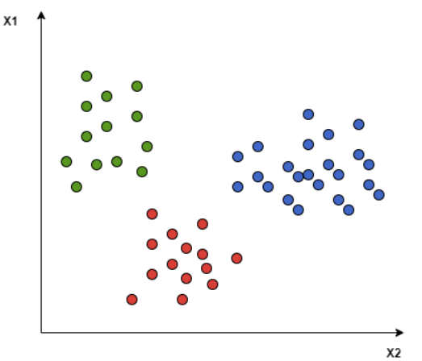
- The One-to-One Approach constructs a hyperplane to separate between every pair of classes, ignoring the data points not in either class. It uses $_m C_2 = m(m-1)/2$ binary SVMs to construct $m(m-1)/2$ hyperplanes. 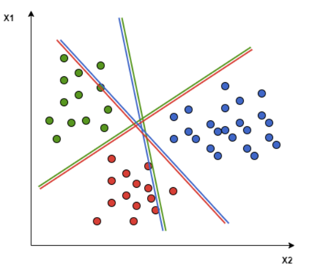
- The One-to-Rest Approach constructs a hyperplane to separate between a class and all others at once. It takes all points into account, dividing them into two groups: a group for the class points and a group for the rest. It uses $m$ binary SVMs. 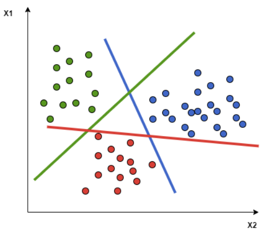
Deep Learning: Neural Networks & Backpropagation
[Hide]
The supervised ML algorithms mentioned so far are commonly used an implemented everywhere. The algorithms that are more commonly used in "general AI" are known as deep learning algorithms. The use of these algorithms through neural nets resemble neurons in the brain and require much more computing power than regular ML algorithms, generally not able to be run on commercial computers.
Suppose $\{(x^{(i)}, y^{(i)})\}_{i=1}^n$ are the training samples with $y^{(i)} \in \mathbb{R}$. Then, we will try to find some non-linear function $h_\theta: \mathbb{R}^d \longrightarrow \mathbb{R}$ that best fits the data. Note that we don't even know what form this function is in. Just like the linear model, the cost/loss function for point $x^{(i)}$ is really just the square of the residual, scaled by $0.5$. \[J^{(i)} (\theta) \equiv \frac{1}{2} \big( h_\theta (x^{(i)}) - y^{(i)} \big)^2\] and the mean-square cost function for the whole dataset is \[J(\theta) \equiv \frac{1}{n} \sum_{i=1}^n J^{(i)} (\theta)\] To minimize this, we can use batch GD with update rule \[\theta = \theta - \alpha \nabla_\theta J(\theta)\] Often, using batch GD can be faster than computing the partials for each component function due to hardware parallelization, so a mini-batch version of SGD is most commonly used in deep learning.
In mini-batch Stochastic Gradient Descent, we choose the learning rate (step size) $\alpha$, batch size $B$, and the number of iterations $n_{iter}$. We initialize $\theta$ randomly, and we do the following $n_{iter}$ times: We sample $B$ examples $j_1, \ldots, j_B$ (without replacement) uniformly from $\{1, \ldots, n \}$ and update $\theta$ by \[\theta = \theta - \frac{\alpha}{B} \sum_{k=1}^B \nabla_\theta J^{(j_k)} (\theta)\]
A neuron is defined as a function (visualized as a node) that takes in inputs $x$ and outputs a $y$ calculated thorugh a nonlinear function (which for example, may be defined $h_\theta (x) \equiv \text{ReLU}(\omega^T x + b)$). In the visual below, we see a node $h: \mathbb{R}^3 \longrightarrow \mathbb{R}$, with the nodes representing the inputs/outputs and the three arrows representing the function. Each arrow pointing from $x_i \rightarrow y$ means that $x_i$ is a relevant variable in calculating $y$, so we can see that the neuron does not consider $x_2$ relevant and does not implement it in its function. 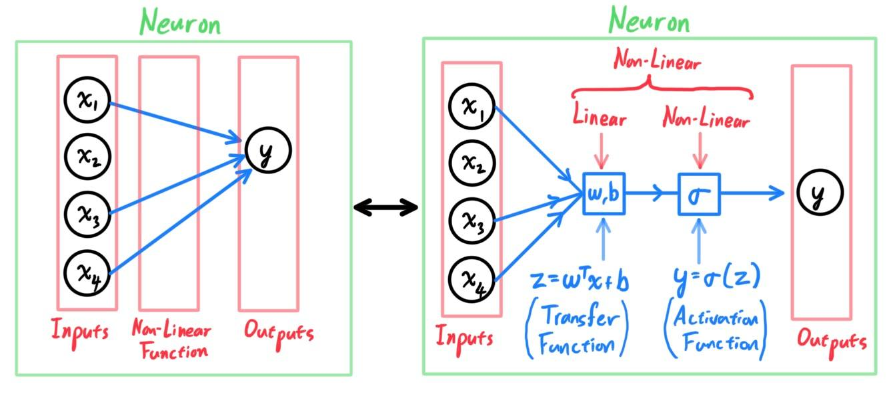 If there does not exist any arrow from a potential input $x$ to an output $y$, then this means that $x$ is not relevant in calculating $y$. However, we usually work with fully-connected neural networks, which means that every input is relevant to calculating every output, since we usually cannot make assumptions about which variables are relevant or not.
We can stack multiple neurons such that one neuron passes its output as input into the next neuron, resulting in a more complex function. What we have seen just now is a 1-layer neural network. The fully-connected 2-layer neural network of $d$ input features $x_1, \ldots, x_d$ and one scalar output $y \in \mathbb{R}$ can be visualized below. It has one hidden layer with $m$ input values $a_1, a_2, \ldots, a_m$. 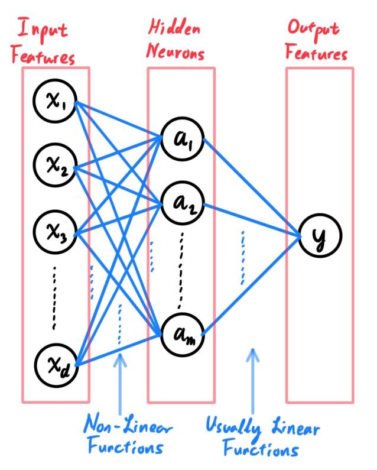 Note that each $a_i$ from the hidden layer is calculated (assuming that the mapping $x \mapsto a_i$ is the linear ReLU map, but could also be other non-linear maps) with the following system: \begin{align*} a_1 & = \text{ReLU}(\omega_1^T x + b_1) \\ a_2 & = \text{ReLU}(\omega_2^T x + b_2) \\ \ldots & = \ldots \\ a_m & = \text{ReLU}(\omega_m^T x + b_m) \end{align*} where each calculation $x \mapsto a_1, \; x \mapsto a_2, \; \ldots, x \mapsto a_m$ can be visualized below. 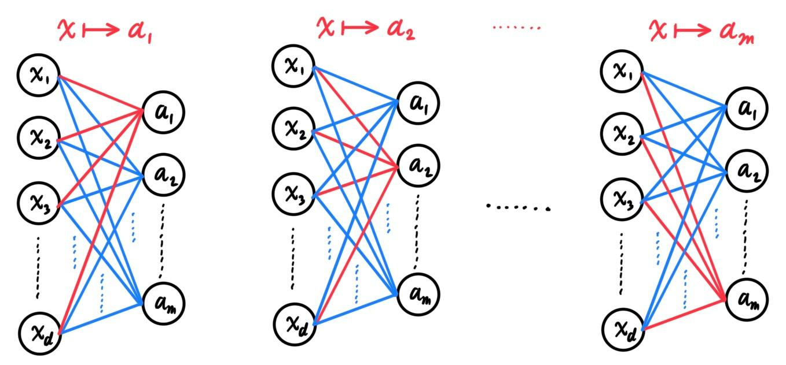 We can vectorize all this and rewrite it in an equivalent matrix form (to prevent slow for-looping in our process): \[a = \text{ReLU}\big( W x + b \big) = \text{ReLU} \Bigg( \begin{pmatrix} — & \omega_1^T & — \\ — & \omega_2^T & — \\ \vdots & \vdots & \vdots \\ — & \omega_m^T & — \end{pmatrix} \begin{pmatrix} x_1 \\ x_2 \\ \ldots \\ x_d \end{pmatrix} + \begin{pmatrix} d_1 \\ d_2 \\ \vdots \\ d_m \end{pmatrix} \Bigg)\]
Now, let us transition to a multi-layer fully-connected neural network. It has:
We consider the 2-layer neural network mentioned before, with $d$ input attributes and one hidden layer of $m$ scalar attriubtes. We can interpret the calculation of the cost function $J$ as the following composition of mappings: \[x \xrightarrow{W^{[1]} x + b^{[1]}} z \xrightarrow{ReLU(z)} a \xrightarrow{W^{[2]} a + b^{[2]}} o \xrightarrow{\frac{1}{2} (y - o)^2} J\] Recall the multivariate chain rule (full theorem here): Let $f: \mathbb{R}^n \longrightarrow \mathbb{R}^m$ and $g: \mathbb{R}^p \longrightarrow \mathbb{R}^n$ be 2 functions such that $f \circ g: \mathbb{R}^p \longrightarrow \mathbb{R}^m$ is well-defined. Then, \[\underset{m \times p}{D (f \circ g)} = \underset{m \times n}{D f} \cdot \underset{n \times p}{D g}\] From this we can state Lemma 1: Given some smooth $J: \mathbb{R}^m \longrightarrow \mathbb{R}$ with $z \in \mathbb{R}^m, W \in \mathbb{R}^{m \times d}, u \in \mathbb{R}^d, b \in \mathbb{R}^m$ such that \begin{align*} z & = W u + b \\ J & = J(z) \end{align*} then \[\underset{m \times d}{\frac{\partial J}{\partial W}} = \underset{m \times 1}{\frac{\partial J}{\partial z}} \cdot \underset{1 \times d}{u^T} \;\;\;\;\;\;\; \text{ and } \;\;\;\;\;\; \underset{m \times 1}{\frac{\partial J}{\partial b}} = \underset{m \times 1}{\frac{\partial J}{\partial z}}\] To calculate the partials of $J$ with respect to $W^{[2]}$ and $b^{[2]}$, we can take the function $W^{[2]} \mapsto J$ and split it up into the composition of the two functions: \begin{align*} o & = W^{[2]} a + b^{[2]} \\ J & = \frac{1}{2} \big(y - o\big)^2 \end{align*} and directly apply lemma 1 to get \begin{align*} \frac{\partial J}{\partial W^{[2]}} & = \frac{\partial J}{\partial o} \cdot \frac{\partial o}{\partial W^{[2]}} = (o - y) \cdot a^T \\ \frac{\partial J}{\partial b^{[2]}} & = \frac{\partial J}{\partial o} = (o - y) \end{align*} We now introduce Lemma 2: Given some smooth $J: \mathbb{R}^m \longrightarrow \mathbb{R}$ with $z, a \in \mathbb{R}^m$ and activation function $\sigma: \mathbb{R} \longrightarrow \mathbb{R}$ such that \begin{align*} a & = \sigma(z) \;\;\;\; (\text{ where } \sigma \text{ is an element-wise action})\\ J & = J(a) \end{align*} Then, we have (where $\odot$ denotes component-wise product): \[\frac{\partial J}{\partial z} = \frac{\partial J}{\partial a} \odot \sigma^\prime (z) = \begin{pmatrix} \partial J/ \partial a_1 \\ \vdots \\ \partial J/ \partial a_m \end{pmatrix} \odot \begin{pmatrix} \sigma^\prime (z_1) \\ \vdots \\ \sigma^\prime (z_m) \end{pmatrix} = \begin{pmatrix} \frac{\partial J}{\partial a_1} \cdot \sigma^\prime (z_1) \\ \vdots \\ \frac{\partial J}{\partial a_m} \cdot \sigma^\prime (z_m) \end{pmatrix}\] Now using these two lemmas, we can find the partials of $J$ with respect to $W^{[1]}$ and $b^{[1]}$. By splitting up the composition $x \mapsto J$ into $x \mapsto z \mapsto J$ as below and using lemma 1, we get \[\begin{cases} z = W^{[1]} x + b^{[1]} \\ J = J(z) \end{cases} \implies \begin{cases} \frac{\partial J}{\partial W^{[1]}} = \frac{\partial J}{\partial z} \cdot x^T \\ \frac{\partial J}{\partial b^{[1]}} = \frac{\partial J}{\partial z} \end{cases}\] Now we just have to find $\partial J/\partial z$. By splitting up $z \mapsto J$ into $z \mapsto a \mapsto J$ as below and using lemma 2, we get \[\begin{cases} a = \sigma(z) \\ J = J(a) \end{cases} \implies \frac{\partial J}{\partial z} = \frac{\partial J}{\partial a} \odot \sigma^\prime (z)\] Combining these two expressions gives \begin{align*} \frac{\partial J}{\partial W^{[1]}} & = \frac{\partial J}{\partial z} \cdot x^T = \bigg( \frac{\partial J}{\partial a} \odot \sigma^\prime (z) \bigg) \cdot x^T \\ \frac{\partial J}{\partial b^{[1]}} & = \frac{\partial J}{\partial z} = \frac{\partial J}{\partial a} \odot \sigma^\prime (z) \end{align*} By finally splitting up $a \mapsto J$ into $a \mapsto o \mapsto J$, we get \[\begin{cases} o = W^{[2]} a + b^{[2]} \\ J = \frac{1}{2} (y - o)^2 \end{cases} \implies \frac{\partial J}{\partial a} = \frac{\partial J}{\partial o} \; \frac{\partial o}{\partial a} = (o - y)\, \big(W^{[2]}\big)^T \] Therefore, \begin{align*} \frac{\partial J}{\partial W^{[1]}} & = \bigg( \frac{\partial J}{\partial a} \odot \sigma^\prime (z) \bigg) \cdot x^T \\ & = \bigg( (o - y) \big(W^{[2]}\big)^T \odot \sigma^\prime (z) \bigg) \cdot x^T = (o - y) \; \begin{pmatrix} W_1^{[2]} \cdot 1\{z_1 \geq 0\} \\ \vdots \\ W_m^{[2]} \cdot 1\{z_m \geq 0\} \end{pmatrix} \cdot x^T \\ \frac{\partial J}{\partial b^{[1]}} & = \frac{\partial J}{\partial a} \odot \sigma^\prime (z) \\ & = (o - y) \big(W^{[2]}\big)^T \odot \sigma^\prime (z) = (o - y) \; \begin{pmatrix} W_1^{[2]} \cdot 1\{z_1 \geq 0\} \\ \vdots \\ W_m^{[2]} \cdot 1\{z_m \geq 0\} \end{pmatrix} \end{align*} These four partials \[\frac{\partial J}{\partial W^{[1]}}, \frac{\partial J}{\partial W^{[2]}}, \frac{\partial J}{\partial b^{[1]}}, \frac{\partial J}{\partial b^{[2]}}\] are all we need to construct the gradient. Therefore, given that we have a neural network (with a given $\sigma$) with some training sample $(x, y)$ and are initialized at some point $\big(W^{[1]}, W^{[2]}, b^{[1]}, b^{[2]}\big)$ in the parameter space, we can take all these (given) points/values and compute $z = W^{[1]} x + b^{[1]}$, then $a = \sigma (z)$, then $o = W^{[2]} a + b^{[2]}$. These can be used to then compute \begin{align*} \frac{\partial J}{\partial W^{[1]}} & = (o - y) \, \Big( (W^{[2]})^T \odot \sigma^\prime (z) \Big) \cdot x^T \\ \frac{\partial J}{\partial W^{[2]}} & = (o - y) \cdot a^T \\ \frac{\partial J}{\partial b^{[1]}} & = (o - y) \, (W^{[2]})^T \odot \sigma^\prime (z) \\ \frac{\partial J}{\partial b^{[2]}} & = (o - y) \end{align*} Computing these four partials basically computes the gradient of $J$ at the point $\big(W^{[1]}, W^{[2]}, b^{[1]}, b^{[2]}\big)$, and so traveling in the direction of this vector: \[- \nabla J(\theta) \equiv -\begin{pmatrix} \partial J/\partial W^{[1]} \\ \partial J/\partial W^{[2]} \\ \partial J/\partial b^{[1]} \\ \partial J/\partial b^{[2]} \end{pmatrix} \in \mathbb{R}^{md} \oplus \mathbb{R}^m \oplus \mathbb{R}^m \oplus \mathbb{R}\] is traveling in the steepest descent. Note that $md, m, m, 1$ is the dimension of $W^{[1]}, W^{[2]}, b^{[1]}, b^{[2]}$, respectively.
For each $x^{(i)}$, we can compute all the $z^{[j](i)}$'s and $a^{[j](i)}$'s to get $h_\theta (x^{(i)}) = a^{[r](i)}$ and calculate (using $y^{(i)}$) $J^{(i)}$, too. \begin{align*} x^{(i)} & \xrightarrow{W^{[1]} x^{(i)} + b^{[1]}} z^{[1](i)} \xrightarrow{\sigma(z^{[1](i)})} a^{[1](i)} \\ & \xrightarrow{W^{[2]} a^{[1](i)} + b^{[2]}} z^{[2](i)} \xrightarrow{\sigma(z^{[2](i)})} a^{[2](i)}\\ & \ldots \\ & \xrightarrow{W^{[r-1]} a^{[r-2](i)} + b^{[r-1]}} z^{[r-1](i)} \xrightarrow{\sigma(z^{[r-1](i)})} a^{[r-1](i)}\\ & \xrightarrow{W^{[r]} a^{[r-1](i)} + b^{[r]}} z^{[r](i)} \xrightarrow{a^{[r](i)} = z^{[r](i)}} a^{[r](i)}\\ & \xrightarrow{\frac{1}{2} (y^{(i)} - a^{[r](i)})^2} J^{(i)} \;\;\;\;\; \text{ for all } i = 1, 2, \ldots, n \end{align*} Commencing the backward pass, we first compute for $k=r$ \begin{align*} \frac{\partial J^{(i)}}{\partial W^{[r]}} = \big(z^{[r](i)} - y^{(i)} \big) a^{[r-1](i)\,T} & \implies \frac{\partial J}{\partial W^{[r]}} = \frac{1}{n} \sum_{i=1}^n \frac{\partial J^{(i)}}{\partial W^{[r]}} = \frac{1}{n} \sum_{i=1}^n \big(z^{[r](i)} - y^{(i)} \big) a^{[r-1](i)\,T} \\ \frac{\partial J^{(i)}}{\partial b^{[r]}} = \big(z^{[r](i)} - y^{(i)} \big) \;\;\;\;\;\;\;\;\;\;\;\;\;\;& \implies \frac{\partial J}{\partial b^{[r]}} \;\;\;\; = \frac{1}{n} \sum_{i=1}^n \frac{\partial J^{(i)}}{\partial b^{[r]}} = \frac{1}{n} \sum_{i=1}^n \big(z^{[r](i)} - y^{(i)} \big) \end{align*} Then, we continue down for $k=r-1, \ldots, 2, 1$ to compute the partials for the rest of the $W^{[i]}, b^{[i]}$'s. \begin{align*} \frac{\partial J^{(i)}}{\partial W^{[k]}} & = \bigg( W^{[k+1]\,T} \, \frac{\partial J^{(i)}}{\partial z^{[k+1](i)}} \bigg) \odot \sigma^\prime (z^{[k](i)}) a^{[k-1](i)\,T} \\ & \implies \frac{\partial J}{\partial W^{[k]}} = \frac{1}{n} \sum_{i=1}^n \frac{\partial J^{(i)}}{\partial W^{[k]}} = \frac{1}{n} \sum_{i=1}^n \bigg( W^{[k+1]\,T} \, \frac{\partial J^{(i)}}{\partial z^{[k+1](i)}} \bigg) \odot \sigma^\prime (z^{[k](i)}) a^{[k-1](i)\,T} \\ \frac{\partial J^{(i)}}{\partial b^{[k]}} & = \bigg( W^{[k+1]\,T} \, \frac{\partial J^{(i)}}{\partial z^{[k+1](i)}} \bigg) \odot \sigma^\prime (z^{[k](i)}) \\ & \implies \frac{\partial J}{\partial W^{[k]}} = \frac{1}{n} \sum){i=1}^n \frac{\partial J^{(i)}}{\partial b^{[k]}} = \frac{1}{n} \sum_{i=1}^n \bigg( W^{[k+1]\,T} \, \frac{\partial J^{(i)}}{\partial z^{[k+1](i)}} \bigg) \odot \sigma^\prime (z^{[k](i)}) \end{align*} Therefore, we have the gradient, labeled $\nabla_\theta J$, which is itself a function that takes in inputs $W^{[1]}, W^{[2]}, \ldots, W^{[r]}, b^{[1]}, \ldots, b^{[r]}$ and outputs a vector in the parameter space of $\theta$ pointing in the direction of steepest increase of $J$. Using GD, we can initialize a random $\theta$ in the parameter space and use the iterative algorithm \[\theta = \theta - \nabla_\theta J (\theta)\] In words, given that we are at a position $\theta$ describing some set of parameters of the neural network, $-\nabla_\theta J (\theta)$ takes in this point and outputs the vector that we should travel in to decrease $J$ as much as possible. We update $\theta$ with $\theta - \nabla_\theta J (\theta)$ and do this until convergence.
Supervised Learning with Non-Linear Models
In the supervised learning setting, our model/hypothesis is $h_\theta (x)$, which we have considered to be a linear model as with the case when $h_\theta (x) = \theta^T x$ in linear regression, $h_\theta(x) = g(\theta^T x)$ in logistic regression, or $h_\theta(x) = \theta^T \phi(x)$ in a linear regression of new feature variables. Next, we will learn about a general family of models that are non-linear in both the parameters $\theta$ and the inputs $x$.
Suppose $\{(x^{(i)}, y^{(i)})\}_{i=1}^n$ are the training samples with $y^{(i)} \in \mathbb{R}$. Then, we will try to find some non-linear function $h_\theta: \mathbb{R}^d \longrightarrow \mathbb{R}$ that best fits the data. Note that we don't even know what form this function is in. Just like the linear model, the cost/loss function for point $x^{(i)}$ is really just the square of the residual, scaled by $0.5$. \[J^{(i)} (\theta) \equiv \frac{1}{2} \big( h_\theta (x^{(i)}) - y^{(i)} \big)^2\] and the mean-square cost function for the whole dataset is \[J(\theta) \equiv \frac{1}{n} \sum_{i=1}^n J^{(i)} (\theta)\] To minimize this, we can use batch GD with update rule \[\theta = \theta - \alpha \nabla_\theta J(\theta)\] Often, using batch GD can be faster than computing the partials for each component function due to hardware parallelization, so a mini-batch version of SGD is most commonly used in deep learning.
In mini-batch Stochastic Gradient Descent, we choose the learning rate (step size) $\alpha$, batch size $B$, and the number of iterations $n_{iter}$. We initialize $\theta$ randomly, and we do the following $n_{iter}$ times: We sample $B$ examples $j_1, \ldots, j_B$ (without replacement) uniformly from $\{1, \ldots, n \}$ and update $\theta$ by \[\theta = \theta - \frac{\alpha}{B} \sum_{k=1}^B \nabla_\theta J^{(j_k)} (\theta)\]
Activation Functions: ReLU Function
Let us define our first non-linear function. Given $h_{\omega, b} \equiv \omega^T x + b$, we can compose it with an activation function $\sigma: \mathbb{R} \longrightarrow \mathbb{R}$ (both domain and codomain must be $\mathbb{R}$). One such activation function is the ReLU function
\[\text{ReLU}: \mathbb{R} \longrightarrow \mathbb{R}, \;\;\; \text{ReLU}(z) \equiv \max\{z, 0\}\]
Composing the two gives
\[h_\theta (x) \equiv \text{ReLU}(\omega^T x + b), \;\;\;\;\; \text{ where } \;\; \omega \in \mathbb{R}^d, b \in \mathbb{R}\]
This $\text{ReLU}$ function is used to avoid any negative values in our output (e.g. if we're predicting house price as a function of area and number of bedrooms, it wouldn't make sense to have negative values). Since $\text{ReLU}$ is defined only for scalar values $z$, we extend this definition for vector values $z \in \mathbb{R}^n$ to get
\[\text{ReLU}(z) \equiv \text{ReLU} \begin{pmatrix} z_1 \\ z_2 \\ \vdots \\ z_n \end{pmatrix} \equiv \begin{pmatrix} \text{ReLU}(z_1) \\ \text{ReLU}(z_2) \\ \vdots \\ \text{ReLU}(z_n) \end{pmatrix} \]
Other activation functions $\sigma: \mathbb{R} \longrightarrow \mathbb{R}$, which should obviously be non-linear, include the sigmoid and hyperbolic tangent functions:
\begin{align*}
\sigma (z) \equiv \frac{1}{1 + e^{-z}} & \implies \frac{1}{1 + e^{-(\omega^T x + b)}} \\
\sigma (z) \equiv \frac{e^{z} - e^{-z}}{e^z + e^{-z}} & \implies h_\theta (x) = \frac{e^{\omega^T x + b} - e^{-(\omega^T x + b)}}{e^{\omega^T x + b} + e^{-(\omega^T x + b)}}
\end{align*}
The reason $\sigma$ must be non-linear is that if it was indeed linear, then by the fact that the composition of linear maps are linear, the entire neural network would just be one big composition of linear maps and therefore be one big linear map itself. This loses most of the representational power of the nerual network, since the output we are trying to predict has a non-linear relationship with the inputs. Without non-linear activation functions the neural network will simply perform linear regression.
Neural Networks
Since we will be using both notations $\theta$ and $\omega, b$, we should keep in mind that
\[\theta \equiv \begin{pmatrix} \omega \\ b \end{pmatrix} \in \mathbb{R}^d \oplus \mathbb{R}\]
and call $\omega, b$ the weight vector and the bias.
A neuron is defined as a function (visualized as a node) that takes in inputs $x$ and outputs a $y$ calculated thorugh a nonlinear function (which for example, may be defined $h_\theta (x) \equiv \text{ReLU}(\omega^T x + b)$). In the visual below, we see a node $h: \mathbb{R}^3 \longrightarrow \mathbb{R}$, with the nodes representing the inputs/outputs and the three arrows representing the function. Each arrow pointing from $x_i \rightarrow y$ means that $x_i$ is a relevant variable in calculating $y$, so we can see that the neuron does not consider $x_2$ relevant and does not implement it in its function. 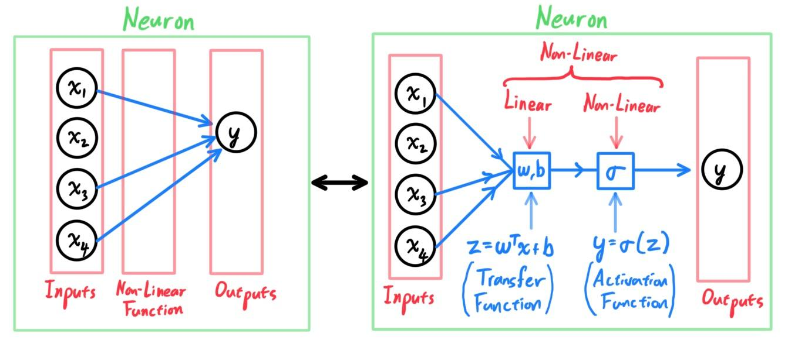 If there does not exist any arrow from a potential input $x$ to an output $y$, then this means that $x$ is not relevant in calculating $y$. However, we usually work with fully-connected neural networks, which means that every input is relevant to calculating every output, since we usually cannot make assumptions about which variables are relevant or not.
We can stack multiple neurons such that one neuron passes its output as input into the next neuron, resulting in a more complex function. What we have seen just now is a 1-layer neural network. The fully-connected 2-layer neural network of $d$ input features $x_1, \ldots, x_d$ and one scalar output $y \in \mathbb{R}$ can be visualized below. It has one hidden layer with $m$ input values $a_1, a_2, \ldots, a_m$. 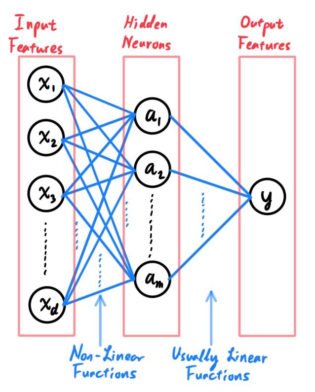 Note that each $a_i$ from the hidden layer is calculated (assuming that the mapping $x \mapsto a_i$ is the linear ReLU map, but could also be other non-linear maps) with the following system: \begin{align*} a_1 & = \text{ReLU}(\omega_1^T x + b_1) \\ a_2 & = \text{ReLU}(\omega_2^T x + b_2) \\ \ldots & = \ldots \\ a_m & = \text{ReLU}(\omega_m^T x + b_m) \end{align*} where each calculation $x \mapsto a_1, \; x \mapsto a_2, \; \ldots, x \mapsto a_m$ can be visualized below. 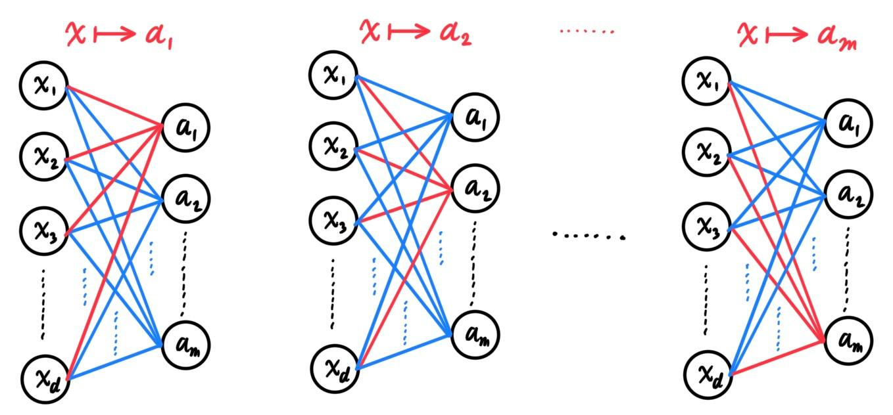 We can vectorize all this and rewrite it in an equivalent matrix form (to prevent slow for-looping in our process): \[a = \text{ReLU}\big( W x + b \big) = \text{ReLU} \Bigg( \begin{pmatrix} — & \omega_1^T & — \\ — & \omega_2^T & — \\ \vdots & \vdots & \vdots \\ — & \omega_m^T & — \end{pmatrix} \begin{pmatrix} x_1 \\ x_2 \\ \ldots \\ x_d \end{pmatrix} + \begin{pmatrix} d_1 \\ d_2 \\ \vdots \\ d_m \end{pmatrix} \Bigg)\]
Now, let us transition to a multi-layer fully-connected neural network. It has:
- input values $x \in \mathbb{R}^d$.
- an output value $y \in \mathbb{R}$
- $r$ layers (aka $r-1$ hidden layers), with
- the zeroth layer being equivalent to the input vector $x$, of dimension $r_0 = d$.
- the first hidden layer being a $m_1$-dimensional vector $a^{[1]}$, with elements $a_1^{[1]}, a_2^{[1]}, \ldots, a_{m_1}^{[1]}$.
- the second hidden layer being a $m_2$-dimensional vector $a^{[2]}$, with elements $a_1^{[2]}, a_2^{[2]}, \ldots, a_{m_2}^{[2]}$.
- ...
- the $r-1$th hidden layer being a $m_{r-1}$-dimensional vector $a^{[r-1]}$, with elements $a_1^{[r-1]}, a_2^{[r-1]}, \ldots, a_{m_{r-1}}^{[r-1]}$.
Backpropagation for 2-Layer Neural Networks
When it comes to finding gradients, we can easily derive it for simple linear regression since the hypothesis function $h_\theta$ and its cost function $J(\theta)$ is simple. Our neural network also attempts to predict some hypothesis function $h_\theta (x)$ given some training samples
\[\big\{(x^{(i)}, y^{(i)}) \; \big|\; x^{(i)} \in \mathbb{R}^d, \; y^{(i)} \in \mathbb{R} \big\}_{i=1}^n\]
We can do this by minimizing the cost function
\[J(\theta) \equiv \frac{1}{n} \sum_{i=1}^n J^{(i)} (\theta) \equiv \frac{1}{n} \sum_{i=1}^n \frac{1}{2} \big( h_\theta (x^{(i)}) - y^{(i)} \big)^2\]
But the thing is that for a neural network, $h_\theta (x)$ is a very complicated composition of nonlinear functions with many parameters. More precisely, an $r$-layered fully-connected neural network of layer dimensionality $d, m_1, m_2, \ldots, m_{r-1}$ (as in the diagram above) will have
\[\theta = (d+1) m_1 + (m_1 + 1) m_2 + \ldots + (m_{r-1} + 1) m_r\]
parameters, which can all be encoded in the weight matrices and biases $W^{[1]}, W^{[2]}, \ldots, W^{[r]}$ and $b^{[1]}, b^{[2]}, \ldots, b^{[r]}$. So, optimizing the parameters $\theta$ in a neural network is really equivalent to optimizing the $W^{[i]}$'s and $b^{[i]}$'s. Therefore, the challenge is now to find some efficient way to calculate the gradient of this complex function $h_\theta$, which may have thousands, or even millions, of parameters. Fortunately, we can use backpropagation to compute this gradient and then implement it in a gradient descent algorithm to minimize $J$. Note that backpropagation and GD not the same (although they are sometimes used interchangeably)! Backpropagation is just a method to find a gradient, whereas GD utilizes that gradient to move $\theta$ in the direction of steepest descent. One can say that backpropagation is a subalgorithm of GD.
We consider the 2-layer neural network mentioned before, with $d$ input attributes and one hidden layer of $m$ scalar attriubtes. We can interpret the calculation of the cost function $J$ as the following composition of mappings: \[x \xrightarrow{W^{[1]} x + b^{[1]}} z \xrightarrow{ReLU(z)} a \xrightarrow{W^{[2]} a + b^{[2]}} o \xrightarrow{\frac{1}{2} (y - o)^2} J\] Recall the multivariate chain rule (full theorem here): Let $f: \mathbb{R}^n \longrightarrow \mathbb{R}^m$ and $g: \mathbb{R}^p \longrightarrow \mathbb{R}^n$ be 2 functions such that $f \circ g: \mathbb{R}^p \longrightarrow \mathbb{R}^m$ is well-defined. Then, \[\underset{m \times p}{D (f \circ g)} = \underset{m \times n}{D f} \cdot \underset{n \times p}{D g}\] From this we can state Lemma 1: Given some smooth $J: \mathbb{R}^m \longrightarrow \mathbb{R}$ with $z \in \mathbb{R}^m, W \in \mathbb{R}^{m \times d}, u \in \mathbb{R}^d, b \in \mathbb{R}^m$ such that \begin{align*} z & = W u + b \\ J & = J(z) \end{align*} then \[\underset{m \times d}{\frac{\partial J}{\partial W}} = \underset{m \times 1}{\frac{\partial J}{\partial z}} \cdot \underset{1 \times d}{u^T} \;\;\;\;\;\;\; \text{ and } \;\;\;\;\;\; \underset{m \times 1}{\frac{\partial J}{\partial b}} = \underset{m \times 1}{\frac{\partial J}{\partial z}}\] To calculate the partials of $J$ with respect to $W^{[2]}$ and $b^{[2]}$, we can take the function $W^{[2]} \mapsto J$ and split it up into the composition of the two functions: \begin{align*} o & = W^{[2]} a + b^{[2]} \\ J & = \frac{1}{2} \big(y - o\big)^2 \end{align*} and directly apply lemma 1 to get \begin{align*} \frac{\partial J}{\partial W^{[2]}} & = \frac{\partial J}{\partial o} \cdot \frac{\partial o}{\partial W^{[2]}} = (o - y) \cdot a^T \\ \frac{\partial J}{\partial b^{[2]}} & = \frac{\partial J}{\partial o} = (o - y) \end{align*} We now introduce Lemma 2: Given some smooth $J: \mathbb{R}^m \longrightarrow \mathbb{R}$ with $z, a \in \mathbb{R}^m$ and activation function $\sigma: \mathbb{R} \longrightarrow \mathbb{R}$ such that \begin{align*} a & = \sigma(z) \;\;\;\; (\text{ where } \sigma \text{ is an element-wise action})\\ J & = J(a) \end{align*} Then, we have (where $\odot$ denotes component-wise product): \[\frac{\partial J}{\partial z} = \frac{\partial J}{\partial a} \odot \sigma^\prime (z) = \begin{pmatrix} \partial J/ \partial a_1 \\ \vdots \\ \partial J/ \partial a_m \end{pmatrix} \odot \begin{pmatrix} \sigma^\prime (z_1) \\ \vdots \\ \sigma^\prime (z_m) \end{pmatrix} = \begin{pmatrix} \frac{\partial J}{\partial a_1} \cdot \sigma^\prime (z_1) \\ \vdots \\ \frac{\partial J}{\partial a_m} \cdot \sigma^\prime (z_m) \end{pmatrix}\] Now using these two lemmas, we can find the partials of $J$ with respect to $W^{[1]}$ and $b^{[1]}$. By splitting up the composition $x \mapsto J$ into $x \mapsto z \mapsto J$ as below and using lemma 1, we get \[\begin{cases} z = W^{[1]} x + b^{[1]} \\ J = J(z) \end{cases} \implies \begin{cases} \frac{\partial J}{\partial W^{[1]}} = \frac{\partial J}{\partial z} \cdot x^T \\ \frac{\partial J}{\partial b^{[1]}} = \frac{\partial J}{\partial z} \end{cases}\] Now we just have to find $\partial J/\partial z$. By splitting up $z \mapsto J$ into $z \mapsto a \mapsto J$ as below and using lemma 2, we get \[\begin{cases} a = \sigma(z) \\ J = J(a) \end{cases} \implies \frac{\partial J}{\partial z} = \frac{\partial J}{\partial a} \odot \sigma^\prime (z)\] Combining these two expressions gives \begin{align*} \frac{\partial J}{\partial W^{[1]}} & = \frac{\partial J}{\partial z} \cdot x^T = \bigg( \frac{\partial J}{\partial a} \odot \sigma^\prime (z) \bigg) \cdot x^T \\ \frac{\partial J}{\partial b^{[1]}} & = \frac{\partial J}{\partial z} = \frac{\partial J}{\partial a} \odot \sigma^\prime (z) \end{align*} By finally splitting up $a \mapsto J$ into $a \mapsto o \mapsto J$, we get \[\begin{cases} o = W^{[2]} a + b^{[2]} \\ J = \frac{1}{2} (y - o)^2 \end{cases} \implies \frac{\partial J}{\partial a} = \frac{\partial J}{\partial o} \; \frac{\partial o}{\partial a} = (o - y)\, \big(W^{[2]}\big)^T \] Therefore, \begin{align*} \frac{\partial J}{\partial W^{[1]}} & = \bigg( \frac{\partial J}{\partial a} \odot \sigma^\prime (z) \bigg) \cdot x^T \\ & = \bigg( (o - y) \big(W^{[2]}\big)^T \odot \sigma^\prime (z) \bigg) \cdot x^T = (o - y) \; \begin{pmatrix} W_1^{[2]} \cdot 1\{z_1 \geq 0\} \\ \vdots \\ W_m^{[2]} \cdot 1\{z_m \geq 0\} \end{pmatrix} \cdot x^T \\ \frac{\partial J}{\partial b^{[1]}} & = \frac{\partial J}{\partial a} \odot \sigma^\prime (z) \\ & = (o - y) \big(W^{[2]}\big)^T \odot \sigma^\prime (z) = (o - y) \; \begin{pmatrix} W_1^{[2]} \cdot 1\{z_1 \geq 0\} \\ \vdots \\ W_m^{[2]} \cdot 1\{z_m \geq 0\} \end{pmatrix} \end{align*} These four partials \[\frac{\partial J}{\partial W^{[1]}}, \frac{\partial J}{\partial W^{[2]}}, \frac{\partial J}{\partial b^{[1]}}, \frac{\partial J}{\partial b^{[2]}}\] are all we need to construct the gradient. Therefore, given that we have a neural network (with a given $\sigma$) with some training sample $(x, y)$ and are initialized at some point $\big(W^{[1]}, W^{[2]}, b^{[1]}, b^{[2]}\big)$ in the parameter space, we can take all these (given) points/values and compute $z = W^{[1]} x + b^{[1]}$, then $a = \sigma (z)$, then $o = W^{[2]} a + b^{[2]}$. These can be used to then compute \begin{align*} \frac{\partial J}{\partial W^{[1]}} & = (o - y) \, \Big( (W^{[2]})^T \odot \sigma^\prime (z) \Big) \cdot x^T \\ \frac{\partial J}{\partial W^{[2]}} & = (o - y) \cdot a^T \\ \frac{\partial J}{\partial b^{[1]}} & = (o - y) \, (W^{[2]})^T \odot \sigma^\prime (z) \\ \frac{\partial J}{\partial b^{[2]}} & = (o - y) \end{align*} Computing these four partials basically computes the gradient of $J$ at the point $\big(W^{[1]}, W^{[2]}, b^{[1]}, b^{[2]}\big)$, and so traveling in the direction of this vector: \[- \nabla J(\theta) \equiv -\begin{pmatrix} \partial J/\partial W^{[1]} \\ \partial J/\partial W^{[2]} \\ \partial J/\partial b^{[1]} \\ \partial J/\partial b^{[2]} \end{pmatrix} \in \mathbb{R}^{md} \oplus \mathbb{R}^m \oplus \mathbb{R}^m \oplus \mathbb{R}\] is traveling in the steepest descent. Note that $md, m, m, 1$ is the dimension of $W^{[1]}, W^{[2]}, b^{[1]}, b^{[2]}$, respectively.
Backpropagation for Multi-Layer Neural Networks
We generalize our backpropagation algorithms for multilayered neural networks. With the notation $a^{[0]} = x$ and $a^{[r]} = z^{[r]} = h_\theta (x)$ for simplicity, we have
\begin{align*}
a^{[1]} & = \text{ReLU}\big(W^{[1]} a^{[0]} + b^{[1]} \big) \\
a^{[2]} & = \text{ReLU} \big( W^{[2]} a^{[1]} + b^{[2]} \big) \\
\ldots & = \ldots \\
a^{[r-1]} & = \text{ReLU} \big( W^{[r-1]} a^{[r-2]} + b^{[r-1]} \big) \\
a^{[r]} & = z^{[r]} = W^{[r]} a^{[r-1]} a^{[r-1]} + b^{[r]} \\
J & = \frac{1}{2} \big( a^{[r]} - y \big)^2
\end{align*}
Note that this entire algorithm from one point $x \rightarrow h_\theta (x) \rightarrow J$ can be broken down into the following steps. Note that the $J$ at the end does not represent the mean-square cost function (of all datapoints) but just the cost function for the singular point $(x, y)$.
\begin{align*}
x & \xrightarrow{W^{[1]} x + b^{[1]}} z^{[1]} \xrightarrow{\text{ReLU}(z^{[1]})} a^{[1]} \\
& \xrightarrow{W^{[2]} a^{[1]} + b^{[2]}} z^{[2]} \xrightarrow{\text{ReLU}(z^{[2]})} a^{[2]}\\
& \xrightarrow{W^{[3]} a^{[2]} + b^{[3]}} z^{[3]} \xrightarrow{\text{ReLU}(z^{[3]})} a^{[3]}\\
& \ldots \\
& \xrightarrow{W^{[r-2]} a^{[r-3]} + b^{[r-2]}} z^{[r-2]} \xrightarrow{\text{ReLU}(z^{[r-2]})} a^{[r-2]}\\
& \xrightarrow{W^{[r-1]} a^{[r-2]} + b^{[r-1]}} z^{[r-1]} \xrightarrow{\text{ReLU}(z^{[r-1]})} a^{[r-1]}\\
& \xrightarrow{W^{[r]} a^{[r-1]} + b^{[r]}} z^{[r]} \xrightarrow{a^{[r]} = z^{[r]}} a^{[r]}\\
& \xrightarrow{\frac{1}{2} (y - a^{[r]})^2} J
\end{align*}
But note that we can generalize the mappings $a^{[k-1]} \mapsto z^{[k]}$ and $z^{[k]} \mapsto J$ as such on the left, which implies by lemma 1 that
\[\begin{cases}
z^{[k]} = W^{[k]} a^{[k-1]} + b^{[k]} \\
J = J(z^{[k]}) \end{cases} \implies \begin{cases}
\frac{\partial J}{\partial W^{[k]}} = \frac{\partial J}{\partial z^{[k]}} \cdot a^{[k-1]\, T} \\
\frac{\partial J}{\partial b^{[k]}} = \frac{\partial J}{\partial z^{[k]}}
\end{cases} \;\; \text{ for all } k = 1, 2, \ldots, r\]
Therefore, computing all the $\partial J / \partial z^{[k]}$'s will allow us to compute the above for all $k$, allowing us to get the gradient. The initial term where $k=r$ can be solved easily:
\[J(z^{[r]}) = \frac{1}{2} (y - z^{[r]}) \implies \frac{\partial J}{\partial z^{[r]}} = \big(z^{[r]} - y \big)\]
What we would like to do is design some formula that calculates the $\frac{\partial J}{\partial z^{[k]}}$'s iteratively backwards from $k = r, r-1, \ldots, 2, 1$. This is often called the backward press. By lemma 2, we can take the mappings $z^{[k]} \mapsto a^{[k]}$, and get
\[\begin{cases}
a^{[k]} = \text{ReLU}(z^{[k]}) \\
J = J(a^{[k]})
\end{cases} \implies
\frac{\partial J}{\partial z^{[k]}} = \frac{\partial J}{\partial a^{[k]}} \odot \text{ReLU}^\prime (z^{[k]})\]
Now, we must find $\frac{\partial J}{\partial a^{[k]}}$, which must be put into a form of $z^{[k+1]}$. The relationship between $a^{[k]}$ and $z^{[k+1]}$ can be written as below, and calculating the derivative with the chain rule gives:
\[\begin{cases}
z^{[k+1]} = W^{[k+1]} a^{[k]} + b^{[k+1]} \\
J = J (z^{[k+1]})
\end{cases} \implies \underset{m_k \times 1}{\frac{\partial J}{\partial a^{[k]}}} = \underset{m_k \times m_{k+1}}{W^{[k+1]\,T}} \, \underset{m_{k+1} \times 1}{\frac{\partial J}{\partial z^{[k+1]}}}\]
For those that are confused on why we are taking the transpose of $W^{[k+1]}$, recall that given a function $f: \mathbb{R}^n \longrightarrow \mathbb{R}$, its total derivative at a point $x_0$ is a linear mapping $df (x_0): \mathbb{R}^n \longrightarrow \mathbb{R}$ that is the best linear approximation of $f$ at $x_0$. Stepping away from the abstraction, the matrix realization of $df(x_0)$ is a $1 \times n$ matrix (i.e. a row vector) that we will call $Df(x_0)$.
\[Df(x_0) = \begin{pmatrix} \frac{\partial f}{\partial x_1} & \frac{\partial f}{\partial x_2} & \ldots & \frac{\partial f}{\partial x_n} \end{pmatrix}\]
We write it as a row vector because the action of $Df(x_0)$ onto a certain point $x^*$ is written in terms of left-matrix multiplication.
\[Df(x_0) (x^*) = Df(x_0) x^* = \begin{pmatrix} \frac{\partial f}{\partial x_1} & \ldots & \frac{\partial f}{\partial x_n} \end{pmatrix} \begin{pmatrix} x^*_1 \\ \vdots \\ x^*_n \end{pmatrix}\]
Similarly, a function $f: \mathbb{R}^n \longrightarrow \mathbb{R}^m$ has the total derivative $Df(x_0): \mathbb{R}^n \longrightarrow \mathbb{R}^m$, with a realization as a $m \times n$ matrix. Now, given the equations above, we can see that through the chain rule,
\[\underset{1 \times m_k} {\frac{\partial J}{\partial a^{[k]}}} = \underset{1 \times m_{k+1}}{\frac{\partial J}{\partial z^{[k+1]}}} \,
\underset{m_{k+1} \times m_k}{\frac{\partial z^{[k+1]}}{\partial a^{[k]}}} \implies \frac{\partial J}{\partial a^{[k]}} = \frac{\partial J}{\partial z^{[k+1]}} \, W^{[k+1]}\]
but within this context of deep learning, we have used column vectors to represent derivatives, so taking the transpose of the entire equation gives
\[\Bigg( \frac{\partial J}{\partial a^{[k]}} \Bigg)^T =\Bigg(\frac{\partial J}{\partial z^{[k+1]}} \, W^{[k+1]}\Bigg)^T \implies \Bigg( \frac{\partial J}{\partial a^{[k]}} \Bigg)^T = W^{[k+1]\,T} \Bigg(\frac{\partial J}{\partial z^{[k+1]}}\Bigg)^T\]
Now back to the main problem: we are done! Starting from $k=r$, we first compute
\begin{align*}
\frac{\partial J}{\partial W^{[r]}} & \, = \frac{\partial J}{\partial z^{[r]}} a^{[r-1]\,T} = \big( z^{[r]} - y\big) a^{[r-1]\,T} \\
\frac{\partial J}{\partial b^{[r]}} & = \frac{\partial J}{\partial z^{[r]}} \;\;\;\;\;\;\;\;\;\;\; = \big( z^{[r]} - y\big)
\end{align*}
and then use the iterative algorithm to compute for $k=r-1, \ldots, 2, 1$.
\begin{align*}
\frac{\partial J}{\partial W^{[k]}} & \, = \frac{\partial J}{\partial z^{[k]}} a^{[r-1]\,T} = \bigg( W^{[k+1]\,T} \, \frac{\partial J}{\partial z^{[k+1]}} \bigg) \odot \text{ReLU}^\prime \big( z^{[k]} \big) a^{[k-1]\,T} \\
\frac{\partial J}{\partial b^{[k]}} & = \frac{\partial J}{\partial z^{[k]}} \;\;\;\;\;\;\;\;\;\;\; = \bigg( W^{[k+1]\,T} \, \frac{\partial J}{\partial z^{[k+1]}} \bigg) \odot \text{ReLU}^\prime \big( z^{[k]} \big)
\end{align*}
Summary: Backpropogation of Multilayer Neural Nets (with Vectorization)
We summarize the entire backpropogation algorithm. Given that we have an $r$-layer neural network (with a given $\sigma$) $h_\theta: \mathcal{X} = \mathbb{R}^d \longrightarrow \mathcal{Y} = \mathbb{R}$ with some set of $n$ $d$-dimensional training samples
\[\big\{ (x^{(i)}, y^{(i)}) \big\}_{i=1}^n\]
we would like to find the optimal parameters
\[\theta \equiv \big( W^{[1]}, W^{[2]}, \ldots, W^{[r]}, \; b^{[1]}, b^{[2]}, \ldots, b^{[r]}\big) \]
such that the mean-square cost function
\[J(\theta) \equiv \frac{1}{n} \sum_{i=1}^n J^{(i)}(\theta) = \frac{1}{n} \sum_{i=1}^n \frac{1}{2} \big( h_\theta(x^{(i)}) - y^{(i)} \big)^2\]
is minimized. We can optimize $\theta$ using gradient descent, and fortunately, we can indeed efficiently calculate this gradient of the much more complex, nonlinear neural network. Without loss of generality, we will assume the gradient of the form
\[\nabla_\theta J \equiv \begin{pmatrix}
\partial J / \partial W^{[1]} \\
\partial J / \partial W^{[2]} \\
\vdots \\
\partial J / \partial W^{[r]} \\
\partial J / \partial b^{[1]} \\
\vdots \\
\partial J / \partial b^{[r]}
\end{pmatrix}\]
Note that the backpropagation algorithm only works for when there is a singular training sample $(x^{(i)}, y^{(i)})$ (as opposed to a set of $n$) with a cost function defined $J^{(i)} (\theta) \equiv \frac{1}{2} \big( h_\theta (x^{(i)}) - y^{(i)}\big)^2$ (without the summation). Therefore, keep in mind that backpropagation will calculate $\nabla_\theta J^{(i)}$ for each $i$, but not $\nabla_\theta J$ in general. However, it is an elementary fact in calculus that the gradient of $J$ is equal to the average of the gradients of all $J^{(i)}$'s, so it actually does suffice to calculate each $\nabla_\theta J^{(i)}$.
For each $x^{(i)}$, we can compute all the $z^{[j](i)}$'s and $a^{[j](i)}$'s to get $h_\theta (x^{(i)}) = a^{[r](i)}$ and calculate (using $y^{(i)}$) $J^{(i)}$, too. \begin{align*} x^{(i)} & \xrightarrow{W^{[1]} x^{(i)} + b^{[1]}} z^{[1](i)} \xrightarrow{\sigma(z^{[1](i)})} a^{[1](i)} \\ & \xrightarrow{W^{[2]} a^{[1](i)} + b^{[2]}} z^{[2](i)} \xrightarrow{\sigma(z^{[2](i)})} a^{[2](i)}\\ & \ldots \\ & \xrightarrow{W^{[r-1]} a^{[r-2](i)} + b^{[r-1]}} z^{[r-1](i)} \xrightarrow{\sigma(z^{[r-1](i)})} a^{[r-1](i)}\\ & \xrightarrow{W^{[r]} a^{[r-1](i)} + b^{[r]}} z^{[r](i)} \xrightarrow{a^{[r](i)} = z^{[r](i)}} a^{[r](i)}\\ & \xrightarrow{\frac{1}{2} (y^{(i)} - a^{[r](i)})^2} J^{(i)} \;\;\;\;\; \text{ for all } i = 1, 2, \ldots, n \end{align*} Commencing the backward pass, we first compute for $k=r$ \begin{align*} \frac{\partial J^{(i)}}{\partial W^{[r]}} = \big(z^{[r](i)} - y^{(i)} \big) a^{[r-1](i)\,T} & \implies \frac{\partial J}{\partial W^{[r]}} = \frac{1}{n} \sum_{i=1}^n \frac{\partial J^{(i)}}{\partial W^{[r]}} = \frac{1}{n} \sum_{i=1}^n \big(z^{[r](i)} - y^{(i)} \big) a^{[r-1](i)\,T} \\ \frac{\partial J^{(i)}}{\partial b^{[r]}} = \big(z^{[r](i)} - y^{(i)} \big) \;\;\;\;\;\;\;\;\;\;\;\;\;\;& \implies \frac{\partial J}{\partial b^{[r]}} \;\;\;\; = \frac{1}{n} \sum_{i=1}^n \frac{\partial J^{(i)}}{\partial b^{[r]}} = \frac{1}{n} \sum_{i=1}^n \big(z^{[r](i)} - y^{(i)} \big) \end{align*} Then, we continue down for $k=r-1, \ldots, 2, 1$ to compute the partials for the rest of the $W^{[i]}, b^{[i]}$'s. \begin{align*} \frac{\partial J^{(i)}}{\partial W^{[k]}} & = \bigg( W^{[k+1]\,T} \, \frac{\partial J^{(i)}}{\partial z^{[k+1](i)}} \bigg) \odot \sigma^\prime (z^{[k](i)}) a^{[k-1](i)\,T} \\ & \implies \frac{\partial J}{\partial W^{[k]}} = \frac{1}{n} \sum_{i=1}^n \frac{\partial J^{(i)}}{\partial W^{[k]}} = \frac{1}{n} \sum_{i=1}^n \bigg( W^{[k+1]\,T} \, \frac{\partial J^{(i)}}{\partial z^{[k+1](i)}} \bigg) \odot \sigma^\prime (z^{[k](i)}) a^{[k-1](i)\,T} \\ \frac{\partial J^{(i)}}{\partial b^{[k]}} & = \bigg( W^{[k+1]\,T} \, \frac{\partial J^{(i)}}{\partial z^{[k+1](i)}} \bigg) \odot \sigma^\prime (z^{[k](i)}) \\ & \implies \frac{\partial J}{\partial W^{[k]}} = \frac{1}{n} \sum){i=1}^n \frac{\partial J^{(i)}}{\partial b^{[k]}} = \frac{1}{n} \sum_{i=1}^n \bigg( W^{[k+1]\,T} \, \frac{\partial J^{(i)}}{\partial z^{[k+1](i)}} \bigg) \odot \sigma^\prime (z^{[k](i)}) \end{align*} Therefore, we have the gradient, labeled $\nabla_\theta J$, which is itself a function that takes in inputs $W^{[1]}, W^{[2]}, \ldots, W^{[r]}, b^{[1]}, \ldots, b^{[r]}$ and outputs a vector in the parameter space of $\theta$ pointing in the direction of steepest increase of $J$. Using GD, we can initialize a random $\theta$ in the parameter space and use the iterative algorithm \[\theta = \theta - \nabla_\theta J (\theta)\] In words, given that we are at a position $\theta$ describing some set of parameters of the neural network, $-\nabla_\theta J (\theta)$ takes in this point and outputs the vector that we should travel in to decrease $J$ as much as possible. We update $\theta$ with $\theta - \nabla_\theta J (\theta)$ and do this until convergence.
Vectorization over Training Samples
Rather than computing everything independently for each sample $(x^{(i)}, y^{(i)})$, we can update them in batches using basic matrix properties. That is, given the following system, with $z_i, b \in \mathbb{R}^m, x_i \in \mathbb{R}^n, W \in \text{Mat}(n \times m, \mathbb{R}$),
\begin{align*}
z_1 & = W x_1 + b \\
z_2 & = W x_2 + b \\
\ldots & = \ldots \\
z_n & = W x_n + b
\end{align*}
we can encode it as the matrix equation
\[Z = W X + \tilde{b} \iff \begin{pmatrix} | & \ldots & | \\ z_1 & \ldots & z_n \\ | & \ldots & | \end{pmatrix} = W \begin{pmatrix}
| & \ldots & | \\
x_1 & \ldots & x_n \\
| & \ldots & |
\end{pmatrix} + \begin{pmatrix} | & \ldots & | \\ b & \ldots & b \\ | & \ldots & | \end{pmatrix} \]
and therefore, by setting the inputs and outputs as
\[X = \begin{pmatrix} | & \ldots & | \\ x^{(1)} & \ldots & x^{(n)} \\ | & \ldots & | \end{pmatrix} \in \text{Mat}(d \times n, \mathbb{R}), \; Y = \begin{pmatrix} y^{(1)} & \ldots & y^{(n)} \end{pmatrix} \in \text{Mat}(1 \times n, \mathbb{R})\]
along with the intermediate values (note that $m_0 = d, m_r = 1$) as
\[Z^{[i]} = \begin{pmatrix} | & \ldots & |\\ z^{[i](1)} & \ldots & z^{[i](n)} \\ | & \ldots & |\end{pmatrix}, \; A^{[i]} = \begin{pmatrix} | & \ldots & | \\ a^{[i](1)} & \ldots & a^{[i](n)} \\ | & \ldots & | \end{pmatrix}, \; \tilde{b}^{[i]} = \begin{pmatrix} | & \ldots & | \\ b^{[i]} & \ldots & b^{[i]} \\ | & \ldots & | \end{pmatrix} \in \text{Mat}(m_i \times n, \mathbb{R})\]
and mappings as
\[W^{[i]} \in \text{Mat}(m_{i} \times m_{i-1}, \mathbb{R}), \;\;\;\;
\sigma (Z^{[i]}) = \begin{pmatrix} | & \ldots & |\\ \sigma(z^{[i](1)}) & \ldots & \sigma(z^{[i](n)}) \\ | & \ldots & |\end{pmatrix} = \begin{pmatrix} \sigma(z^{[i](1)}_1) & \ldots & \sigma(z^{[i](n)}_1) \\
\vdots & \ddots & \vdots \\
\sigma(z^{[i](1)}_{m_i}) & \ldots & \sigma(z^{[i](n)}_{m_i}) \end{pmatrix}\]
each of the $n$ series of compositions of mappings for each $x^{(i)}$ can now be visualized as one series:
\begin{align*}
X & \xrightarrow{W^{[1]} X + \tilde{b}^{[1]}} Z^{[1]} \xrightarrow{\sigma(Z^{[1]})} A^{[1]} \\
& \xrightarrow{W^{[2]} A^{[1]} + \tilde{b}^{[2]}} Z^{[2]} \xrightarrow{\sigma(Z^{[2]})} A^{[2]}\\
& \ldots \\
& \xrightarrow{W^{[r-1]} A^{[r-2]} + \tilde{b}^{[r-1]}} Z^{[r-1]} \xrightarrow{\sigma(Z^{[r-1]})} A^{[r-1]}\\
& \xrightarrow{W^{[r]} A^{[r-1]} + \tilde{b}^{[r]}} Z^{[r]} \xrightarrow{A^{[r]} = Z^{[r]}} A^{[r]}\\
& \xrightarrow{\frac{1}{2} ||Y - A^{[r]}||^2} J
\end{align*}
Note that $A^{[r]} = Z^{[r]}$ is the predicted value, an row $n$-vector, since that final mapping $W^{[r]}$ maps $\mathbb{R}^{m_{r-1}}$ to the reals $\mathbb{R}$. Furthermore, the mean-square cost function can be directly computed (without steps of summing the individual cost functions for each sample) by merely finding the square of the $L_2$-distance between the given $Y$ and the predicted value $A^{[r]}$ and scaling it by $\frac{1}{2n}$. It's the same process as above, but the process is much neater to look at.
Decision Trees
[Hide]
Another type of classification problem is decision tree learning. It generally involves creating some sort of tree that represents a set of decisions using a given set of input data $x^{(i)}$ with its given classification $y^{(i)}$. $\mathcal{Y}$ is a discrete, finite set. However, features of $\mathcal{X}$ may be discrete or continuous.
For example, let us have $n=9$ observations of training data on individuals that would like to take out a loan from a bank. We are interested in three relevant qualities, so
and we want to make some sort of tree of the form below. What a tree would do is look at some new input and look at its attributes in some order (below, it is shown that it looks at $x_1$ first, then $x_2$, then $x_3$).
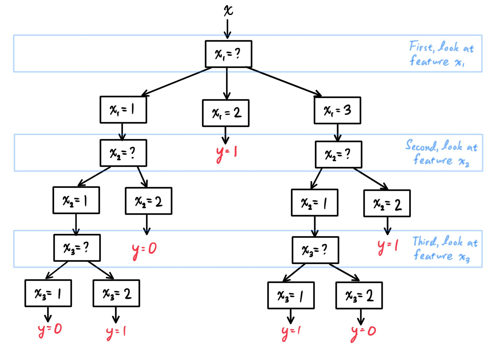
However, due to there being an exponentially large number of possible trees for a given problem, finding the optimal decision tree is an NP-hard problem. Growing the tree involves deciding on which features to look at first and what conditions to use for splitting, along with knowing when to stop.
The recursive binary splitting algorithm (like most algorithms) grows trees from the top-down. Starting from the root, we do the following steps (assuming that this is a binary-classification problem):
As an example, consider the target samples with 2 continuous input values $(x^{(i)}_1, x^{(i)}_2) \in \mathbb{R}^2$ along with their respective (binary) classfication outputs of either $y^{(i)} = 0$ or $1$. 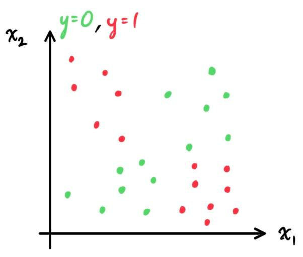 We find the optimal value $t = t_1^*$ that minimizes the classification error for the first attribute $x_1$ and classify it into the two discrete groups of "greater than $t$" and "less than $t$." This represents our first split in the tree, which we can visualize as a decision boundary in $\mathbb{R}^2$ on the left. We can also split it accordig to the second attribute $x_2$ as shown on the right, but the decision tree will choose the split with the minimum classification error and therefore $x_1$. 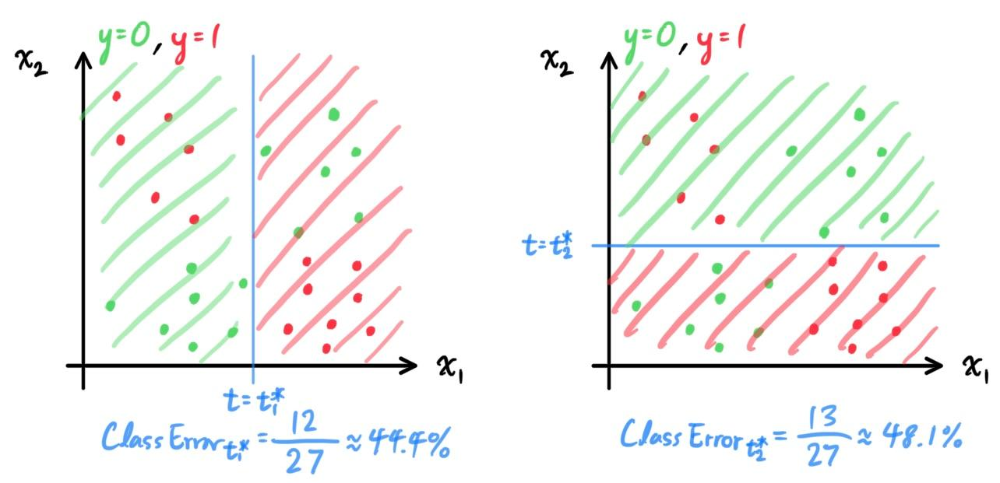 Now for each branch ("greater than $t$" and "less than $t$"), we can split it even further by finding the optimal value $t_{1, 1}^*$ and $t_{1, 2}^*$. This represents our second split in the tree (actually two splits, for each branch), which we can visualise as a decicion boundary in each half-space of $\mathbb{R}^2$. We also show on the right what would happen if the decision tree was constructed with a split on feature $x_2$ first. 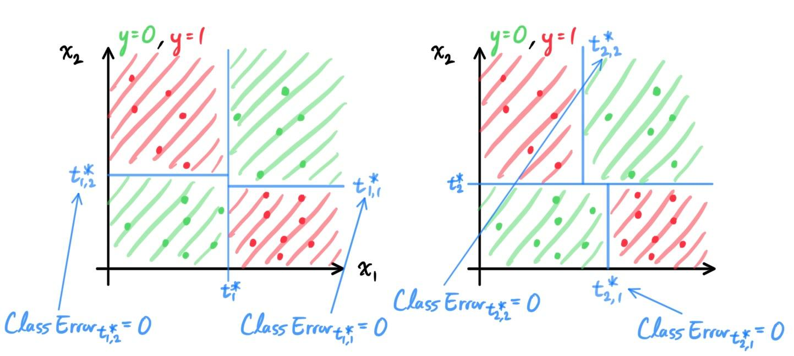
Classification Tree
Let us have a set of input values
\[x^{(i)} = \begin{pmatrix} x^{(i)}_1 \\ x^{(i)}_2 \\ \vdots \\ x^{(i)}_d \end{pmatrix} \in \prod_{j=1}^d \mathbb{Z}_{r_j}\]
where $Z_{r_j} \equiv \{1, 2, \ldots, r_j\}$. This just means that the component value of input $x^{(i)}_j$ can be in one of $r_j$ bins.
For example, let us have $n=9$ observations of training data on individuals that would like to take out a loan from a bank. We are interested in three relevant qualities, so
- $x^{(i)}_1$ represents the credit rating, which has $r_1 = 3$ descriptions with their respective numeric labels: excellent (1), fair (2), poor (3).
- $x^{(i)}_2$ represents the loan term, which has $r_2 = 2$ values: 3 years (1), 5 years (2).
- $x^{(i)}_3$ represents the individual's income, which has $r_3 = 2$ values: high (1) and low (2).
| Credit | Term | Income | y |
|---|---|---|---|
| excellent | 3 yrs | high | safe |
| fair | 5 yrs | low | risky |
| fair | 3 yrs | high | safe |
| poor | 5 yrs | high | risky |
| excellent | 3 yrs | low | risky |
| fair | 5 yrs | low | safe |
| poor | 3 yrs | high | risky |
| poor | 5 yrs | low | safe |
| fair | 3 yrs | high | safe |
The recursive binary splitting algorithm (like most algorithms) grows trees from the top-down. Starting from the root, we do the following steps (assuming that this is a binary-classification problem):
- Let $N = \big\{ (x^{(i)}, y^{(i)}\big\}_{i=1}^n$ be the set of all training samples. By focusing on a specific attribute $x_j$ (for $j = 1, \ldots, d$), we can partition $N$ into sets that have one specific value of $x_j$. That is, for $k = 1, 2, \ldots, r_j$, we define \[N^{[x_j=k]} \equiv \big\{ (x^{(i)}, y^{(i)}) \in N \;|\; x^{(i)}_j = k \big\} \equiv \begin{cases} (x^{(*)}_1 = *, \ldots, x^{(*)}_j = k, \ldots, x^{(*)}_d) \\ (x^{(*)}_1 = *, \ldots, x^{(*)}_j = k, \ldots, x^{(*)}_d) \\ \ldots \\ (x^{(*)}_1 = *, \ldots, x^{(*)}_j = k, \ldots, x^{(*)}_d) \end{cases}\] where the $*$ represent arbitrary numbers. In other words, $N^{[x_j=k]}$ is the set of traing samples that have an input feature value $x_j$ equal to $k$, and we define it to have cardinality $n^{[x_j=k]}$. It is clear that \[N = \bigcup_{k=1}^{r_j} N^{[x_j = k]} \] There are $d$ ways to make this partition of $N$, and we shall call these partitions an $x_j$-tree. \begin{align*} x_1-\text{tree} & \implies N = N^{[x_1 = 1]} \cup N^{[x_1 = 2]} \cup \ldots \cup N^{[x_1 = r_1]} \\ x_2-\text{tree} & \implies N = N^{[x_2 = 1]} \cup N^{[x_2 = 2]} \cup \ldots \cup N^{[x_2 = r_2]} \\ \ldots & \implies \ldots \\ x_d-\text{tree} & \implies N = N^{[x_d = 1]} \cup N^{[x_d = 2]} \cup \ldots \cup N^{[x_d = r_d]} \end{align*} Remember, the $j$ index determines the partition of $N$, while the $k$ index determines the $k$th branch. 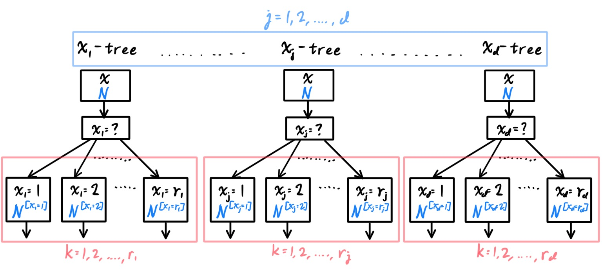
- Now, for each branching tree $N = N^{[x_j = 1]} \cup \ldots \cup N^{[x_j = r_j]}$, we can simply partition each branch $N^{[x_j = k]}$ into samples that have an output of $0$ and an output of $1$. \[N^{[x_j = k]} = N^{[x_j = k, y = 0]} \cup N^{[x_j = k, y = 1]}\] where $N^{[x_j = k, y = 0]}$ has cardinality $n^{[x_j = k, y = 0]}$ and $N^{[x_j = k, y = 1]}$ has cardinality $n^{[x_j = k, y = 1]}$. We can then simply design the tree to make the decision of $1$ if $n^{[x_j = k, y = 1]} > n^{[x_j = k, y = 0]}$ and $0$ if $n^{[x_j = k, y = 0]} > n^{[x_j = k, y = 1]}$. Let $P^{[x_j = k]}$ be the value predicted by the tree (takes values of $0$ or $1$). 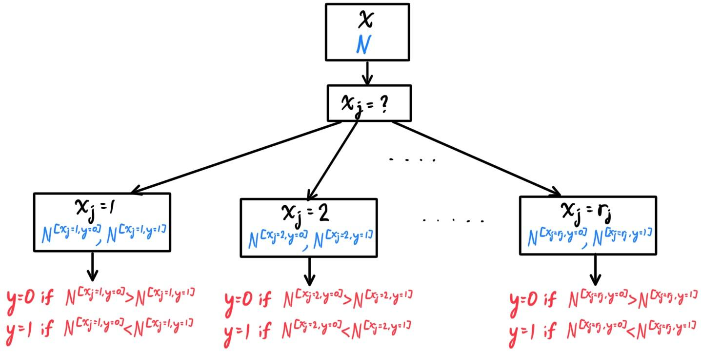
- Now, we must choose one of the $d$ possible features to split on. For each of the $j=1, \ldots d$ partition trees focusing on feature $x_j$ \[N = N^{[x_j = 1]} \cup N^{[x_j = 2]} \cup \ldots \cup N^{[x_j = r_j]}\] we first compute the number of mistakes that the $x_j$-tree (of partition focusing on feature $x_j$) had on branch $N^{[x_j = k]}$. \[\text{Mistakes on branch } N^{[x_j = k]} = n^{[x_j = k, y \neq P^{[x_j = k]}]}\] So, the total number of mistakes that the $x_j$-tree had is \[\sum_{k=1}^{r_k} n^{[x_j = k, y \neq P^{[x_j = k]}]}\] and the classification error of the $x_j$-tree is the percentage of errors that this tree has made when splitting on feature $x_j$. \[\text{ClassError}_{x_j} \equiv \frac{\text{Total Wrong Predictions}}{\text{Total Predictions}} \equiv \frac{1}{n} \sum_{k=1}^{r_k} n^{[x_j = k, y \neq P^{[x_j = k]}]}\]
- The input feature $x_j$ with the minimum classification error is therefore the feature that the tree should be split upon. That is, we should split the tree based on feature \[\text{arg}\,\min_{x_j, j = 1, \ldots, r_k} \big\{ \text{ClassError}_{x_j} \big\} = \text{arg}\,\min_{x_j, j = 1, \ldots, r_k} \bigg\{ \frac{1}{n} \sum_{k=1}^{r_k} n^{[x_j = k, y \neq P^{[x_j = k]}]} \bigg\}\]
- Now let the correct partition/split be based off of the $j^*$th feature $x_{j^*}$. So we have the decision tree created from the partition \[N = N^{[x_{j^*} = 1]} \cup N^{[x_{j^*} = 2]} \cup \ldots \cup N^{[x_{j^*} = 3]}\] Then, we can set each $N^{[x_{j^*} = k]}$ as the root and repreat steps 1~3 to find out which feature out of the rest of the features $x_1, x_2, \ldots, \hat{x_{j^*}}, \ldots, x_d$ (the hat represents that the element is excluded) we should split upon. We calculate the classification error of each further split of each of the branches and continue on.
- A branch need not be split further if at least one of these conditions are met:
- For a certain branch, all the data agrees on the output $y$ value. That is, after we have chosen the proper $x_{j^*}$ feature and constructed the partition and its corresponding tree, if it turns out that for some $k$th branch $n^{[x_{j^*} = k]}$, all of the data points have output $1$ ($n^{[x_{j^*} = k, y=1]} = n^{[x_{j^*} = k]}$ or all have output $0$ ($n^{[x_{j^*} = k, y=1]} = n^{[x_{j^*} = k]}$, then there is no more need to split since the conclusion is unambiguous (i.e. the classification error is $0$).
- If we have split through all of the possible features and there are no more features left. In this case, the prediction is simply the $y$-value that constitutes the majority of the samples in branch $N^{[x_{j^*} = k]}$.
- There are some boundary conditions that we haven't mentioned, such as what would happen if none of the splittings would decrease the classification error.
Decision Tree Learning with Real Valued Features
For cases when some of the $x_j$'s (or even the entire $\mathcal{X}$) is real-valued and continuous, the uncountability of the reals is a problem for our tree, which should have finite branches. Without loss of generality, let us assume that the first $\delta$ features
\[x_1, x_2, \ldots, x_\delta\]
is continuous and the rest of the features
\[x_{\delta+1}, x_{\delta+2}, \ldots, x_d\]
are distrete as before. So, we would have for $i = 1, \ldots, n$:
\[x^{(i)} \in \mathbb{R}^{\delta} \times \mathbb{Z}^{d - \delta}\]
It turns out that we can simply fix this problem by partitioning $\mathbb{R}$ into a bunch of smaller intervals. For simplicity, we can partition $\mathbb{R}$ into 2 intervals
\[\mathbb{R} = ( -\infty, t) \cup [t, +\infty) \]
and reclassify the continuous attributes to the pair of discrete attributes "greater than $t$" and "less than $t$," and continue on as normal. This is all great, but now we have the additional flexibility to choose the value of $t$, which can be done with the steps below for every continuous feature $x_i$ (with $1 \leq i \leq \delta$):
- With each feature $x_i$, we take its given values in the sample $x_i^{1)}, x_i^{(2)}, \ldots, x_i^{(n)} \in \mathbb{R}$. We can visualize it as a $n$ points in the real line, labeled with colors representing their corresponding output values $y^{(i)}$. 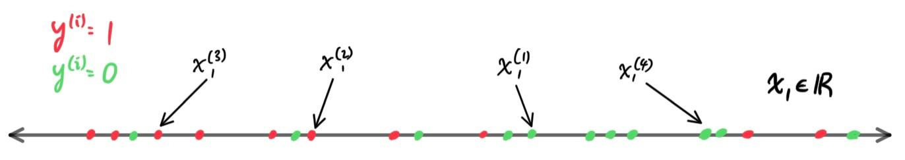
- We attempt to find the $t$ such that the classification error is minimized. That is, we would like to minimize \[\frac{1}{n} \big(\text{Number of Wrong Predictions given value of } t \big)\] which can be done easily in $O(n)$ time by plugging in $t$ into each of the spaces in between adjacent points. 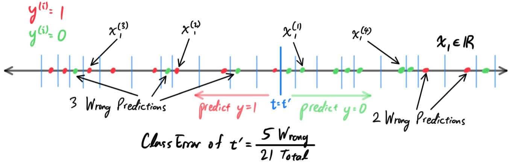
As an example, consider the target samples with 2 continuous input values $(x^{(i)}_1, x^{(i)}_2) \in \mathbb{R}^2$ along with their respective (binary) classfication outputs of either $y^{(i)} = 0$ or $1$. 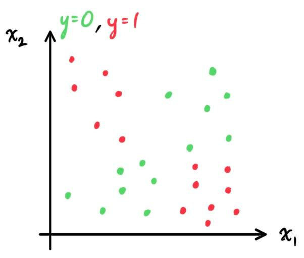 We find the optimal value $t = t_1^*$ that minimizes the classification error for the first attribute $x_1$ and classify it into the two discrete groups of "greater than $t$" and "less than $t$." This represents our first split in the tree, which we can visualize as a decision boundary in $\mathbb{R}^2$ on the left. We can also split it accordig to the second attribute $x_2$ as shown on the right, but the decision tree will choose the split with the minimum classification error and therefore $x_1$. 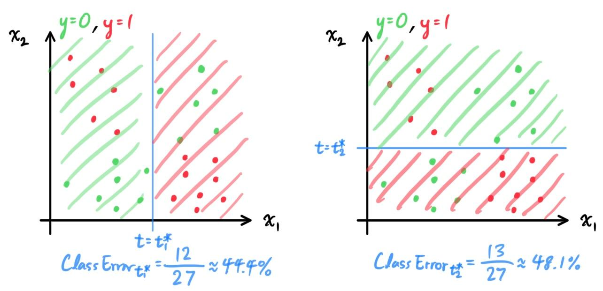 Now for each branch ("greater than $t$" and "less than $t$"), we can split it even further by finding the optimal value $t_{1, 1}^*$ and $t_{1, 2}^*$. This represents our second split in the tree (actually two splits, for each branch), which we can visualise as a decicion boundary in each half-space of $\mathbb{R}^2$. We also show on the right what would happen if the decision tree was constructed with a split on feature $x_2$ first. 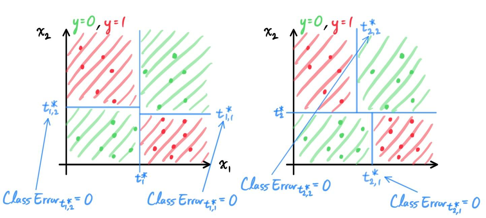
Same Features Used Multiple Times
Decision trees are flexible in the way that after a split, we can choose any feature to split upon next, even including previously used features! Let us consider the following set of data points $\big\{ (x_1^{(i)}, x_2^{(i)})\big\}_{i=1}^{31}$.
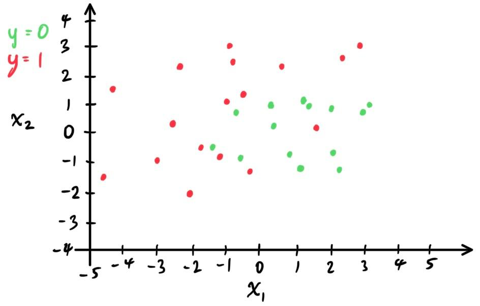
We calculate the minimum classification errors of splitting based on feature $x_1$ and feature $x_2$, and decide which one is smaller. It turns out that we should split by feature $x_1$, with decision boundary at $t_1^* = -0.07$.
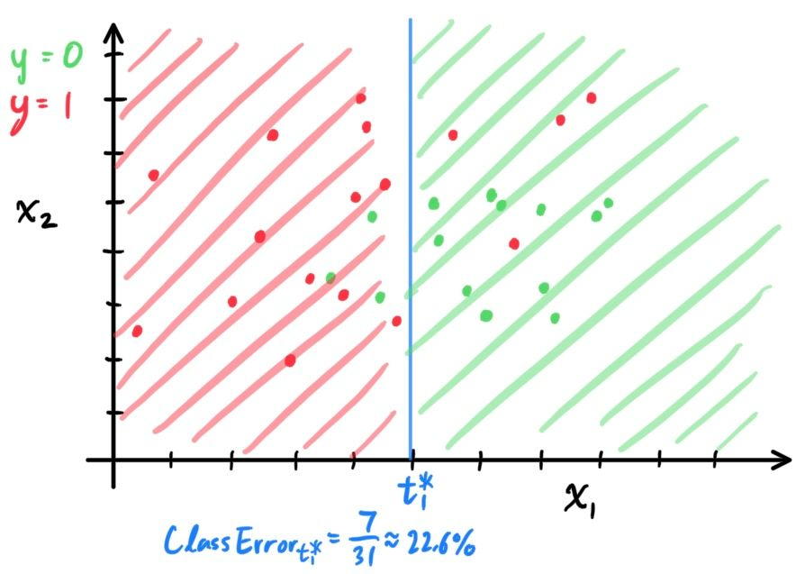
For our next split, we don't necessarily need to split by feature $x_2$ as stated before. We see that for the half-space for when $x_1 < -0.07$, we can divide it again by feature $x_1$ to get an even more detailed split, while for the half-space for when $x_1 > -0.07$, we can divide it by feature $x_2$ as normal. The decision tree would look as such:
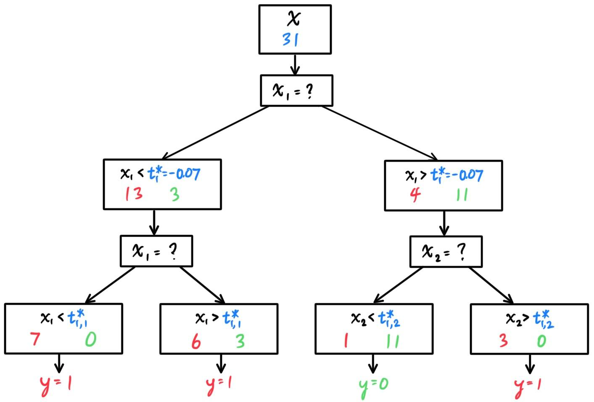
Note that dividing a space using a split doesn't necessarily mean that they must come to opposite results.
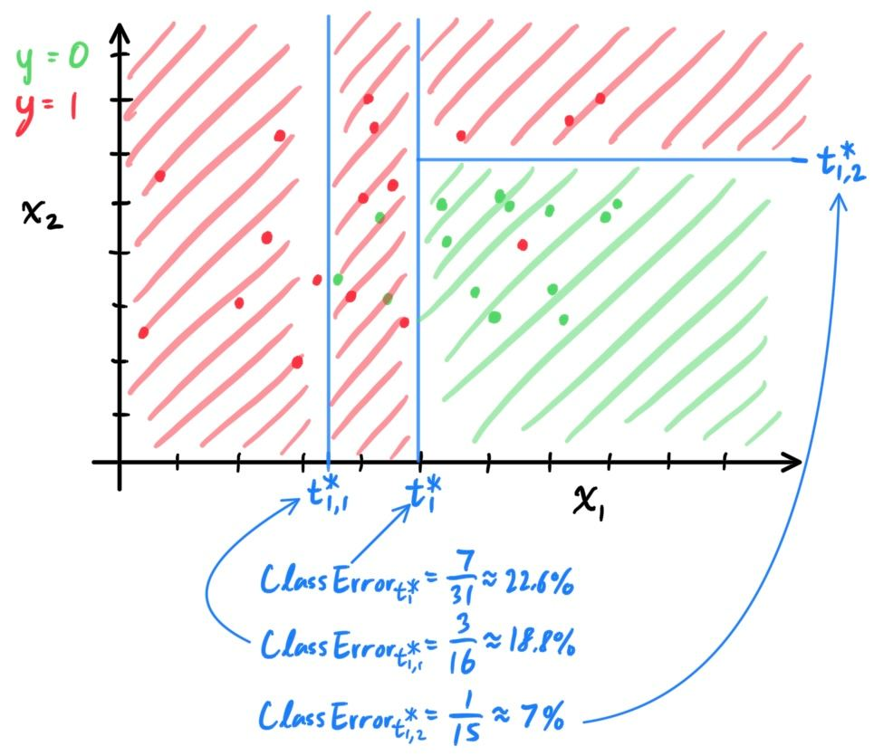
Overfitting & Pruning
It turns out that given this flexibility of choosing features already chosen before to split upon, the tree is not restricted to have a depth of at most $d$. It can become arbitrarily large, which then leads to the problem of overfitting. For the previous dataset, compare the predictions of the same decision tree model at different depths.
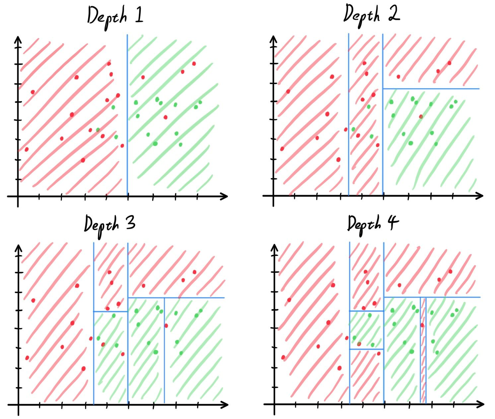
With even greater depths, the tree would be too complicated and most likely lose its accuracy. Therefore, we can set some extra conditions that terminate the tree construction early:
- We have the tree construciton terminate once it reaches a certain maximum depth. This is simple and can be effective, but it is hard to find out when to stop, i.e. get this optimal value.
- The tree will not split during conditions that do not cause a sufficient decrease in classification. This is good to stop useless splits, but sometimes we may miss out on good splits that come right after these useless splits (e.g. in the samples of the previous subsection).
- We do not split an intermediate node which contains too few data points.
- $L(T)$ is defined as the number of leaf nodes. It is a measure of the tree's complexity. The higher $L$ is, the more complicated $T$ is.
- $\text{Error}(T)$ is defined as the number of classification errors the tree makes.
- Construct the entire tree, with whatever early-stopping conditions assigned.
- Choose a node at the bottom of the tree $T$ that had been split into two leaf-nodes.
- Calculate the total cost $\mathcal{C}(T)$.
- Now assume that we did not split on the chosen node (i.e. the tree classified all elements of that node to whatever the majority $y$-value was), and call this smaller tree $T_{\text{smaller}}$. Compute $\mathcal{C}(T_{\text{smaller}})$.
- Do one of the following:
- If $\mathcal{C}(T) > \mathcal{C}(T_{\text{smaller}})$, then prune the tree (since the cost has been reduced upon pruning).
- If $\mathcal{C}(T) \leq \mathcal{C}(T_{\text{smaller}})$, then do not prune the tree (since the cost is increased upon pruning).
- Let the resulting tree be $T$.
- Repeat steps 2~6 with a different bottom node, and terminate if we have gone through all nodes. If no nodes are available in the bottom row then go up the tree.
K-Means Clustering
[Hide]
The simplest type of unsupervised learning is clustering. In the clustering problem, we are given a training set of unlabeled data
\[\{ x^{(1)}, x^{(2)}, \ldots, x^{(n)}\}\]
(remember, this is not the same as $\{(x^{(i)}, y^{(i)})\}$ since it has no $y^{(i)}$'s!) and want to group the data into a few cohesive "clusters."
- Determine the number of clusters that we want to find and set it as $k$ (this can be a disadvantage if we do not know how many clusters we are looking for beforehand).
- We initialize the cluster centroids $\mu_1, \mu_2, \ldots, \mu_k \in \mathbb{R}^d$ randomly or by some other method.
- The next part takes the centroids and moves them to the center of each cluster accordingly. The following two steps are repeated until convergence (and convergence is guaranteed):
- We assign each training sample $x^{(i)}$ to the closest cluster centroid $\mu_j$. That is, for every $i = 1, \ldots, n$, set \[c^{(i)} \equiv \text{arg}\; \min_j || x^{(i)} - \mu_j ||^2 \] where this $\text{argmin}$ function returns the input to a function that yields the minimum (in this case, the number $j$ that yields the minimum value of $|| x^{(i)} - \mu_j ||^2$ for each $i$).
- We move each training cluster centroid $\mu_j$ to the mean of the points assigned to it. That is, for each $j = 1, \ldots, k$, set \[\mu_j \equiv \frac{\sum_{i=1}^n 1\{c^{(i)} = j\}\, x^{(i)}}{\sum_{i=1}^n 1 \{c^{(i)} = j\}}\]
Mixture of Gaussians & Expectation Maximization Algorithm
[Hide]Mixture of Gaussians Algorithm: Construction
Given a training set $\{x^{(i)}\}_{i=1}^n$ (without the $y$-labels and so in the unsupervised setting), there are some cases where it may seem like we can fit multiple Gaussian distributions in the input space $\mathcal{X}$. For example, the points below seem like they can be fitted well with 3 Gaussians.
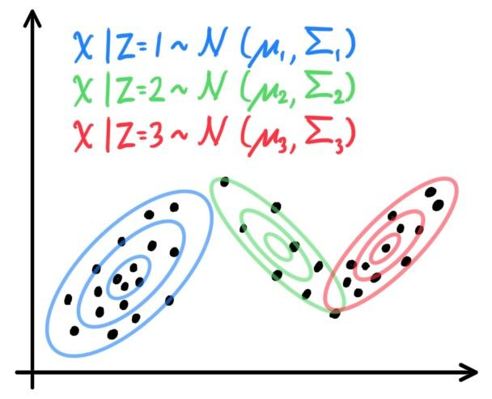
Therefore, we can construct a best-fit model as a composition of a multinomial distribution (to decide which one of the Gaussians $x$ should follow) followed by a Gaussian. That is, to find the distribution of $x$ and get the density function $p(x)$, we condition it on the random variable $Z$. More specifically, we let
\[Z \sim \text{Multinomial}(\phi), \;\;\;\;\;\; \phi = \begin{pmatrix} \phi_1 \\ \phi_2 \\ \ldots \\ \phi_k \end{pmatrix} \text{ such that } \sum_{i=1}^k \phi_i = 1\]
and define the conditional distributions as
\begin{align*}
X \,|\, Z = 1 & \sim \mathcal{N}(\mu_1, \Sigma_1) \\
X \,|\, Z = 2 & \sim \mathcal{N}(\mu_2, \Sigma_2) \\
\ldots & \sim \ldots \\
X \,|\, Z = j & \sim \mathcal{N}(\mu_j, \Sigma_j) \\
\ldots & \sim \ldots \\
X \,|\, Z = k & \sim \mathcal{N}(\mu_k, \Sigma_k)
\end{align*}
Therefore, our model says that each $x^{(i)}$ was generated by randomly choosing $z^{(i)}$ from $\{1, \ldots, k\}$ according to some multinomial, and then the $x^{(i)}$ was drawn from one of the $k$ Gaussians depending on $z^{(i)}$. This model is called the mixture of Gaussians model.
The parameters of our model are:
- The vector $\phi \in \mathbb{R}^k$ (which really has $k-1$ parameters) characterizing the multinomial distribution.
- The set of vectors $\mu_1, \mu_2, \ldots, \mu_k$ representing the mean vectors of each multivariate Gaussian. For simplicity, we'll denote this set of vectors as $\mathbf{\mu}$.
- The set of symmetric, positive-definite matrices $\Sigma_1, \Sigma_2, \ldots, \Sigma_k$ representing the covariance matrices of each multivariate Gaussian. For simplicity, we'll denote this set of matrices as $\mathbf{\Sigma}$.
If we did know the values of the hidden variables $z^{(i)}$ (i.e. if we knew which of the $k$ Gaussians each $x^{(i)}$ was generated from), then our log likelihood function would be much more simple since now, our givens will be both $x^{(i)}$ and $z^{(i)}$. Therefore, we don't have to condition on the $z^{(i)}$ and can directly calculate the log of the probability of us having sample values $(z^{(1)}, x^{(1)}), (z^{(2)}, x^{(2)}), \ldots, (z^{(n)}, x^{(n)})$. \begin{align*} l(\phi, \mathbf{\mu}, \mathbf{\Sigma}) & = \sum_{i=1}^n \log \, p\big( x^{(i)}; \, \phi, \mathbf{\mu} ,\mathbf{\Sigma}\big) \\ & = \sum_{i=1}^n \log\, p\big( x^{(i)}, z^{(i)}; \, \phi, \mathbf{\mu} ,\mathbf{\Sigma}\big) \\ & = \sum_{i=1}^n \log\, p\big( x^{(i)}\,|\, z^{(i)};\, \mathbf{\mu}, \mathbf{\Sigma}) \; p\big( z^{(i)};\, \phi \big) \end{align*} This model, with known $z^{(i)}$'s, is basically the GDA model, which is easy to calculate. That is, the maximum values of $\phi, \mathbf{\mu}, \mathbf{\Sigma}$ are: \begin{align*} \phi_j & = \frac{1}{n} \sum_{i=1}^n 1\{ z^{(i)} = j\} \\ \mu_j & = \frac{\sum_{i=1}^n 1 \{z^{(i)} = j\}\, x^{(i)}}{\sum_{i=1}^n 1 \{z^{(i)} = j\}} \\ \Sigma_j & = \frac{1}{\sum_{i=1}^n 1 \{z^{(i)} = j\}} \sum_{i=1}^n 1 \{z^{(i)}\}\, \big( x^{(i)} - \mu_j \big)\,\big(x^{(i)} - \mu_j \big)^T \end{align*} for $j = 1, \ldots, d$.
But since we do not know the values of $z^{(i)}$, we first try to "guess" the values of the $z^{(i)}$'s and then update the parameters of our model assumping our guesses are correct. Let us clarify some notation:
- The distribution that we will iteratively reassign over and over again is $Z$, with density $p_Z (z)$ that maps $z \mapsto \phi_z$, where $\phi$ is a vector that represents the density. The algorithm will initialize $p_Z$ and have it converge to the true multinomial density. Note that $Z$ in this context could represent the true multinomial distribution $Z$ or could represent the distributions iteratively produced by the algorithm that should converge onto the true $Z$ (usually the latter).
- The $k$ Gaussian distributions that we will iteratively reassign over and over again is $\mathcal{N}_1, \mathcal{N}_2, \ldots, \mathcal{N}_k$, with densities $p_{\mathcal{N}_1}(x), \ldots, p_{\mathcal{N}_k}(x)$ that maps $x \mapsto p_{\mathcal{N}_j}(x)$.
- The distribution of the entire random variable $X$ will have density $p_X(x)$. Since we are iteratively reassigning the densities $p_Z$ and $p_{\mathcal{N}_j}$, this joint distribution of $X$ will also get modified.
- We initialize our values of $\theta$, which can be chosen randomly or by K-means initialization (not explained here).
- We can randomly assign our values of $\mu_j$'s and the $\Sigma_j$'s in $\mathbb{R}^d$.
- We can randomly assign the density of our guess multinomial $p_Z (z)$, represented by vector \[\phi = \begin{pmatrix} \phi_1 \\ \vdots \\ \phi_k \end{pmatrix} \text{ with } \sum_{j=1}^k \phi_j = 1 \] where $p_Z (z) \equiv \phi_z$ for $z = 1, \ldots, k$.
- (E Step) Now that we have our prior guess of what $Z$ and its density function $p_Z$ is, we can calculate its posterior density function by taking one obvserved example $x^{(i)}$ and modifying $p_Z$ to $p_Z^{(i)}$. This superscript $(i)$ on the distribution $p_Z$ indicates that this is a posterior density created from observing $x^{(i)}$. (The motivation for this construction is explained more specifically in the next section involving Jensen's inequality.) Using Bayes' rule, we should calcualte $n$ density functions
\[p_Z^{(i)} (z) \equiv p_Z (z\,|\, x^{(i)}; \phi, \mathbf{\mu}, \mathbf{\Sigma}) \text{ for } i = 1, \ldots, n\]
For easier notation, we let $\phi^{(i)}$ be the vector representation of the density $p_Z^{(i)}$. That is,
\[\phi^{(i)} = \begin{pmatrix} \phi_1^{(i)} \\ \vdots \\ \phi_k^{(i)} \end{pmatrix} \text{ with } \sum_{j=1}^k \phi_j^{(i)} = 1 \]
where $p_Z^{(i)} (z) \equiv \phi^{(i)}_z$ for $z = 1, \ldots, k$ and $0$ otherwise. Then, we can calculate $\phi^{(i)}$ (and therefore $p_Z^{(i)}$) component-wise by calculating each $\phi_j^{(i)}$ (which is the probability of a point being in the $j$th cluster, given that we observe example $x^{(i)}$):
\begin{align*}
\phi_j^{(i)} & = p_Z^{(i)} \big(z = j;\, \phi, \mathbf{\mu}, \mathbf{\Sigma} \big) \\
& = p_Z \big(z = j\,|\, x^{(i)}; \, \phi, \mathbf{\mu}, \mathbf{\Sigma} \big) \\
& = \frac{p_{\mathcal{N}_j} \big(x^{(i)}\,|\,z^{(i)} = j; \, \mathbf{\mu}, \mathbf{\Sigma}\big) \; p_Z \big(z^{(i)} = j;\, \phi \big)}{p_X \big(x^{(i)};\, \phi, \mathbf{\mu}, \mathbf{\Sigma}\big)} \\
& = \frac{p_{\mathcal{N}_j} \big(x^{(i)}\,|\,z^{(i)} = j; \, \mathbf{\mu}, \mathbf{\Sigma}\big) \; p_Z \big(z^{(i)} = j;\, \phi \big)}{\sum_{l=1}^k p_{\mathcal{N}_j} \big( x^{(i)}\,|\, z^{(i)} = l;\, \mathbf{\mu}, \mathbf{\Sigma} \big)\; p_Z \big(z^{(i)} = l; \,\phi\big)}
\end{align*}
Note that we have everything we need to calculate the posterior probability distribution $p_Z^{(i)}(z)$ of a point being in any cluster.
- $p_{\mathcal{N}_j}(x^{(i)}\,|\, z^{(i)} = j)$ represents the conditional Gaussian density, which is completely defined because the parameters $\mu_j, \Sigma_j$ are already defined in initialization.
- $p_Z (z^{(i)} = j; \phi)$ is really just the probability $\phi_j$ that a given point is in the $j$th cluster, which we've also defined in initialization.
- $p_X (x^{(i)})$ represents the distribution of the entire random variable $X$ of the entire training set. Knowing the first two and taking the sum gives this density function $p_X$.
Let us elaborate further on the intuition of this step. In the normal GDA with given values of $z^{(i)}$, we have \[\phi_j = \frac{1}{n} \sum_{i=1}^n 1 \{z^{(i)} = j \} = \frac{1}{n} \big( \text{Number of Samples in } j \text{th Gaussian}\big)\] which is a sum of "hard" guesses, meaing that each $x^{(i)}$ is undoubtedly in cluster $j$ or not, and so to find out our best guess for the true vector $\phi$, all we have to do is find out the proportion of all examples in each of the $k$ groups and we're done (without needing to iterate). However, in our EM model, we do not know the $z^{(i)}$'s, and so the best we can do is give the probability $\phi^{(i)}_j$ that $x^{(i)}$ is in cluster $j$. 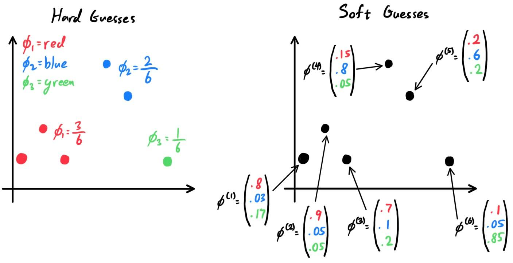 So for each point $x^{(i)}$, the model has changed from it being undoubtedly in group $z^{(i)} = j$ to it having a probability of being in $\phi^{(i)}_j$ for $j = 1, \ldots, k$. - (M Step) With these $n$ separate posterior estimates of of $Z$ for each observation $x^{(i)}$, we can simply average all of them and say that our best estimate of $\phi$ is
\[\phi = \frac{1}{n} \sum_{i=1}^n \phi^{(i)}\]
We can interpret the vectors $\phi^{(i)}$ as tuples where $\phi^{(i)}_j$ describes the expected "portion" of each sample $x^{(i)}$ to be in group $j$. So, we are adding up all the "portions" of the points that are expected to be in cluster $j$ to get $\phi_j= \sum_{i=1}^n \phi_j^{(i)}$.
Now, given the $j$th Gaussian cluster, we would like to compute its mean $\mu_j$. Since each $x^{(i)}$ has probability $\phi^{(i)}_j$ of being in cluster $j$, we can weigh each of the $n$ points by $\phi^{(i)}_j$ (which determines how "relevant" $x^{(i)}$ is to cluster $j$) and average these (already weighted) points to get our "best-guess" of the mean $\mu_j$. \[\mu_j = \frac{\sum_{i=1}^n \phi^{(i)}_j x^{(i)}}{\sum_{i=1}^n \phi_j^{(i)}}\] 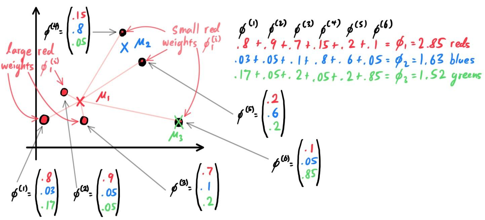 With this logic of weighted points, we finally update the covariance matrices $\Sigma_j$ as below: \[\Sigma_j = \frac{1}{\sum_{i=1}^n \phi_j^{(i)}} \sum_{i=1}^n \phi^{(i)}_j \, \big(x^{(i)} - \mu_j \big) \big(x^{(i)} - \mu_j\big)^T \] - Now, we have new values of $\phi, \mu_1, \ldots, \mu_k, \Sigma_1, \ldots, \Sigma_k$ that we can work with. With these new values, repeat steps 2 and 3 until convergence.
Mixture of Gaussians Algorithm: Summary
Given a training set $\{x^{(i)}\}_{i=1}^n \in \mathbb{R}^d$, let us assume that the random variable $X$ that these examples follow can be modeled by specifying a joint distribution of a multinomial and Gaussians.
That is, it follows a Gaussian mixture model (GMM) of $k$ Gaussian clusters. Let
- $Z$ be the multinomial distribution representing which Gaussian cluster each example $x$ falls in, with density represented by vector $\phi \in \mathbb{R}^k$ so that $\mathbb{P}(Z = j) \equiv \phi_j$.
- The set of conditional distributions \[X\,|\,Z = j \sim \mathcal{N}(\mu_j, \Sigma_j) \text{ for } j = 1, 2, \ldots, k\] are multivariate Gaussian, with mean vectors $\mu_1, \ldots, \mu_k$ and covariance matrices $\Sigma_1, \ldots, \Sigma_k$.
- Initialize the multinomial vector $\phi$, the $\mu_j$'s, and the $\Sigma_j$'s.
- (E Step) Calculate the $n$ vectors \[\phi^{(i)} = \begin{pmatrix} \phi_1^{(i)} \\ \vdots \\ \phi_k^{(i)} \end{pmatrix} \text{ for all } i = 1, \ldots, n\] that represent the posterior distribution of $Z$ given observed $x^{(i)}$ by computing \begin{align*} \phi_j^{(i)} & = p_Z^{(i)} \big(z = j;\, \phi, \mathbf{\mu}, \mathbf{\Sigma} \big) \\ & = p_Z \big(z = j\,|\, x^{(i)}; \, \phi, \mathbf{\mu}, \mathbf{\Sigma} \big) \\ & = \frac{p_{\mathcal{N}_j} \big(x^{(i)}\,|\,z^{(i)} = j; \, \mathbf{\mu}, \mathbf{\Sigma}\big) \; p_Z \big(z^{(i)} = j;\, \phi \big)}{p_X \big(x^{(i)};\, \phi, \mathbf{\mu}, \mathbf{\Sigma}\big)} \\ & = \frac{p_{\mathcal{N}_j} \big(x^{(i)}\,|\,z^{(i)} = j; \, \mathbf{\mu}, \mathbf{\Sigma}\big) \; p_Z \big(z^{(i)} = j;\, \phi \big)}{\sum_{l=1}^k p_{\mathcal{N}_j} \big( x^{(i)}\,|\, z^{(i)} = l;\, \mathbf{\mu}, \mathbf{\Sigma} \big)\; p_Z \big(z^{(i)} = l; \,\phi\big)} \end{align*}
- (M Step) Reassign the value of $\theta$ as \begin{align*} \phi & = \frac{1}{n} \sum_{i=1}^n \phi^{(i)} \\ \mu_j & = \frac{\sum_{i=1}^n \phi_j^{(i)} x^{(i)}}{\sum_{i=1}^n w_j^{(i)}} \text{ for } j = 1, \ldots, n \\ \Sigma_j & = \frac{1}{\sum_{i=1}^n \phi_j^{(i)}} \sum_{i=1}^n \phi^{(i)}_j \, \big(x^{(i)} - \mu_j \big) \big(x^{(i)} - \mu_j\big)^T \text{ for } j = 1, \ldots, n \end{align*}
- Repeat steps 2 and 3 until convergence.
EM Algorithm for General Estimation Problems: Construction
Recall Jensen's Inequality: Given a convex function $f: \mathbb{R} \longrightarrow \mathbb{R}$ (meaning that $f^{\prime\prime} (x) \geq 0$ for all $x$) and a random variable $X$, we have
\[\mathbb{E}\big(f(X)\big) \geq f\big(\mathbb{E}(X)\big) \]
Moreover, if $f$ is strictly convex, then $\mathbb{E}\big( f(X)\big) = f\big(\mathbb{E}(X)\big)$ holds true if and only if $X = \mathbb{E}(X)$ with probability $1$ (i.e. if $X$ is a constant).
Suppose we have an estimation problem given the training set $\{x^{(i)}\}_{i=1}^n$. We have latent variable model $p(x, z; \theta)$ with $z$ being the latent variable of discrete, finite random variable $Z$, with density $p_Z (z)$. Let us denote the density of $X$ as $p_X$. Then, the random variable $X$ can be interpreted as us first generating $z$ from $Z$, and then computing $X\,|\,Z = z$. \[\text{Compute } X = \text{Compute } Z \text{ and then } \begin{cases} \text{Compute } X \,|\, Z = 1 \\ \text{Compute } X \,|\, Z = 2 \\ \ldots \\ \text{Compute } X \,|\, Z = k \end{cases}\] Let us clarify some notation:
- The distribution that we will iteratively reassign over and over again is $Z$, with density $p_Z$ that maps $z \mapsto \phi_z$, where $\phi$ is a vector that represents the density.
- The $k$ conditional (not necessarily Gaussian) distributions that we will iteratively reassign over and over again is $X_1, X_2, \ldots, X_k$, with densities $p_{X_1} (x), \ldots, p_{X_k} (x)$ that maps $x \mapsto p_{X_j} (x)$.
- The distribution of the entire random variable $X$ will have density $p_X (x)$. Since we are iteratively reassigning the densities $p_Z$ and $p_{X_j}$, this joint distribution of $X$ will also get modified.
- We initialize the value of $\theta$ in some way. Note that within this $\theta$ are the parametizations of the initial multinomial density $p_Z$, which is our initial "guess" of the distribution of $Z$.
- (E Step) The log likelihood of the given data $\{ x^{(i)}\}_{i=1}^n$ with respect to the parameter $\theta$ (which encodes all parameters of distribution $Z$ and all $X\,|\,Z$) is
\[l(\theta) = \sum_{i=1}^n \log\, p_X \big( x^{(i)}; \, \theta \big)\]
It turns out that explicitly finding the maximum likelihood estimates of the parameters $\theta$ is hard because it results in a difficult, non-convex optimization problem. So, we tackle this another way.
To start, we can see that the summation isn't too crucial, so we can focus on minimizing each $\log \, p_X \big(x^{(i)}; \, \theta \big)$ and summing in the end. We can calculate this by conditioning over all $j = 1, \ldots, k$ generated from $Z$ (which we have guessed to have an initial density of $p_Z$). That is, we must find for each $i = 1, 2, \ldots, n$ \begin{align*} \max_\theta \log \, p_X \big( x^{(i)}; \, \theta \big) & = \max_\theta \log \, \bigg(\sum_{j=1}^k p_X \big(x^{(i)}, Z = j; \, \theta\big) \bigg) \\ & = \max_\theta \log \bigg( \sum_{j=1}^k p_X \big( x^{(i)}\,|\, Z = j; \, \theta\big) p_Z \big( j; \, \theta \big) \bigg) \\ & = \max_\theta \log \bigg( \sum_{j=1}^k p_{X_j} \big( x^{(i)} ;\, \theta\big) p_Z \big( j; \, \theta \big) \bigg) \end{align*} To find this maximum value, we can focus on the first equality and see that by Jensen's inequality (with conCAVE, not convex, $f(x) = \log x$ over domain $x \in \mathbb{R}^+$), the following holds true for all $\theta$ and more importantly, for any arbitrary density function $p_Z^{*i}$. \begin{align*} \log p_X \big(x^{(i)};\, \theta\big) & = \log \bigg( \sum_{j=1}^k p_X \big(x^{(i)}, Z = j;\, \theta \big) \bigg) \\ & = \log \bigg( \sum_{j=1}^k p_Z^{*i} \big(j \big)\, \frac{p_X \big(x^{(i)}, Z = j;\, \theta \big)}{p_Z^{*i} \big(j \big)} \bigg) \\ & = \log \Bigg(\mathbb{E}_{j \sim p_Z^{*i}} \bigg( \frac{p(x^{(i)}, Z = j; \, \theta)}{p_Z^{*i} \big(j \big)}\bigg)\Bigg) \\ & \geq \mathbb{E}_{j \sim p_Z^{*i}} \Bigg( \log \bigg( \frac{p(x^{(i)}, Z = j; \, \theta)}{p_Z^{*i} \big(j \big)} \bigg) \Bigg) \\ & = \sum_{j=1}^k p_Z^{*i} (j) \, \log\bigg( \frac{p(x^{(i)}, Z = j; \, \theta)}{p_Z^{*i} (j)} \bigg) = \text{ELBO} \big( x^{(i)}; \,p_Z^{*i}, \theta \big) \end{align*} The final term, called the evidence lower bound (ELBO), is just the expectation of $\log \frac{p(x^{(i)}, Z = j; \, \theta)}{p_Z^{*i} (j)}$ with respect to $j$ drawn from density $p_Z^{*i}$, which is denoted with $\mathbb{E}_{j \sim p_Z^{*i}}$.
Summing over all $n$ examples, we have a lower bound for the entire log likelihood for any set of density functions $p_Z^{*1}, p_Z^{*2}, \ldots, p_Z^{*n}$: \begin{align*} l(\theta) = \sum_{i=1}^n \log p(x^{(i)}; \, \theta) & \geq \sum_{i=1}^n \text{ELBO}(x^{(i)}; \, p_Z^{*i}, \theta) \\ & = \sum_{i=1}^n \sum_{j=1}^k p_Z^{*i} (j) \, \log\bigg( \frac{p(x^{(i)}, Z = j; \, \theta)}{p_Z^{*i} (j)} \bigg) \end{align*} Our job now is to choose the correct density functions $p_Z^{*i}$'s such that the lower bound is maximized. It turns out that we can do even better: equality is satisfied if and only if we set \begin{align*} p_Z^{*i} (j) & \equiv p_Z \big( j\,|\, x^{(i)}; \, \theta \big) \\ & \equiv p_Z^{(i)} \big( j; \, \theta \big) \text{ for all } i = 1, 2, \ldots, n \end{align*} which is simply the posterior distribution of the multinomial given the observed sample $x^{(i)}$, which we can easily calculate using Bayes' rule. Substituing this into $p_Z^{*i}$ leads to the equality \begin{align*} l(\theta) = \sum_{i=1}^n \log p (x^{(i)}; \, \theta) & = \sum_{i=1}^n \text{ELBO}\big(x^{(i)}; p_Z^{(i)}, \, \theta \big) \\ & = \sum_{i=1}^n \sum_{j=1}^k p_Z^{(i)} \big( j; \, \theta \big) \, \log\bigg( \frac{p(x^{(i)}, Z = j; \, \theta)}{p_Z^{(i)} \big( j; \, \theta \big)} \bigg) \\ & = \sum_{i=1}^n \sum_{j=1}^k p_Z \big( j\,|\, x^{(i)}; \, \theta \big) \, \log\bigg( \frac{p(x^{(i)}, Z = j; \, \theta)}{p_Z \big( j\,|\, x^{(i)}; \, \theta \big)} \bigg) \end{align*} In summary, this E step has taken the log-likelihood function $l(\theta)$ (representing (the log of) the probability of all the $x^{(i)}$'s landing where they are given the parameters $\theta$), which is abstract and hard-to-optimize, and converted it into an equivalent form as the sum of a bunch of ELBO functions optimized with the density parameters begin assigned $p_Z^{*i} = p_Z^{(i)}$.
But remember that these optimal densities $p_Z^{*i} = p_Z^{(i)}$ make the right and left hand side equivalent only for a fixed value of $\theta$! So, the right hand side is only equivalent to $l(\theta)$ only for that one value of $\theta$, but as soon as we set $\theta$ to something else, the right hand side evaluated with $p_Z^{*i} = p_Z^{(i)}$ are not equal. - (M Step) Since we have found some equivalent form of $l(\theta)$ for the fixed $\theta$ that was initialized, we can now just maximize the right hand side with respect to $\theta$, while fixing the $p_Z^{*i} = p_Z^{(i)}$'s. Therefore, we find and set the value of $\theta$ as \begin{align*} \theta & = \text{arg}\; \max_\theta \sum_{i=1}^n \text{ELBO} \big( x^{(i)}; \, p_Z^{(i)}, \theta \big) \\ & = \text{arg}\; \max_\theta \sum_{i=1}^n \sum_{j=1}^k p_Z^{(i)} (j)\; \log \bigg( \frac{p(x^{(i)}, Z = j; \, \theta)}{p_Z^{(i)} (j)} \bigg) \\ & = \text{arg}\; \max_\theta \sum_{i=1}^n \sum_{j = 1}^k p_Z \big(j\,|\, x^{(i)}; \, \theta \big)\, \log \bigg( \frac{p(x^{(i)}, Z = j; \, \theta)}{p_Z \big(j\,|\, x^{(i)}; \, \theta \big)} \bigg) \end{align*} In the case where the parameter $\theta$ consist of $\phi, \mu_1, \ldots, \mu_k, \Sigma_1, \ldots, \Sigma_k$ like in the GMM model, it happens so that the maximum is found by computing $\phi$ to be the average of the $\phi^{(i)}$'s, each $\mu_j$ to be the weighed averages of the points, and each $\Sigma_j$ as the equation above. For other distributions, the formula for the maximum must be mathematically found (or algorithmically computed) with respect to parameter $\theta$.
- We have now reassigned the entire value of $\theta$, meaning that the parameters representing our guess of density $p_Z$ of $Z$ has also been modified. With this new value of $\theta$, we repeat steps 2 and 3 until convergence.
EM Algorithm for General Estimation Problems: Summary
Given a trainining set $\{x^{(i)}\}_{i=1}^n \in \mathbb{R}^d$, let us assume that the random variable $X$ that these examples follow can be modeled by specifying a joint distribution of a multinomial and some arbitrary distributions. Let there be $k$ clusters, and let
- $Z$ be the multinomial distribution representing which Gaussian cluster each example $x$ falls in, with density $p_Z (j)$ and represented by vector $\phi \in \mathbb{R}^k$ so that $\mathbb{P}(Z = j) = \phi_j$. Let the parameters of $\phi$ be encoded in $\theta$.
- The set of conditional distributions \[X\,|\,Z = j \sim X_j \text{ for } j = 1, 2, \ldots, k\] are arbitrary distributions with some parameters, also all encoded in $\theta$.
- Initialize $\theta$.
- (E Step) Since $l(\theta)$ is bounded below for all $p_Z^{*1}, \ldots, p_Z^{*n}$ as \[l(\theta) \equiv \sum_{i=1}^n \log p\big( x^{(i)}; \, \theta\big) \geq \sum_{i=1}^n \text{ELBO}\big( x^{(i)}; \, p_Z^{*i}, \theta\big)\] setting $p_Z^{*i} (j) = p_Z^{(i)} (j) = p_Z \big(j\,|\, x^{(i)}; \, \theta\big)$ for all $i = 1, \ldots, n$ would put $l$ into a new form for these specific fixed values of $p_Z^{*i}$. \[l(\theta) = \sum_{i=1}^n \text{ELBO}\big(x^{(i)}; p_Z^{(i)}, \theta \big)\]
- (E Step) We maximize this equivalent form of $l(\theta)$ with respect to $\theta$ whilst fixing the choice of $p_Z^{(i)}$. That is, we set the value of $\theta$ as \begin{align*} \theta & = \text{arg}\; \max_\theta \sum_{i=1}^n \text{ELBO} \big( x^{(i)}; \, p_Z^{(i)}, \theta \big) \\ & = \text{arg}\; \max_\theta \sum_{i=1}^n \sum_{j=1}^k p_Z^{(i)} (j)\; \log \bigg( \frac{p(x^{(i)}, Z = j; \, \theta)}{p_Z^{(i)} (j)} \bigg) \\ & = \text{arg}\; \max_\theta \sum_{i=1}^n \sum_{j = 1}^k p_Z \big(j\,|\, x^{(i)}; \, \theta \big)\, \log \bigg( \frac{p(x^{(i)}, Z = j; \, \theta)}{p_Z \big(j\,|\, x^{(i)}; \, \theta \big)} \bigg) \end{align*}
- We have successfully updated $\theta$. Now, we repeat steps 2 and 3 until convergence. Step 2 can bring improvements because we have changed the $\theta$, which means that there is a new sum of ELBO functions of the $\theta$ that serves as a new lower bound.
Factor & Principal Component Analysis
[Hide]
When we have data $\{x^{(i)}\}_{i=1}^n \in \mathbb{R}^d$ that comes from a mixture of several Gaussians, the EM algorithm can be applied to fit a mixture model.
Given that we have a set of $n$ datapoints in $\mathbb{R}^d$, it may be the case that $d$ is extremely high-dimensional (e.g. due to the construction of a feature map representing a high-degree polynomial). More specifically, we will consider the case of the data lying in some lower dimensional affine subspace. Trying to model the $n$ data points that span only a low-dimensional subspace of $\mathbb{R}^d$ as Gaussians presents some problems since the covariance matrix
\[\Sigma = \frac{1}{n} \sum_{i=1}^n \big( x^{(i)} - \mu \big) \big( x^{(i)} - \mu \big)^T \]
is singular, which means that $\Sigma^{-1}$ does not exist and therefore cannot be used to calculate the density of a multivariate Gaussian distribution. Generally, GMM works when $n$ exceeds $d$ by some "reasonable" amount.
Suppose we are given a dataset $\{x^{(i)}\}_{i=1}^n \in \mathbb{R}^d$ of $d$ attributes, but unknownst to us, some of these attributes, say $x_{i_1}, x_{i_2}, \ldots$, are linearly dependent (e.g. one describes the speed of vehicles in mph while the other is in kph, etc.). Therefore, these data points really lie approximately on some $p$-dimensional linear subspace. Additionally, this algorithm identifies some sort of orthogonal basis $u_1, u_2, \ldots, u_p$ for the subspace, which are called the principal components of the data $\{x^{(i)}\}_{i=1}^n$. We show a few examples of data points in the full attribute space below and how they can be projected into some optimal linear subspace, along with its principal components. Colloquially, we can say that by projecting the $n$ points to this subspace, the $d$ attributes have been "combined" into a smaller set of $p$ orthogonal attributes. Looking at the visual above, we can say that:
Colloquially, we can say that by projecting the $n$ points to this subspace, the $d$ attributes have been "combined" into a smaller set of $p$ orthogonal attributes. Looking at the visual above, we can say that:
Factor Analysis Model
In the factor analysis model, we assume that each point $x^{(i)}$ is created by generating a point lying in a $k$-dimensional affine space, and then embedding it into the higher dimensional $\mathbb{R}^d$ with some noise added. That is, we model this with a joint distribution $(x, z)$ as follows, with $z \in \mathbb{R}^k$ is a latent random variable.
\begin{align*}
z & \sim \mathcal{N}_k (0, I) \\
x\,|\,z & \sim \mathcal{N}_d (\mu + \Lambda z, \Psi)
\end{align*}
We can imagine that each datapoint $x^{(i)}$ is generated by sampling from a $k$-dimensional multivariate Gaussian to get $z^{(i)} \in \mathbb{R}^k$. Then, it is linearly mapped (in fact, embedded) into a $d$-dimensional affine space of $\mathbb{R}^d$ by computing $\mu + \Lambda z^{(i)}$ (note that $\Lambda \in \text{Mat}(d \times k, \mathbb{R})$). Lastly, $x^{(i)}$ is generated by adding covariance noise $\Psi$ to $\mu + \Lambda z^{(i)}$. In full generality, we would let $\Psi$ be any symmetric, positive-definite matrix, but in this model, we simplify it by restricting it to be diagonal (takes the shape of an ellipse with its axes aligned with the coordinate axes). Remember that
- $d$ and $k$ are givens.
- $\mu \in \mathbb{R}^d$ ($d$-dimensional), the matrix $\Lambda \in \text{Mat}(d \times k, \mathbb{R})$ ($dk$-dimensional), and the diagonal matrix $\Psi \in \text{Mat}(d \times d, \mathbb{R})$ ($d$-dimensional) are the parameters that we must optimize.
- By definition of $z$, we have \[\Sigma_{zz} = \text{Cov}(z) = I\]
- To find $\Sigma_{zx}$, we have \begin{align*} \Sigma_{zx} = \mathbb{E} \big( (z - \mathbb{E}z) (x - \mathbb{E}x)^T \big) & = \mathbb{E} \big( z \, (\mu + \Lambda z + \epsilon - \mu)^T \big) \\ & = \mathbb{E} (z z^T) \, \Lambda^T + \mathbb{E} ( z \epsilon^T) \\ & = \Lambda^T \end{align*}
- Since $\Sigma$ should be symmetric, we have $\Sigma_{xz} = \Lambda$.
- To find $\Sigma_{xx}$, we have \begin{align*} \Sigma_{xx} = \mathbb{E} \big( (x - \mathbb{E}x) (x - \mathbb{E}x)^T \big) & = \mathbb{E} \big( (\mu + \Lambda z + \epsilon - \mu) (\mu + \Lambda z + \epsilon - \mu)^T \big) \\ & = \mathbb{E} \big( \Lambda zz^T \Lambda^T + \epsilon z^T \Lambda^T + \Lambda z \epsilon^T + \epsilon \epsilon^T\big) \\ & = \Lambda \mathbb{E} (zz^T) \Lambda^T + \mathbb{E}(\epsilon \epsilon^T) \\ & = \Lambda \Lambda^T + \Psi \end{align*}
EM for Factor Analysis
Looking back on our general EM algorithm, we know that $l$ is bounded below by
\begin{align*}
l(\mu, \Lambda, \Psi) & \geq \sum_{i=1}^n \text{ELBO} \big( x^{(i)}, p_Z^{*i};\, \mu, \Lambda, \Psi \big) \\
& = \sum_{i=1}^n \sum_{j=1}^k p_Z^{*i} (j) \,\log \bigg( \frac{p(x^{(i)}, \, Z = j;\, \mu, \Lambda, \Psi)}{p_Z^{*i} (j)} \bigg)
\end{align*}
But since the distribution of $z$ is not a discrete multinomial, but rather continuous, we use an integral rather than a summation to represent the expectation.
\[l(\mu, \Lambda, \Psi) \geq \sum_{i=1}^n \int_{z^{(i)} \in \mathbb{R}^k} p_Z^{*i} \big( z^{(i)} \big) \; \log \bigg( \frac{p(\big( x^{(i)}, z^{(i)}; \, \mu, \Lambda, \Psi\big)}{p_Z^{*i} \big(z^{(i)} \big)} \bigg) \, dz^{(i)}\]
Since we have found out that the density $p_Z^{*i} \big( z^{(i)}\big) = p_Z \big( z^{(i)}\,|\, x^{(i)}; \mu, \Lambda, \Psi \big)$ satisfies equality, all we need to do is define the density of random variable $z^{(i)}\,|\,x^{(i)}$. We can calculate that the conditional distribution of a Gaussian is Gaussian; more specifically
\[z^{(i)}\,|\,x^{(i)} \sim \mathcal{N} \big( \mu_{z^{(i)}|x^{(i)}}, \Sigma_{z^{(i)}|x^{(i)}} \big) \text{ with } \begin{cases}
\mu_{z^{(i)}|x^{(i)}} & = \Lambda^T (\Lambda \Lambda^T + \Psi)^{-1} (x^{(i)} - \mu) \\
\Sigma_{z^{(i)}|x^{(i)}} & = I - \Lambda^T (\Lambda \Lambda^T + \Psi)^{-1} \Lambda
\end{cases}\]
and therefore we can explicitly write the optimal densities $p_Z^{(i)}$ as:
\[p_Z^{(i)} \big( z^{(i)}\big) = \frac{1}{(2\pi)^{k/2} |\Sigma_{z^{(i)}|x^{(i)}}|^{1/2}} \; \exp \bigg( -\frac{1}{2} ( z^{(i)} - \mu_{z^{(i)}|x^{(i)}}) \Sigma^{-1}_{z^{(i)}|x^{(i)}} (z^{(i)} - \mu_{z^{(i)}|x^{(i)}}) \bigg)\]
and substituting this below, we must maximize
\[l(\mu, \Lambda, \Psi) = \sum_{i=1}^n \int_{z^{(i)} \in \mathbb{R}^k} p_Z^{(i)} (z^{(i)})\; \log \bigg( \frac{p(\big( x^{(i)}, z^{(i)}; \, \mu, \Lambda, \Psi\big)}{p_Z^{(i)} \big(z^{(i)} \big)} \bigg) \, dz^{(i)} \]
with respect to $\mu, \Lambda$, and $\Psi$. The $M$-step requires updating the three parameters accordingly (derivation is excluded for brevity):
- The optimal $\mu$ is simply calculated as \[\mu = \frac{1}{n} \sum_{i=1}^n x^{(i)}\] Unlike the other parameters, it does not need to be updated and can therefore be calculated just once.
- The optimal $\Lambda$ is calculated \begin{align*} \Lambda & = \bigg( \sum_{i=1}^n \big( x^{(i)} - \mu \big) \, \mathbb{E}_{z^{(i)} \sim p_Z^{(i)}} \big( z^{(i) T}\big)\bigg) \bigg( \sum_{i=1}^n \mathbb{E}_{z^{(i)} \sim p_Z^{(i)}} \big( z^{(i)} z^{(i) T}\big) \bigg)^{-1} \\ & = \bigg( \sum_{i=1}^n \big( x^{(i)} - \mu \big)\, \mu^T_{z^{(i)}|x^{(i)}} \bigg) \bigg( \sum_{i=1}^n \mu_{z^{(i)}|x^{(i)}} \, \mu_{z^{(i)}|x^{(i)}}^T + \Sigma_{z^{(i)}|x^{(i)}} \bigg)^{-1} \end{align*}
- The optimal $\Psi$ can be computed by first computing \[\Phi = \frac{1}{n} \sum_{i=1}^n x^{(i)} x^{(i)\,T} - x^{(i)} \mu_{z^{(i)}|x^{(i)}}^T \Lambda^T - \Lambda \mu_{z^{(i)}|x^{(i)}} x^{(i)\,T} + \Lambda \big( \mu_{z^{(i)}|x^{(i)}} \mu_{z^{(i)}|x^{(i)}}^T + \Sigma_{z^{(i)}|x^{(i)}} \big) \, \Lambda^T\] and setting $\Psi_{ii} = \Phi_{ii}$ as the diagonal entries. (Remember that we have designed this model to have a simplified covariance matrix that is diagonal, rather than the full covariance matrix.)
Principle Component Analysis: Construction
Using factor analysis, we've learned to model data $x \in \mathbb{R}^d$ as "approximately" lying in some $k$-dimension subspace, where $k < < d$. Specifically, we imagined that each point $x^{(i)}$ was created by first generating some $z^{(i)}$ lying in the $k$-dimensional affine space $\{\Lambda z + \mu\,|\,z \in \mathbb{R}^k\}$ and then adding $\Psi$-covariance noise. We estimate these parameters $\mu, \Lambda, \Psi$ using the iterative EM algorithm. However, this second method, principal components analysis, also identifies the subspace in which the data approximately lies, albeit more directly.
Suppose we are given a dataset $\{x^{(i)}\}_{i=1}^n \in \mathbb{R}^d$ of $d$ attributes, but unknownst to us, some of these attributes, say $x_{i_1}, x_{i_2}, \ldots$, are linearly dependent (e.g. one describes the speed of vehicles in mph while the other is in kph, etc.). Therefore, these data points really lie approximately on some $p$-dimensional linear subspace. Additionally, this algorithm identifies some sort of orthogonal basis $u_1, u_2, \ldots, u_p$ for the subspace, which are called the principal components of the data $\{x^{(i)}\}_{i=1}^n$. We show a few examples of data points in the full attribute space below and how they can be projected into some optimal linear subspace, along with its principal components.
- the $d=2$ attributes $x_1, x_2$, perhaps representing speed in mph and kph of a vehicle, are encoded in some principal component vector $u_1$ representing the general speed of the vehicle.
- the $d=3$ attributes $x_1, x_2, x_3$, perhaps representing the strength of an athlete's one-rep benchpress, squat, and deadlift, are encoded in some principal component vector $u_1$ representing the general strength.
- the $d=3$ attributes $x_1, x_2, x_3$, perhaps representing how many shirts, pants, and shoes an individual has, are encoded in some principal component vectors $u_1, u_2$ representing the level of interest in fashion and how much money the individual has, respectively.
- Since we are working with linear (rather than affine) transformations and spaces, we conventionally normalize the data points $\{ x^{(i)}\}_{i=1}^n$ so that each attribute has mean $0$ and variance $1$. In statistics terms, we compute the $z$-score of the attributes. \[x^{(i)}_j \mapsto \frac{ x^{(i)}_j - \mu_j}{\sigma_j} \text{ where } \mu_j = \frac{1}{n} \sum_{i=1}^n x_j^{(i)}, \;\; \sigma^2 = \frac{1}{n} \sum_{i=1}^n \big( x^{(i)}_j - \mu_j \big)^2 \] Finding the vectors after normalizing changes nothing significant, and it makes computations much easier.
- We construct an $n \times d$ data matrix $X$ (with each row repesenting each data point). \[X = \begin{pmatrix} - & x^{(1)} & - \\ \vdots & \vdots & \vdots \\ - & x^{(n)} & - \end{pmatrix} \]
- We calculate the first principal component $u_1$, i.e. the "major axis of variation," by trying to find the vector that "best fits" the data points. Mathematically, we would like to find a vector $u_1$ (which is conventionally orthonormal) such that the variance of the projections of all the $n$ data points $x^{(i)}$ onto the line spanned by $u_1$ is maximized.
Simple linear algebra tells us that the length of the projection of $x$ onto unit vector $u$ is given by $x^T u$. So, we would like to find: \[u_1 = \text{arg} \, \max_{||u|| = 1} \bigg( \sum_{i=1}^n \big( x^{(i)\,T} u \big)^2 \bigg) = \text{arg} \,\max_{||u|| = 1} \Big( u^T X^T X u \Big) \] which, by the spectral theorem of real positive-definite symmetric matrices, represents the principal eigenvector (i.e. eigenvector with largest eigenvalue) of the matrix $X^T X$, which is also the covariance matrix of the data (with mean $0$).
- To calculate the $k$th principal component, we can find this by subtracting the first $k-1$ principal components from $X$ \[X_k = X - \sum_{j=1}^{k-1} X u_j u_j^T\] and then finding the weight vector which extracts the maximum variance from this new data matrix: \[u_k = \text{arg} \, \max_{||u||=1} \Big( u^T X^T X u \Big)\] It turns out that this computing each $u_k$ is equivalent to computing the $k$th principal eigenvector of $X^T X$, so we are also provided with a simpler way to calculate.
- To represent each $x^{(i)}$ in this basis, we compute the corresponding vector \[y^{(i)} = \begin{pmatrix} u_1^T x^{(i)} \\ u_2^T x^{(i)} \\ \vdots \\ u_k^T x^{(i)} \end{pmatrix} \in \mathbb{R}^k \] where each $u_j^T x^{(i)}$ represents the "score" of that data point with respect to the $j$th principal component $u_j$. Therefore, wheras $x^{(i)} \in \mathbb{R}^d$, the vector $y^{(i)}$ gives a lower, $k$-dimensional approximation for $x^{(i)}$. That is why PCA is known as a dimensionality reduction algorithm.
PCA Algorithm: Summary
Given a set of data points $\{x^{(i)} \} \in \mathbb{R}^d$ that approximately lies in some affine linear subspace, the PCA algorithm identifies an orthonomal basis of principal components. The algorithm goes as such:
- Normalize the data by computing the $z$-scores of each attribute: \[x_j^{(i)} \mapsto \frac{x^{(i)}_j - \mu_j}{\sigma_j} \text{ where } \mu_j = \frac{1}{n} \sum_{i=1}^n x_j^{(i)}, \;\; \sigma^2 = \frac{1}{n} \sum_{i=1}^n \big( x^{(i)}_j - \mu_j \big)^2 \]
- We construct an $n \times d$ data matrix $X$ (with each row repesenting each data point). \[X = \begin{pmatrix} - & x^{(1)} & - \\ \vdots & \vdots & \vdots \\ - & x^{(n)} & - \end{pmatrix} \]
- Calculate the eigenvectors of $X^T X \in \text{Mat}(n \times n, \mathbb{R})$. The $j$th (unit) principal eigenvector $u_j$ is the $j$th principal component of the data $x^{(i)}$.
- To represent each $x^{(i)}$ in the new basis of princpal components, we have \[y^{(i)} = \begin{pmatrix} u_1^T x^{(i)} \\ \vdots \\ u_k^T x^{(i)} \end{pmatrix} \in \mathbb{R}^k\]
PCA with Singular Value Decomposition
With some linear algebra, we can prove that given the $n \times d$ data matrix $X$ and its singular value decomposition (SVD)
\[X= U \Sigma W^T\]
where $\Sigma$ is the $n \times p$ diagonal matrix of singular values $\sigma_j$, $U \in \text{SU}(n)$, and $W \in \text{SU}(d)$ (where $\text{SU}(k)$ represents the unitary matrix group of order $k$), we can see that
\begin{align*}
X^T X & = W \Sigma^T U^T U \Sigma W^T \\
& = W \Sigma^T \Sigma W^T \\
& = W \hat{\Sigma}^2 W^T
\end{align*}
where $\hat{\Sigma}$ is the square diagonal matrix with singular values of $X$ and excess zeroes chopped off that satisfies $\hat{\Sigma}^2 = \Sigma^T \Sigma$. Comparing this with the eigenvector factorization of $X^T X$ establishes that
- the right singular vectors $W$ of $X$ are equivalent to the eigenvectors of $X^T X$
- for all $j$, the $j$th singular value $\sigma_j$ of $X$ is equal to the square root of the $j$th principal eigenvalues $\lambda_j$ of $X^T X$ \[\sigma_j (X) = \sqrt{\lambda_j(X^T X)}\]
Reinforcement Learning
[Hide]
In supervised learning, we had a dataset $\{(x^{(i)}, y^{(i)})\}$ that gave an unambiguous "right answer" for each of the inputs $x^{(i)}$, and we tried to find a function that mimics these given labels. However, one disadvantage is that we may not initially have some sort of correct supervision that we are trying to follow (e.g. if we are trying to teach a robot how to walk).
In reinforcement learning, we instead provide our algorithms only a reward function, which indicates to the learning agent when it is performing well or poorly. The reinforcement learning framework is formalized through Markov decision processes (MDP).
We can define a policy $\pi: S \longrightarrow A$ that is a systematic method that, given that we are in state $s$, we should take action $a = \pi (s)$. Therefore, a well defined policy $\pi$ and an initial state $s_0$ completely defines the entire MDP chain. This allows us to define the value function for a policy $\pi$ as \[V^{\pi} (s_0) = \mathbb{E} \bigg( \sum_{i=0}^\infty \gamma^i R(s_i) \bigg) \;\; \text{ where } s_{i+1} \sim P_{s_i \pi(s_i)} \text{ for } i = 0, 1, \ldots\] It can be seen that since this is a Markov chain, there is an iterative property of $V^\pi$ that satisfies the Bellman equations: \begin{align*} V^\pi (s) & = R(s) + \gamma \sum_{s^\prime \in S} P_{s \pi(s)} (s^\prime) \, V^\pi (s^\prime) \\ & = R(s) + \gamma \mathbb{E}_{s^\prime \sim P_{s \pi(s)}} \big( V^\pi (s^\prime)\big) \end{align*} which really says that $V^\pi$ can be split up into the immediate reward $R(s)$ that we get right away for simply starting in state $s$, and the expected sum of future discounted rewards over all possible initial states $s^\prime \in S$. This allows us to efficiently solve for $V^\pi$. Specifically, in a finite-state MDP (where $|S| < \infty$), we can write down $V^\pi (s)$ for every state $s$, which gives us a set of $|S|$ linear equations in $|S|$ variables. \begin{align*} V^\pi (s_0) & = R(s_0) + \gamma \sum_{s^\prime \in S} P_{s_0 \pi(s_0)} (s^\prime) \, V^\pi (s^\prime) \\ V^\pi (s_1) & = R(s_1) + \gamma \sum_{s^\prime \in S} P_{s_1 \pi(s_1)} (s^\prime) \, V^\pi (s^\prime) \\ \ldots & = \ldots \\ V^\pi (s_{|S|}) & R(s_{|S|}) + \gamma \sum_{s^\prime \in S} P_{s_{|S|} \pi(s_{|S|})} (s^\prime) \, V^\pi (s^\prime) \end{align*} which can be efficiently solved using linear algebra for the $V^\pi(s)$'s.
Analogously, we also define the optimal value function to be the best possible sum of discounted rewards that can be attained using any policy. \[V^* (s) = \max_\pi V^\pi (s)\] In order to find the policy $\pi = \pi^*$ that attains the maximum $V^* = V^{\pi^*}$ above, we also use another version of Bellman's equations for the optimal value function: \begin{align*} V^* (s) & = R(s) + \max_{a \in A} \gamma \sum_{s^\prime \in S} P_{sa} (s^\prime)\, V^* (s^\prime) \end{align*} Aagin, the first term is the immediate reward, while the second term takes the expectation of the future disounted rewards, and finds the "correct" $a \in A$ that maximizes this expectation. This correct $a$ would obviously be what we would set $\pi^* (s)$ as, i.e. $\pi^*: S \longrightarrow A$ is defined \[\pi^* (s) = \text{arg}\, \max_{a \in A} \sum_{s^\prime \in S} P_{sa} (s^\prime) V^* (s^\prime)\] Therefore, for a specific state $s$, we have \[V^*(s) = V^{\pi^*} (s) \geq V^\pi (s) \text{ for all policies } \pi\] Furthermore, it can be proven that this inequality holds for all states $s$. Therefore, if we were to find some policy $\pi^*$ that is greater than every other policy $\pi$ for one initial state $s$, then this $\pi^*$ holds for all initial states of our MDP.
In reinforcement learning, we instead provide our algorithms only a reward function, which indicates to the learning agent when it is performing well or poorly. The reinforcement learning framework is formalized through Markov decision processes (MDP).
Markov Decision Processes
A Markov decision process is a tuple $(S, A, \{P_{sa}\}, \gamma, R)$, where:
- $S$ is a set of states.
- $A$ is the set of actions.
- $P_{sa}$ are the state transition probabilities. That is, for each state $s \in S$ and action $a \in A$, $P_{sa}$ is a distribution over the state space that gives the distribution over what states we will transition to if we take action $a$ in state $s$.
- $\gamma \in [0, 1)$ is called the discount factor.
- $R: S \times A \longrightarrow \mathbb{R}$ is the reward function that computes some number for a given state and action on that state. It is also often written as a function of states only, $R: S \longrightarrow \mathbb{R}$.
- The state space $S$ is the set of all possible positions and orientations of the helicopter, which is isomorphic to \[\text{Tran}\, \mathbb{R}^3 \times \text{SO}(3)\]
- The set of actions $A$ represents the set of all possible configurations of the helicopter. Assuming that we have 3 switches that we can flick on and off, 2 meters that can be moved from $0$ to $10$, and two control sticks that can move 360 degrees, the configuration of all controls is really the space: \[\{0, 1\}^3 \times [0, 10]^2 \times \text{SO}(2)^2\]
- We start at some state $s_0 \in S$ and choose some actin $a_0 \in A$ to take in the MDP.
- The state of the MDP randomly transition to some sucessor state $s_1$ drawn according to $s_1 \sim P_{s_0 a_0}$
- We pick another action $a_1 \in A$, and the a state transition again, not to some $s_2 \sim P_{s_1 a_1}$.
- We then pick $a_2$ and so on
We can define a policy $\pi: S \longrightarrow A$ that is a systematic method that, given that we are in state $s$, we should take action $a = \pi (s)$. Therefore, a well defined policy $\pi$ and an initial state $s_0$ completely defines the entire MDP chain. This allows us to define the value function for a policy $\pi$ as \[V^{\pi} (s_0) = \mathbb{E} \bigg( \sum_{i=0}^\infty \gamma^i R(s_i) \bigg) \;\; \text{ where } s_{i+1} \sim P_{s_i \pi(s_i)} \text{ for } i = 0, 1, \ldots\] It can be seen that since this is a Markov chain, there is an iterative property of $V^\pi$ that satisfies the Bellman equations: \begin{align*} V^\pi (s) & = R(s) + \gamma \sum_{s^\prime \in S} P_{s \pi(s)} (s^\prime) \, V^\pi (s^\prime) \\ & = R(s) + \gamma \mathbb{E}_{s^\prime \sim P_{s \pi(s)}} \big( V^\pi (s^\prime)\big) \end{align*} which really says that $V^\pi$ can be split up into the immediate reward $R(s)$ that we get right away for simply starting in state $s$, and the expected sum of future discounted rewards over all possible initial states $s^\prime \in S$. This allows us to efficiently solve for $V^\pi$. Specifically, in a finite-state MDP (where $|S| < \infty$), we can write down $V^\pi (s)$ for every state $s$, which gives us a set of $|S|$ linear equations in $|S|$ variables. \begin{align*} V^\pi (s_0) & = R(s_0) + \gamma \sum_{s^\prime \in S} P_{s_0 \pi(s_0)} (s^\prime) \, V^\pi (s^\prime) \\ V^\pi (s_1) & = R(s_1) + \gamma \sum_{s^\prime \in S} P_{s_1 \pi(s_1)} (s^\prime) \, V^\pi (s^\prime) \\ \ldots & = \ldots \\ V^\pi (s_{|S|}) & R(s_{|S|}) + \gamma \sum_{s^\prime \in S} P_{s_{|S|} \pi(s_{|S|})} (s^\prime) \, V^\pi (s^\prime) \end{align*} which can be efficiently solved using linear algebra for the $V^\pi(s)$'s.
Analogously, we also define the optimal value function to be the best possible sum of discounted rewards that can be attained using any policy. \[V^* (s) = \max_\pi V^\pi (s)\] In order to find the policy $\pi = \pi^*$ that attains the maximum $V^* = V^{\pi^*}$ above, we also use another version of Bellman's equations for the optimal value function: \begin{align*} V^* (s) & = R(s) + \max_{a \in A} \gamma \sum_{s^\prime \in S} P_{sa} (s^\prime)\, V^* (s^\prime) \end{align*} Aagin, the first term is the immediate reward, while the second term takes the expectation of the future disounted rewards, and finds the "correct" $a \in A$ that maximizes this expectation. This correct $a$ would obviously be what we would set $\pi^* (s)$ as, i.e. $\pi^*: S \longrightarrow A$ is defined \[\pi^* (s) = \text{arg}\, \max_{a \in A} \sum_{s^\prime \in S} P_{sa} (s^\prime) V^* (s^\prime)\] Therefore, for a specific state $s$, we have \[V^*(s) = V^{\pi^*} (s) \geq V^\pi (s) \text{ for all policies } \pi\] Furthermore, it can be proven that this inequality holds for all states $s$. Therefore, if we were to find some policy $\pi^*$ that is greater than every other policy $\pi$ for one initial state $s$, then this $\pi^*$ holds for all initial states of our MDP.
Introduction to ML using SkiKit-Learn
[Hide]
The
scikit-learn package comes with a few standard datasets, some of which are listed.
- The Iris flower data set, or
irisdata set, consists of 50 samples from each of three specifies of Iris. Four features were measured from each sample: the length and the width or the sepals and petals, in cm. It can be used for classification. - The UCI handwritten digits data set, or
digitsdataset, consists of samples of handwritten digits. It can be used for classification. - The diabetes dataset is used for regression.
digits.data being the dataset used to give access to the features that can be used to classify the digits samples, along with their outputs (needed for training).
>>> import sklearn as sk >>> digits = sk.datasets.load_digits() >>> digits.data [[ 0. 0. 5. ... 0. 0. 0.] [ 0. 0. 0. ... 10. 0. 0.] [ 0. 0. 0. ... 16. 9. 0.] ... [ 0. 0. 1. ... 6. 0. 0.] [ 0. 0. 2. ... 12. 0. 0.] [ 0. 0. 10. ... 12. 1. 0.]] >>> digits.data.shape (1797, 64) >>> digits.target array([0, 1, 2, ..., 8, 9, 8])This means that there are 1797 samples, with each sample being a row. However, this array of 64 elements really represents an 8 × 8 2D array (i.e. an 64-pixel image), with the element representing how dark each pixel is (on grayscale). We can organize this dataset again with
digits.images.
>>> digits.images.shape
(1797, 8, 8)
>>> digits.images
array([[[ 0., 0., 5., ..., 1., 0., 0.],
[ 0., 0., 13., ..., 15., 5., 0.],
[ 0., 3., 15., ..., 11., 8., 0.],
...,
[ 0., 4., 11., ..., 12., 7., 0.],
[ 0., 2., 14., ..., 12., 0., 0.],
[ 0., 0., 6., ..., 0., 0., 0.]],
[[ 0., 0., 0., ..., 5., 0., 0.],
[ 0., 0., 0., ..., 9., 0., 0.],
[ 0., 0., 3., ..., 6., 0., 0.],
...,
[ 0., 0., 1., ..., 6., 0., 0.],
[ 0., 0., 1., ..., 6., 0., 0.],
[ 0., 0., 0., ..., 10., 0., 0.]],
...,
[[ 0., 0., 2., ..., 0., 0., 0.],
[ 0., 0., 14., ..., 15., 1., 0.],
[ 0., 4., 16., ..., 16., 7., 0.],
...,
[ 0., 0., 0., ..., 16., 2., 0.],
[ 0., 0., 4., ..., 16., 2., 0.],
[ 0., 0., 5., ..., 12., 0., 0.]],
[[ 0., 0., 10., ..., 1., 0., 0.],
[ 0., 2., 16., ..., 1., 0., 0.],
[ 0., 0., 15., ..., 15., 0., 0.],
...,
[ 0., 4., 16., ..., 16., 6., 0.],
[ 0., 8., 16., ..., 16., 8., 0.],
[ 0., 1., 8., ..., 12., 1., 0.]]])
>>> digits.images[0]
array([[ 0., 0., 5., 13., 9., 1., 0., 0.],
[ 0., 0., 13., 15., 10., 15., 5., 0.],
[ 0., 3., 15., 2., 0., 11., 8., 0.],
[ 0., 4., 12., 0., 0., 8., 8., 0.],
[ 0., 5., 8., 0., 0., 9., 8., 0.],
[ 0., 4., 11., 0., 1., 12., 7., 0.],
[ 0., 2., 14., 5., 10., 12., 0., 0.],
[ 0., 0., 6., 13., 10., 0., 0., 0.]])